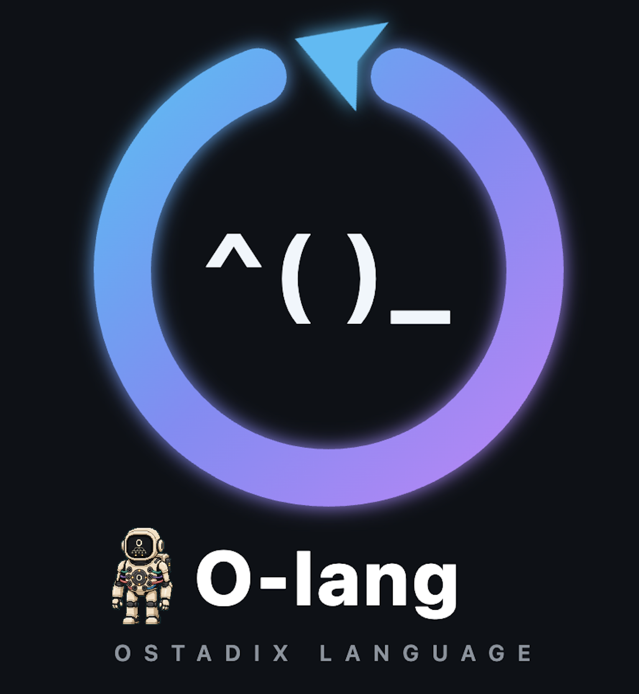
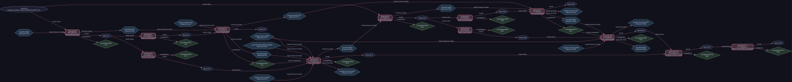

By Lee Daghlar Ostadi


Every expression carries its evaluator as part of its syntax.
I created Ostadix-lang to make a whole polyglot program one typed expression
tree. A language boundary appears where computation changes language, and the
result crosses that boundary as an OValue. The same source can become an
admitted operation graph, execute through persistent evaluators or native
machinery, and leave evidence that can be inspected independently of the prose
describing it.
An experimental operation-project layer now keeps one logical operation
invariant while comparing explicitly supplied realization, target,
representation, and residency tuples. Its authority-free planner selects a
statically compatible tuple deterministically; the marked-project bridge binds
the descriptor to exact captured implementation bytes and a deterministic,
versioned serialized route-pipeline projection before o run enters the existing admission
and executor path. Those separate joins do not prove that the route loads the
named artifact, behavioral equivalence, live target eligibility, placement
authority, or execution on the described physical target.
html^(
<p>The answer is python^(
__oval_result__ = sum(x*x for x in range(10))
)_python.</p>
)_html
LANG^( body )_LANG is an expression form. The parser records the evaluator
tag and nested source in one tree. The evaluator runs the inner Python block,
lifts its result into OValue, and renders that value according to the
receiving HTML expression. The nesting itself is the interface.
The system has two computational languages:
.O, composes hosted languages, persistent
evaluator environments, deferred work, project routes, operating-system
values, and distributed placement through typed parentheses and OValue..oc, compiles statically typed machine computation
through resolved HIR and SSA MIR into freestanding x86_64 and bounded
AArch64 objects. OKernel is built through this pipeline.OIR models orchestration among evaluators. O-core MIR models control flow, memory, ABI, atomics, hardware operations, and native execution. That division lets Python, Rust, Nix, SQL, HTML, and the other hosted evaluators remain rich user-space participants while the native target remains freestanding.
OSTADIX names the integrated system. Ostadix-lang is its hosted language and evidence-bound HGraph runtime. O-core is its native systems language. OKernel is the capability-oriented kernel. O-Machine names the architecture-specific resource and virtualization substrate. A governed World names the distributed identity, resource, namespace, and execution ontology. The first integrated-system release that satisfies the G0 through G13 qualification gates is named OSTADIX Alpha.
The artifact set is pinned to master commit
36787b16476bc0c8c4ddf665c7228b314d04e716. At that snapshot,
ostadix-api owns 42 engine modules. Its 36 public module identities are
reexported by the root compatibility library. The root Cargo package declares
14 binaries, including ogit and ocore-kernel-world-record. The backend
catalog contains 30 canonical backends and six aliases, including canonical
ubuntu_vm with the ubuntu alias. Current master tracks 44 recursively
discovered .O examples. The in-checkout MCP server exposes 10 tools. Native
release evidence contains 26 required portable QEMU gates and one supplemental
hardware gate.
The isolated audit of that pinned snapshot recorded 1,351 passing tests and three ignored tests. Its portable native aggregate recorded 26 of 26 required gates passing. The exact historical validation scope and the then-observed G0 evidence continuity defect are recorded in Validation at the audited master and Exact implementation boundaries.
The current M3 boundary is specified separately by OIR Execution Fabric V1 and the authenticated pure remote-execution design note.
Read the system from left to right:
source → admitted graph → placement → execution → evidence
flowchart LR
S["Source<br/>.O document or lifted project"]
P["Parse and close source<br/>ONode or ProjectBundle"]
G["Construct graph<br/>OIR and Logical HGraph"]
A["Admit graph<br/>Evidence V6 and Admission V6"]
L{"Place admitted work"}
X["Execute<br/>local workers, Hosted V2, Fabric V1, or mesh peer"]
R["Observe<br/>OValue and RuntimeGraph"]
E["Prove<br/>trace, receipt, DOT, and release gates"]
S --> P --> G --> A --> L --> X --> R --> E
The arrows represent custody of one exact computation. Each stage adds a stronger artifact while retaining the identities required to connect it to the source that created it.
A .O document is a recursive evaluator tree. Each typed parenthesis chooses
the evaluator for that expression. Bindings, environment indices, lazy
requests, coordination groups, and nested expressions are parsed into one
structural document. A directory can enter the system through o-link as a
literal linked program or as a lossless route-preserving ProjectBundle.
The novelty is structural evaluator composition. The unit of composition is the expression itself, so language selection, nesting, value transfer, and source location remain visible to the parser and compiler.
The compiler lowers ordinary .O source into OIR, an ExecutionPlan, and an
executable HGraph. Project input becomes a canonical Project Logical HGraph
whose operations carry route, prerequisite, input, output, environment, and
effect declarations. Evidence V6 binds the exact source, backend catalog,
adapter identities, graph, and policy. Admission V6 checks that evidence and
produces the authority-bearing AdmittedExecution consumed by dispatch.
This makes graph construction and execution two observable phases. The graph can be rendered, explained, hashed, and rejected before an operation starts.
The unified lowercase o front door accepts a .O file, a directory, or an
already lifted project. It resolves the intended route, constructs the graph,
performs fresh admission, and selects local workers, a directly addressed
Hosted V2 session, or a paired Project Mesh V1 peer. The narrower Fabric V1
path is selected explicitly for an admitted M2 pure renderer attempt; it does
not perform automatic placement or local fallback. Placement profiles bind
backend requirements to exact executable realizations and short-lived capacity
proofs.
The placement unit for a project is a source-closed route and prerequisite island bound to the canonical project graph. A retry creates a new actor generation with fresh authority and evidence.
Inline evaluators execute structural forms. Hosted evaluators run through
persistent length-prefixed canonical-CBOR processes, preserving explicitly
indexed environments across calls. The readiness-driven HGraph executor starts
operations as their value, completion, and resource-state dependencies become
available. Project execution records the dynamic RuntimeGraphV1 that actually
occurred.
O-core follows its own native pipeline from AST to HIR to SSA MIR to object code. OKernel then exercises process isolation, scheduling, IPC, loader and OVFS, native services, personality RPC, World codecs, and KernelWorld objects through booted gates.
Ostadix-lang records exact source and graph identities, backend and adapter
digests, admission decisions, placement leases, normalized outcomes, resource
transitions, and terminal receipts. olangc --target ir exposes the plan.
olangc --target dot exposes the HGraph. o explain exposes why an operation
was admitted and placed. Hosted V2 journals and World receipt formats bind
longer-lived execution facts. The native gate manifest binds positive claims
to exact transcript markers.
O --crossing-evidence also records direct admitted backend operations: the
prepared binding hashes, bounded directional input-profile assessments,
and returned OValue hashes, with publication and discarded completion reported
separately. These opt-in diagnostics bind the admission and adapter launch
generation; they do not infer native egress fidelity from an already lifted
result. See bounded semantic custody.
The evidence layer turns an implementation claim into a reproducible route from source bytes to observed execution.
Continue: Quickstart · Full setup · Hosted Placement V6 · Compiler and composition tools · O-core · Tests
For a fresh checkout, build the minimal hosted profile before invoking the
installed tools. setup.sh also refreshes the local wrappers, so the commands
below exercise the source revision you just checked out rather than an older
binary already on PATH:
git clone https://github.com/lostadi/Ostadix-lang.git Ostadix-lang
cd Ostadix-lang
./setup.sh -y --minimal
source "$HOME/.config/ostadix/env.sh"
O examples/hello.O "$PWD/backends"
# expected: [number] 2
O version --json
O version --json reports the package, toolchain, admission, catalog, Hosted,
and World schema coordinates compiled into that executable.
The normal source archive pins source and Cargo resolution, but deliberately
does not pretend that one native Rust compiler can run on every host. For an AI
or another offline recipient, build a per-host offline kit instead. That ZIP
contains the allowlisted repository source, Cargo, rustc, the complete pinned
Cargo registry closure from all four released lockfiles, and the
wasm32-wasip1 standard library. After extraction, the recipient runs:
./bootstrap-offline.sh check
./bootstrap-offline.sh all-supported
./bootstrap-offline.sh wasm-std-check
The archive verifies its exact member hashes, rejects the wrong OS/architecture,
uses a sealed kit-local Cargo home and target directory, and forces Cargo
offline with --frozen --locked. all-supported builds the authoritative
hosted Rust binaries and the separately locked MCP server. Android APKs,
nightly fuzzing, O-core/QEMU media, the C17 edition, system linkers/SDKs, and
hosted language runtimes have separate toolchain requirements and are not
misrepresented as part of that profile. Build and redistribution instructions
are in Per-host offline AI build kit.
Ordinary LAN use keeps transport and proof coordinates internal. On Unix-like hosts (including WSL), start a node on both machines:
o node start
For a newly launched node, start returns success only after the hosted TCP
listener is bound. Configuration and spawn errors are returned directly. If
the launched child fails or times out, the command prints diagnostics from that
launch and retains the complete private log path. Durable recovery is allowed
120 seconds by default; use --startup-timeout-seconds N for an unusually
large state root. If a managed PID already exists, start reports it without
re-probing listener readiness.
Fresh automatic TLS material remains RSA-3072 by default. The explicit
--fresh-pki-key-algorithm ec-p256 profile is available when key-generation
latency under cross-architecture emulation matters; it still creates and
verifies fresh CA, node, client, and pairing identities. The hosted-live
release gives that one-time nested-TCG provisioning a bounded 900-second budget
while retaining the separate 30-second post-provisioning listener-readiness
deadline.
On the first machine, open a one-use five-minute pairing offer:
o node pair
On the second machine, use the printed node ID and type the ten-digit passcode at the hidden prompt:
o node pair NODE_ID
--passcode-stdin is available for noninteractive input. When ordinary LAN
discovery does not cross the route, keep the same authenticated exchange and
name the directly TCP-reachable pairing endpoint with --address HOST:7340.
Later commands use the paired identity over a reachable hosted-service route.
Later ordinary commands reuse the reciprocal pinned identities without another passcode, address, certificate, key, capability, lease, operation ID, or proof file:
o node profile --node NODE_ID
o node run --node NODE_ID examples/hello.O
o node session run --node NODE_ID examples/hello.O
To test a known service route without changing the stored identity, use, for
example, octl node profile --node NODE_ID --address HOST:7337. That combination
overrides only the socket for that invocation and retains the paired CA, server
name, client credential, and receipt-key pins.
Destination-issued pairing client certificates are valid for 397 days. To renew them, or to repair a pairing that persisted on only one side, create and join a fresh offer with explicit replacement enabled on both machines:
# offering machine
o node pair --replace
# joining machine
o node pair NODE_ID --replace
Ordinary pairing remains fail-closed when material differs from an existing
pin; only --replace authorizes that staged replacement.
Use o node list to inspect reachable nodes and o node use NODE_ID only when
you need to choose among several semantic nodes. Explicit transport and trust
configuration remains available through --manual and o node-host for
operators who deliberately need it.
The default is pairing-required. UDP discovery supplies a routing hint. SPAKE2
plus explicit confirmation binds the server CA, server name, and receipt-key
pins. Public CA, CSR, certificate, and receipt material crosses the pairing
channel; fresh per-peer private keys stay local. The explicit --lan-open
switch retains the former shared-key bootstrap for compatibility. A discovery
reply can select a route, while the persisted pairing pins decide identity.
The full transport and trust contract is documented in
Zero-configuration LAN nodes.
After the nodes are running and paired, the unified intent front door can place a source-closed project route on an authenticated peer:
o run ./large-codebase --parallel auto --route build \
--explain-mesh --mesh-trace-out mesh-attempt.json
The default prefer policy permits two additional remote attempts and allows
local fallback while the evidence proves execution has not started. The
transferred actor is the exact project bundle plus a route and prerequisite
island bound to its canonical Project Logical HGraph. Every retry receives a
fresh actor generation. --mesh=required makes peer placement mandatory. LAN
advertisements and the paired-peer registry supply the candidate set. The
protocol, replay matrix, and CLI flags are in Project mesh
V1.
flowchart LR
D["UDP discovery<br/>routing hint"]
P["SPAKE2 pairing<br/>explicit confirmation"]
K["Pinned peer identity<br/>CA, name, receipt key"]
C["Source closure<br/>ProjectBundle"]
H["Logical HGraph<br/>selected route island"]
A["Fresh admission<br/>actor generation"]
M{"Mesh placement"}
R["Authenticated peer execution"]
F["Eligible local fallback"]
E["Trace and receipt"]
D --> P --> K
C --> H --> A --> M
K --> M
M --> R --> E
M --> F --> E
Read the upper path as identity establishment and the lower path as project custody. They meet at placement, where a paired identity and an admitted graph are both required for remote execution.
The same front door accepts ordinary .O files and lifted project bundles.
For an ordinary .O, --parallel auto uses the local HGraph worker pool.
Planning is static by default; use
o plan INPUT --parallel auto --live only for bounded readiness/discovery
observations. Node lifecycle remains an explicit o node operation. See the complete
Unified Intent Front Door V1 contract.
Fabric V1 can authenticate and execute the admitted M2 pure renderer profile on
an explicitly selected o-node, returning a bounded provisional candidate
whose graph publication and settlement remain coordinator-controlled.
The remote node may authenticate and authorize the request, reconstruct the source-closed operation, compute it, durably fence replay, and return a candidate. It may not mutate or publish HGraph state, identify an authoritative HGraph node, select the winning attempt, settle the trace, advance resource versions, commit effects, or initiate retry. Candidate validation, provisional publication, and deterministic settlement remain separate coordinator-owned transitions. The coordinator is the sole graph-commit authority and the sole linearization locus for graph transitions.
The focused proof in tests/execution_fabric_two_node.rs runs two real
o-node processes on the same host with separate ports, TLS identities, node
identities, state directories, ledgers, node generations, and explicit Fabric
authority enrollment. Both nodes match local execution. Cross-node leases and
wrong-node candidates are rejected; stopping the selected node produces an
infrastructure failure without invoking the local renderer; Hosted and Mesh
ALPN routes remain operational. This is process-boundary evidence, not a
physical-multinode, distinct-kernel, or heterogeneous-hardware claim.
M3 makes these exact nonclaims:
.O distribution;The frozen records, authority envelope, transport constraints, and complete evidence boundary are documented in OIR Execution Fabric V1 and the M3 internal design note.
The current development tree makes ostadix-api the independently packageable
runtime engine. It owns the parser, IR, evaluator, HGraph, evidence/admission,
scheduler, hosted/project/World machinery, bundled backend shims, and generated
runtime source bundle. The root o-lang package is now a compatibility and CLI
shell with a one-way exact-version dependency on that engine.
The concise owned entry point requires an explicit backend-shim directory and has an engine-owned parse/evaluate error surface:
use ostadix_api::{OValue, Runtime};
let mut runtime = Runtime::new("/absolute/path/to/backends");
let value: OValue = runtime.evaluate("text^(hello)_text")?;
Direct engine users may import the 42 public runtime modules from
ostadix_api, including parser, ir, hgraph, evidence, eval,
execution_fabric, execution_fabric_authority, executor, hosted_remote,
project, and world. Historical
o_lang::<module> paths explicitly reexport the same nominal types. Reflected
diagnostic paths such as type_name name the defining ostadix_api crate even
when code imports the compatibility path. Six additional engine modules remain
crate-private implementation structure.
Registry publication order is now ostadix-api first, verify that exact version
is available, then publish its o-lang shell dependent. This dependency
inversion is an unreleased source-contract change and must not be published by
moving or replacing the immutable v0.3.0 tag. Ordinary workspace checks
include both packages; fuzz and MCP keep their independent roots and lockfiles.
Choose the next path according to what you want to inspect:
| Goal | Continue with |
|---|---|
| Learn typed-parenthesis syntax | Gentle introduction |
| Build all supported local tools | Full setup guide |
| Inspect source -> OIR -> HGraph -> observed-result custody | Bounded semantic custody |
| Inspect or plan an operation's realization declarations | Operation planning and observation V1 |
| Run durable signed sessions | Hosted V2 development quickstart |
| Compile freestanding native code | O-core native systems language |
| Run the repository gates | Running the tests |
| Surface | Current status |
|---|---|
| Typed-parenthesis hosted language and OValue crossing | Supported core |
| OIR, ExecutionPlan, Graph V2, Evidence/Admission V6, local executor | Supported core under hardening |
| Explicit Graph V1 / Evidence and Admission V5 / Why V1 | Archival inspection and compatibility verification only |
| Information Kernel V1 and backend-morphism V1 | Experimental local shadow surfaces; non-authorizing |
| Operation semantics and realization planning V1/V2 | Experimental canonical records, deterministic single-operation static ranking, and exact project-route binding; non-authorizing |
| Hosted V2 durable sessions and direct-node placement | Experimental integration with dedicated lifecycle and recovery tests |
| Authenticated pure Execution Fabric M3 | Experimental same-host, two-real-process proof; coordinator-only graph authority |
| Project lifting, route execution, and live supervision | Experimental integration |
| O-core compiler and OKernel gates | Bounded research implementation; see exact QEMU nonclaims |
| O-Machine and elastic governed World | Research direction with bounded offline records and milestone proofs |
Experimental surfaces have executable implementations and tests. Their compatibility, operational, and distributed guarantees are still being hardened around the supported hosted core. See claims and evidence for the exact qualification boundary.
The independent engine defines four canonical, authority-free semantic records:
OperationContractV1, OperationInterfaceV1,
RealizationDescriptorV1, and RealizationSetV1. They give stable content
identities to one declared logical operation, its named ports, and declarations
of possible realizations without turning those declarations into executable
objects.
The lowercase front door can validate one record or check one exact supplied reference closure:
o operation inspect contract contract.json
o operation inspect interface interface.cbor --json
o operation inspect descriptor descriptor.cbor
o operation inspect set realization-set.cbor --json
o operation verify \
--contract contract.cbor \
--interface interface.cbor \
--descriptor realization-a.cbor \
--descriptor realization-b.json \
--set realization-set.cbor
inspect performs single-record validation and leaves references unresolved.
verify checks only exact contract/interface/descriptor/set referential
consistency. Neither command plans or selects a realization. See the
four-record V1 contract for canonical
encoding, identity, exit status, and its exact boundary.
The additive planner accepts one bounded, explicit list of complete realization/target/representation/residency tuples for exactly one logical operation. It checks the semantic closure, exact fidelity and target-footprint references, static target facts, port representations, and complete cost-profile binding. It rejects dynamic environment, effect, and capacity requirements, then selects the lowest checked component-plus-uncertainty cost with a canonical tie break. It does not construct a Cartesian product.
The bundled normalize operation exercises the marked-project front door:
cd examples
o operation normalize
o realizations normalize
o plan normalize --explain
o run normalize
o observe normalize
o replan normalize --without-target gpu-1
operation and realizations validate the descriptor's implementation digest
against one captured regular file, its execution-pipeline reference against the
ostadix.project-route-pipeline/v1 projection of one manifest route, and the
complete candidate's cost-profile binding. They do not select or execute.
plan ranks and selects without dispatch. run repeats exact preflight, pins
the selected project route and its project HGraph/deployment identities,
executes through the existing project path, and requires a durable run record.
run freezes the original operation decision before dispatch and retains the
original planning request, operation DeploymentPlanV2, and selected candidate
in its content-addressed terminal record. observe verifies these retained
records against the frozen decision and unchanged bundle, checks the recorded
project-route identities, and emits a RuntimeGraphV2 without reranking the
historical selection. Older records without the optional operation fields use
explicitly labeled current-planner reconstruction. replan applies caller-supplied
exclusions and emits a recomputed, non-executing DeploymentPlanV2. It emits a
descriptive RecoveryPlanV1 only when the exact source observation failed and
selection changed; a successful source run is not a recovery event. Recovery
planning is not recovery execution, and no alternative is dispatched.
In the displayed successful flow, gpu-1 is declared unavailable but has no
offer, so the exclusion is a no-op and emits no recovery plan.
Static rankability is not live target eligibility. State and actor requirements, objective ruleset content, cost and validation evidence, and physical residency feasibility remain unresolved. Local execution observations distinguish a captured artifact submitted as a direct entrypoint from an indirect route whose artifact use is not established. They compare the local process platform with declared target facts, without claiming authenticated physical target identity. A manifest route binding still does not prove behavioral equivalence or that an interpreter loaded the submitted artifact. The example's two ambient Python targets are descriptive static alternatives, not distinct observed machines or failure domains. None of these records or inspection/planning commands grants admission, capability, reservation, lease, dispatch, retry, checkpoint, effect-fencing, or World authority. See the operation planning and observation contract for the complete schema, runtime/recovery-record, execution, and nonclaim boundaries.
The current execution path uses Graph V2, oexec.evidence/v6, and
oexec.admission/v6 across uppercase O, the evaluator and coordinator, the
CLI, and MCP intent execution. Evidence V6 preserves typed fidelity and Why V2,
then prepares placement V2 fragments. Hosted Placement V6 adds
transport-independent target descriptors, requirements, warrants, capacity
proofs, and leases. The direct-node V1 compatibility path executes one fresh
source document. The V2 path combines a locally prepared single-shim fragment,
a complete signed placement proof, and a durable explicitly closed session.
flowchart TD
I["User intent<br/>o run, o plan, or MCP handle"]
S["Exact source closure"]
G["Graph V2<br/>OIR or Project Logical HGraph"]
E["Evidence V6<br/>digests, types, provenance, policy"]
A["Admission V6<br/>AdmittedExecution"]
P["Placement V2<br/>descriptor, warrant, capacity, lease"]
D{"Dispatch target"}
L["Local HGraph workers"]
N["Direct Hosted V2 node"]
M["Paired Project Mesh peer"]
T["RuntimeGraph and terminal evidence"]
I --> S --> G --> E --> A --> P --> D
D --> L --> T
D --> N --> T
D --> M --> T
Read downward until the dispatch diamond. Every path above that diamond is a fresh source-bound authority decision. The three branches below it are placement choices over the same admitted computation.
Current durable Hosted V2 state roots carry an exact package-0.3 execution authority marker for Graph V2, Evidence/Admission V6, and placement-admission V2. A pre-0.3 root containing archival journals but no marker is rejected without mutation; old journals and signed V1 placement-admission leases are not migrated, relabeled, or executed.
Admission version and backend-catalog generation are separate version axes.
O version --json reports the independent coordinates compiled into the
interpreter; VERSIONING.md defines their compatibility
rules.
The current authorizing catalog is ostadix.backend-catalog/v6; its schema is
part of both the whole-catalog digest and every backend-specification digest.
A placement profile that advertises any V5 or older backend identity remains decodable
and independently auditable, but fails current profile validation before it can
authorize candidate selection or warrant discharge. There is no digest
relabeling or silent V5-to-V6 uplift. V4 remains the archival generation that
added each backend's state-support tier and snapshot-compatibility identity.
V5 extends that frozen projection with one explicit optional bounded
backend-morphism profile. Python, JavaScript, and Rust carry that profile; the
field is absent for the other 27 canonical backends. The Catalog V5 rollover
itself changed catalog identity without changing BackendInterface or
execution behavior at that rollover. V6 retains the V5 projection shape and
adds ordered wasm-tools+wasmtime and wasm-tools+wasmer WebAssembly runtime
alternatives after the two frozen WABT alternatives. Package 0.3 separately makes Graph
V2/Evidence V6 current; morphism profiles remain shadow metadata on that path.
An explicit Python plain-data crossing contract
now enforces supported conversions at actual dispatch boundaries. It does not
change those catalog profiles into universal proofs.
Rebuild the runtime and MCP server, then regenerate
short-lived profiles and all derived placement evidence after this rollover. The
exact boundary and regeneration sequence are in Hosted Placement
V6.
Current implementation identity also uses the path-independent
ostadix/backend-executable-set/v2 projection and
ostadix.local-realization/v2 hash material. Physical paths and retained file
handles remain process-local launch authority, while selected executable roles,
catalog-alternative coordinates, and immutable content identify the realization.
A legacy local-realization V1 record remains inspectable but cannot authorize a
current profile; it is never relabeled as V2.
The ordinary LAN surface keeps protocol coordinates internal:
o node start|stop|status|restart
o node pair [NODE_ID]
o node list|use
o node profile|doctor|run
o node session start|run|send|info|stop
The expert surface remains available without becoming the default contract:
o node-host pki|identity|profile|doctor|serve|admin ...
octl node ... --manual --address ... --server-name ... --ca ... --cert ... --key ...
octl node authority init|issue ...
octl node authority dev-mint open|execute|recover ...
octl node session principal|open|exec|status|actors|reset|recover|close ...
After normal setup, the lowercase wrapper routes node lifecycle and pairing
commands to o-node, ordinary node use to octl, and o node-host ... to the
raw expert server CLI. o run FILE.O is local; o run PROJECT --parallel auto
uses already-running authenticated peers in mesh-prefer mode with safe local
fallback. No form starts a node implicitly. See Zero-configuration LAN
nodes.
Expert/manual path. Ordinary users should use
o node start,o node pair,o node list, ando node session run FILE.O, or the compatibility./o-node-quickstart.shfront door. Pairing establishes the reciprocal transport identities once; later ordinary commands derive routing, credentials, capabilities, leases, and operation identities automatically. The walkthrough below deliberately exposes those internals for protocol development and fault diagnosis.
This loopback walkthrough exercises the opt-in durable V2 path with the
co-located, self-attested development authority. Production deployments supply
their discovery, enrollment, scheduling, and key-management systems through
the corresponding explicit interfaces. Paste each code block separately. If
zsh displays heredoc>, press Ctrl-C before continuing; the commands below
intentionally avoid heredocs.
First refresh the installed tools and prove ordinary local execution:
cd "${O_LANG_ROOT:-$HOME/Ostadix-lang}"
git switch master
git pull --ff-only origin master
./setup.sh -y --minimal
export O_LANG_ROOT="$PWD"
export PATH="$HOME/.local/bin:$O_LANG_ROOT/target/release:$PATH"
O examples/hello.O "$O_LANG_ROOT/backends"
# expected: [number] 2
In Terminal 1, create a fresh private demo root, one persistent Python
fragment, the development PKI, the node receipt identity, and the placement
authority. o-node pki init and both identity initializers refuse to overwrite
existing keys, so use a new demo root for each walkthrough:
export DEMO="$(mktemp -d "${TMPDIR:-/tmp}/ostadix-v2-demo.XXXXXX")"
export PKI="$DEMO/pki"
export STATE="$DEMO/state"
export AUTH="$DEMO/authority"
printf '%s\n' 'python[7]^(' '__oval_result__ = 1 + 1' ')_python[7]' >"$DEMO/demo.O"
o-node pki init --directory "$PKI" --server-name localhost
o-node identity init --state-dir "$STATE"
octl node authority init --directory "$AUTH"
printf 'export DEMO=%q\n' "$DEMO"
Keep Terminal 1 open and start the node. V2 is enabled only because the state root and pinned placement-authority key are explicit:
o-node serve \
--node-id demo-node \
--shim-dir "$O_LANG_ROOT/backends" \
--runtime-binary "$O_LANG_ROOT/target/release/O" \
--bind 127.0.0.1:7337 \
--cert "$PKI/node-cert.pem" \
--key "$PKI/node-key.pem" \
--client-ca "$PKI/ca.pem" \
--v2-state-dir "$STATE" \
--v2-authority-public-key "$AUTH/placement-public-key.v2"
In Terminal 2, paste the exact export DEMO=... line printed by Terminal 1,
then paste this block to reconstruct the remaining paths and check the TLS
endpoint:
cd "${O_LANG_ROOT:-$HOME/Ostadix-lang}"
export O_LANG_ROOT="$PWD"
export PATH="$HOME/.local/bin:$O_LANG_ROOT/target/release:$PATH"
export PKI="$DEMO/pki"
export STATE="$DEMO/state"
export AUTH="$DEMO/authority"
octl node profile \
--address 127.0.0.1:7337 \
--server-name localhost \
--ca "$PKI/ca.pem" \
--cert "$PKI/client-cert.pem" \
--key "$PKI/client-key.pem"
Mint and immediately submit Open. The integrated --submit path matters:
development capacity observations expire after four seconds and are not meant
to survive a delayed handoff between separate manual commands.
octl node authority dev-mint open \
--signing-key "$AUTH/placement-signing-key.v2" \
--shim-dir "$O_LANG_ROOT/backends" \
--runtime-binary "$O_LANG_ROOT/target/release/O" \
--source "$DEMO/demo.O" \
--node-id demo-node \
--state-tier checkpoint-restore \
--client-cert "$PKI/client-cert.pem" \
--capability-out "$DEMO/capability.json" \
--out "$DEMO/open-lease.json" \
--submit \
--address 127.0.0.1:7337 \
--server-name localhost \
--ca "$PKI/ca.pem" \
--key "$PKI/client-key.pem" \
--node-receipt-public-key "$STATE/node-signing-public.v2"
The response contains a signed session_opened event. Mint and submit the
first operation; the node, rather than the client, establishes its physical
actor generation:
octl node authority dev-mint execute \
--signing-key "$AUTH/placement-signing-key.v2" \
--shim-dir "$O_LANG_ROOT/backends" \
--runtime-binary "$O_LANG_ROOT/target/release/O" \
--open-lease "$DEMO/open-lease.json" \
--source "$DEMO/demo.O" \
--operation-id demo-operation \
--task-sha256 1111111111111111111111111111111111111111111111111111111111111111 \
--capability "$DEMO/capability.json" \
--operation-out "$DEMO/operation.json" \
--out "$DEMO/execute-lease.json" \
--submit \
--address 127.0.0.1:7337 \
--server-name localhost \
--ca "$PKI/ca.pem" \
--cert "$PKI/client-cert.pem" \
--key "$PKI/client-key.pem" \
--node-receipt-public-key "$STATE/node-signing-public.v2"
Execute admission returns a signed operation_accepted event. Status is
asynchronous, so repeat the first command until demo-operation reaches
succeeded; the actor view then contains the established generation and
checkpoint:
octl node session status \
--address 127.0.0.1:7337 \
--server-name localhost \
--ca "$PKI/ca.pem" \
--cert "$PKI/client-cert.pem" \
--key "$PKI/client-key.pem" \
--node-receipt-public-key "$STATE/node-signing-public.v2" \
--capability "$DEMO/capability.json" \
--operation-id demo-operation
octl node session actors \
--address 127.0.0.1:7337 \
--server-name localhost \
--ca "$PKI/ca.pem" \
--cert "$PKI/client-cert.pem" \
--key "$PKI/client-key.pem" \
--node-receipt-public-key "$STATE/node-signing-public.v2" \
--capability "$DEMO/capability.json"
Close explicitly when finished. Closing preserves the signed journal; offline
o-node admin gc-closed removes active payloads while retaining the permanent
replay tombstone.
octl node session close \
--address 127.0.0.1:7337 \
--server-name localhost \
--ca "$PKI/ca.pem" \
--cert "$PKI/client-cert.pem" \
--key "$PKI/client-key.pem" \
--node-receipt-public-key "$STATE/node-signing-public.v2" \
--capability "$DEMO/capability.json"
Return to Terminal 1 and press Ctrl-C to stop the node.
The automated recovery gate below additionally kills and restarts the node, proves that the old physical actor generation is fenced, and submits an exact checkpoint recovery before any replacement evaluator runs user work. See the full authority, quota, failure, and non-claim boundaries in Hosted Placement V6.
Eligibility is keyed by TargetDescriptorV1, not an ISA or language display
name. RequirementFootprintV1 collects the operation's capability, value,
effect, environment, and resource constraints; PlacementWarrantV1 records
the exact evidence discharging each atom. Strict placement trusts compiler-
static requirements and fresh discovered/enforced target facts. Provider-
declared or historical positive evidence requires an explicit non-default
PlacementTrustPolicyV1. The eligibility proof and any resulting lease bind
the selected trust policy and warrant discharge by digest.
Both paths use TLS 1.3 mutual authentication with pinned trust inputs. V1 binds
exact source, task and attempt identities, the backend-catalog digest, deadline,
and output limit and returns a self-digested HostedOperationReceiptV1; each
request gets a fresh evaluator. V2 additionally binds the exact locally derived
OIR, requirement footprint, portable placement admission, backend
implementation, realization pipeline, trust policy, capacity observations and
reservations, hosted command, state session, and the applicable actor-generation
state under one Ed25519-signed authority envelope. A first stateful execute
carries no invented physical actor identity: the node derives and signs that
generation after exact local preparation, and every later execute must pin it.
The node locally prepares the submitted bytes and re-evaluates the full proof
against the current catalog before consuming the non-cloneable fragment.
Preparation accepts one non-whitespace semantic root containing exactly one
shim Exec, no coordinator scope, and no nested evaluator authority. The
complete process-local V6 admission remains a separate dispatch-freshness
check; ambient process identity is deliberately excluded from the signed
portable coordinate.
Open fixes the target, exact requirement footprint, backend implementation and
pipeline, logical environment, trust policy, and compute reservation, not one
source document for the session lifetime. For a stateful session, the first
execute additionally fixes the physical ActorGenerationIdV1, including exact
sandbox and launch context; later executes must match it. Each execute lease
separately binds its exact source-derived OIR, task attempt, portable placement
admission, deadline, and operation. A persistent environment can therefore
receive multiple separately authorized commands only while those fixed
coordinates remain equal.
V2 binds the TLS client-certificate fingerprint and a separate random 256-bit
session bearer. octl creates and fsyncs the mode-0600 capability file before
the first network write; the signed Open request commits to those exact bytes,
while the node persists only a salt, salted hash, and commitment. A response
loss can therefore be retried with the byte-identical signed request and bearer,
even after restart or proof expiry, without allocating a second session. The
node-signed session hash chain and separate signed authority journal reconstruct
accepted/refused lease nonces and distinguish an exact full-request retry from
conflicting reuse. Offline GC atomically relocates the already-signed closed
session journal into a permanent tombstone archive before deleting operation
and checkpoint payloads; the archive preserves the retired session identity and
every spent lease nonce without duplicating the journal under quota pressure.
The five hard state quotas cover open sessions, actors per session, snapshot bytes
per actor, state bytes per session, and total state bytes; pressure refuses work
without evicting an actor. On Unix, state uses owner-only directories/files and
durable writes, but source, results, journals, and checkpoints are not encrypted
at rest. Only an explicit close followed by the offline audited GC command
removes active session payloads; the signed journal tombstone remains
permanent. Absolute deadlines bound backend dispatch/wait and value acceptance;
result encoding, checkpointing, journal fsync, and terminal response publication
may finish later. They do not cancel or roll back effects already performed by
a backend.
For direct Rust embedders, the preferred lifecycle API is a non-cloneable
HostedV2RuntimeOwner plus cloneable HostedV2RuntimeHandle values. The owner
alone carries deterministic shutdown authority and durable-store/worker
lifetime; handles can submit and query but cannot shut the runtime down.
HostedV2RuntimeOwner::shutdown() stops admission, waits for in-flight API
calls, queues actor close behind already accepted mailbox work, joins every
actor thread, and releases durable-store/root-lock ownership before returning.
Dropping the owner runs that same barrier, while an explicit call is required
to observe a worker failure. Operation terminality or a session-level Close
alone does not prove runtime quiescence. Concurrent and repeated shutdown calls
observe the same result; surviving handles receive HostedV2RuntimeClosedV2,
while wire requests receive non-retryable runtime-closed. A worker panic
produces HostedV2RuntimeShutdownErrorV2 only after the root lock is released,
allowing an immediate same-directory reopen even while old handles remain.
The cloneable HostedV2Runtime remains source-compatible through the 0.2 line
for existing embedders and serve_node_dual callers. It combines request and
shutdown authority and its final Drop remains bounded best-effort cleanup.
New code should use the owner/handle API and serve_owned_node_dual; this is a
documentation-level compatibility transition, not a Rust #[deprecated]
warning that would break downstream warnings-as-errors builds.
On Unix, o-node serve installs SIGINT/SIGTERM handling before it opens an
enabled V2 state root. The first termination signal stops TCP admission, runs
the same deterministic V2 shutdown barrier, and joins every already-accepted
V1/V2 connection before returning. A second termination signal restores the
signal's default action and forces process termination; work interrupted by
that escape hatch is classified by the existing restart rules. Graceful node
shutdown does not close a durable session, delete its payloads, or perform GC.
The current state tiers have exact recovery contracts. Stateless requires a
fresh fragment and a catalogued stateless backend. CheckpointRestore requires
a persistent environment and the exact catalogued semantic-snapshot codec.
LiveActorOnly requires catalogued external-pinned state and ends with actor
loss. ReplayReconstructible is represented on the wire and reserved for a
future implementation. Automatic registry discovery, scheduler-driven target
selection, retry, local fallback, and project-bundle dispatch belong to the
source-closed Project Mesh path exposed by o-link and o run PROJECT. Mesh
retry creates a policy-checked new actor generation. For a
development-only loopback setup, o-node pki init,
o-node identity init, and the clearly labeled co-located authority helper
provision the necessary identities and full proof bundle without being a
production enrollment, discovery, or scheduling service. The helper mints open
and execute authority and can derive the bounded checkpoint-recovery authority;
each command can optionally submit immediately so its short-lived capacity
evidence is not exposed to a manual multi-process delay. Recovery succeeds only
after the current Python or SQL adapter acknowledges restoration of the exact
durable snapshot. Restart or loss of a stateful worker first durably fences the
old physical generation and enters RecoveryRequired; no user command runs on
a replacement evaluator before that acknowledgement. A signed
RecoveryAttemptStarted consumes the one-use nonce and the replacement
generation before launch, and restart deterministically refuses an unfinished
attempt so that generation cannot be reused. Unsupported future codecs and
live-only state remain fail-closed.
The separate o-registry CLI manages a local, durable, signed namespace
registry: init, profile-local, publish-profile, verify, list,
export, and import. Its canonical snapshots support pinned roots and
prefix-scoped delegation for offline federation. Explicit export and import
connect this local store to other systems; octl and scheduler dispatch use
their own live inputs. Normal setup also exposes it as o registry ... and
installs the native ostadix-evaluator alias used for exact runtime
fingerprinting without treating the case-insensitive O/o dispatcher as the
evaluator artifact. o-node doctor and serve use that same native alias as
the admitted O --o-backend proxy (or a sibling native O development build);
--runtime-binary selects an explicit native image, and shell dispatchers are
rejected. The default/sibling O path is covered by the hosted execution gate;
an arbitrary explicit image receives a format preflight and proves protocol
compatibility only when an admitted hosted block launches. Registry profile-local
records default to 45 seconds and accept --valid-for-seconds from 1 through
the placement-core maximum of 60.
For a laptop-only information workflow, the installed o info route (backed
by o-info) creates a deterministic local
head, keeps the Ed25519 private key separate from its public-only trust file,
records one declared public scalar, and emits a canonical signed offline pack:
o info init --state .ostadix-information
o info keygen --key .ostadix-keys/info-private.json \
--trust .ostadix-keys/info-trust.json
o info record --state .ostadix-information \
--key .ostadix-keys/info-private.json --pack result.info.cbor \
--namespace local --kind research-result --coordinate name=demo \
--predicate ostadix.local/public-scalar-v1 --scalar text --value "ready" \
--acknowledge-public
o info verify --pack result.info.cbor --trust .ostadix-keys/info-trust.json
o info head --state .ostadix-information
This workflow is local and offline.
o info import advances a local head only when the signed pack has the exact
current base and every bounded object proves its canonical type and expected
base-plus-addition revision. Otherwise it retains the verified pack under
historical-packs/, reports historical-only, and leaves the head unchanged.
Execution authority enters through a separate admitted-execution artifact. See
Information Kernel V1 for the exact boundary.
The Unreleased 0.4 engine adds ostadix_api::information_provenance as a
higher, authority-bearing adapter over a byte-stable V1 information substrate.
It derives a V2 sidecar from an opaque V6 execution admission and a verified
World receipt, then admits only an exact recomputation of that sidecar. Raw V2
records remain descriptive. Recovery is relative to an explicit equivalence
contract and domain, and the current adapter deliberately returns
Unestablished while producer authentication, signer authorization, execution
fidelity, receipt currentness, exact plan-node attribution, effect closure, and
morphism fidelity remain unproved. Receipt verification proves a signature
against the caller-supplied resolver; it does not establish that the signer was
authorized for the provenance claim. The opaque handle therefore exposes the
analyzer classification but no established origin. See
Image admission and codomain slack.
Package 0.3 also exposes eight explicit o_lang::information_bridge metadata
projections for parsed documents, caller-public scalars, unadmitted HGraphs,
Evidence V6, verified registry/World inputs, logical project graphs, and
self-signature-consistent Hosted journals. They are bounded, lossy, and
non-authorizing; there is no generic native serializer or reverse conversion.
o info head uses a separate existing-root reader that creates no lock or
directory and performs no head update. The independent ostadix-api engine
exports these advanced records, and o_lang::api reexports that same module;
generated AOT projects intentionally do not embed the Information roots.
Its complete contract, trust rules, user commands, and exact boundary are in Hosted Placement V6.
Ostadix-lang is designed to work well as a primary language for AI coding
agents: one .O program can delegate each subtask to the best hosted language
while every result flows through the typed OValue boundary. The O CLI has an
agent-oriented surface:
O --json program.O: run and emit a single-line JSON result or structured
error ({"ok":false,"stage":"parse"|"eval","error":...}) on stdout.O --check program.O: parse-only validation without executing anything
(combine with --json for a machine-readable verdict).O --eval '<source>' / O -e '<source>': evaluate an inline expression
without a file.See docs/AI_GUIDE.md for the full agent workflow, syntax pitfalls, and recipes, and llms.txt for an LLM-oriented index of this repository.
The repository includes ostadix-mcp, a local stdio
Model Context Protocol server under
mcp/ostadix_lang_mcp_server/. Its 20 typed tools include o_execute, the
primary source-first computation interface. Supply exactly one complete O
source or existing program/project path; use an explicit cwd for relative
filesystem context. Execution, parse-only checking, static planning, compiler
outputs, project placement, and optional same-intent gating use the existing
native runtime. Expert discovery, full command arguments, and managed jobs
remain available. See the MCP guide
for the complete contract and native placement boundaries.
| MCP tool | Current behavior |
|---|---|
o_execute |
Execute source or an existing program/project; action also supports check, plan, and compile. mode: admitted adds automatic source/intent binding for ordinary O. placement preserves local/project mesh semantics, route selects project work, and node submits a complete ordinary document to an authenticated peer. |
o_capabilities, o_guide |
Discover the source-backed command catalog and embedded workflow guides. |
o_cli, o_eval |
Full literal CLI arguments or inline O, with cwd/env/stdin, PTY, timeout and background jobs. |
o_job_list, o_job_status, o_job_read, o_job_write, o_job_cancel |
Follow independent session jobs, read retained logs, send input and cancel owned execution. |
o_env |
Reports the resolved Ostadix root, backend directory, O and olangc paths, Python shim status, and a 30-backend runtime summary. |
o_runtimes |
Discovers executable requirements and projects typed value capabilities from the canonical backend catalog compiled into that MCP binary, including alternative runtime sets, without failing because an optional runtime is absent. Rebuild MCP with O after catalog changes. |
o_doctor |
Checks the local toolchain and inventories compatibility shims plus the complete backend runtime report. |
o_smoke |
Runs examples/hello.O with an absolute backend path and expects 2. |
o_analyze_intent |
Analyzes exact source and a stable graph intent, then creates a bounded one-use handle. |
o_execute_intent |
Consumes that handle, requires O to recompute the same Intent V1, then performs a fresh V6 admission before dispatch. |
o_run |
Accepts exactly one complete .O source or existing path; local runs use the unified project-aware front door and return decoded results as MCP structured content. placement=node submits the complete document to one selected hosted node without claiming graph splitting. |
o_olangc |
Runs olangc with the resolved shim directory; ir/dot inspect, script executes, and wasm/binary build artifacts. Omitting the target builds a binary. |
o_search_run |
Runs one strictly named .O search program from <work>/search when an external a18re tree exists, otherwise from the installed bundled examples/ corpus; path traversal and symlink escape are rejected. |
o_information_inspect |
Runs fixed local o-info head against one existing non-symlink state root with bounded input, output, and timeout. It returns sanitized object IDs and counts while preserving entries, content, inode, mode, and mtime. |
sequenceDiagram
participant Agent as MCP agent
participant MCP as ostadix-mcp
participant Analyzer as O intent analyzer
participant Runtime as O runtime
Agent->>MCP: o_execute(source, mode=admitted)
MCP->>Analyzer: parse, lower, solve, fingerprint
Analyzer-->>MCP: source and Intent V1 digests
MCP->>Runtime: recompute Intent V1
Runtime->>Runtime: fresh Evidence V6 and Admission V6
Runtime-->>MCP: terminal OValue or structured failure
MCP-->>Agent: native result and job evidence
The single call owns analysis and execution. The runtime recomputes the same
source and intent before fresh admission, so earlier analysis never substitutes
for dispatch-time validation. The separate o_analyze_intent and
o_execute_intent tools retain their original one-use handle contract.
The normal setup builds this separate, lockfile-pinned Rust crate and, unless
wrappers are disabled, copies the executable to
~/.local/bin/ostadix-mcp:
./setup.sh --minimal --yes
When an existing ~/.gemini profile is present, setup also idempotently
registers that absolute executable path as the ostadix server in its
settings.json. Existing Gemini authentication, servers, and unrelated
preferences are preserved. Machines without a Gemini profile skip this step,
and a local Gemini configuration error is reported without failing Ostadix
setup. The checked-in GEMINI.md makes Ostadix the required default for code
creation, build, run, test, benchmark, and validation work in this repository.
Re-running setup after an update refreshes both the installed server and, on a
Gemini-enabled machine, its registration.
For a build without the rest of setup, build the Ostadix commands used by the server and then the server itself:
cargo build --release --locked --package o-lang --bin O --bin o-cli --bin olangc --bin o-info --bin o-link --bin o-node --bin octl
cargo build --release --locked \
--manifest-path mcp/ostadix_lang_mcp_server/Cargo.toml
The second command writes
mcp/ostadix_lang_mcp_server/target/release/ostadix-mcp. The server crate is
deliberately separate from the root Cargo package, so a root cargo build or
cargo test does not build or test it. Its dedicated CI job uses the crate's
own lockfile, rejects Clippy warnings, and exercises initialization, exact tool
and object-schema discovery, o_env, o_runtimes, and o_smoke over the real
stdio transport with scripts/smoke_ostadix_mcp.py. The smoke launches the
server with a system-only PATH, then calls o_run with fresh inline source and both forms of relative
path, executes the bundled o_search_run, rejects search-path escape, calls
o_olangc, and inspects a temporary local Information V1 head
without mutating its entries/content/inode/mode/mtime; transport discovery
alone therefore cannot mask a broken runtime-path recovery, execution tool, or
inspection boundary. Use ./setup.sh --no-mcp when
the MCP server is not wanted. The deterministic source release includes mcp/,
.mcp.json, and the smoke client, and its link/schema/metadata verifier rejects
an incomplete MCP release surface without executing archive payloads. The
separate crate uses the repository's LGPL-2.1-only license. The required hosted-
placement closure also includes every V2 module, including the co-located
development authority implementation in crates/ostadix-api/src/hosted_remote/v2/dev.rs; release
validation rejects an archive that omits it.
The checked-in .mcp.json registers the server as ostadix using the
ostadix-mcp wrapper. MCP clients that support repository-local stdio server
configuration can load that file after ~/.local/bin is visible in the
client's PATH. It deliberately contains no shell-expanded environment values:
the server discovers a valid Ostadix root from its working directory (or its
ancestors), then checks O_LANG_ROOT, the installed /usr/src/ostadix source
root, and conventional home-directory checkouts when needed. For clients that
launch outside the repository or need an explicit configuration, use absolute
paths rather than relying on shell expansion inside JSON:
{
"mcpServers": {
"ostadix": {
"command": "/absolute/path/to/Ostadix-lang/mcp/ostadix_lang_mcp_server/target/release/ostadix-mcp",
"args": [],
"env": {
"O_LANG_ROOT": "/absolute/path/to/Ostadix-lang",
"O_BACKENDS_DIR": "/absolute/path/to/Ostadix-lang/backends"
}
}
}
}
After adding the configuration, reload the client's MCP servers and use a source-first workflow such as:
o_execute {"source":"python^( __oval_result__ = 2 )_python"}
o_execute {"source":"python^( __oval_result__ = 2 )_python","action":"check"}
o_execute {"path":"/absolute/path/to/Ostadix-lang/examples/hello.O","action":"plan"}
o_capabilities {"query":"mesh"}
o_guide {"topic":"projects"}
o_env {}
o_runtimes {}
o_smoke {}
o_run {"source":"python^(\n__oval_result__ = 1 + 1\n)_python"}
o_run {"path":"/absolute/path/to/Ostadix-lang/examples/hello.O"}
o_olangc {"path":"/absolute/path/to/Ostadix-lang/examples/hello.O","target":"ir"}
o_information_inspect {"state":"/absolute/path/to/existing-information-state","head":"main"}
Enter these names and argument objects through the MCP client's tool-call
interface. o_smoke should return SMOKE_OK and show the program result 2.
ostadix-mcp runs as a local child process over stdio and executes local
programs with the authority inherited from the MCP client. It preserves the client's PATH,
then appends existing local Homebrew, Nix, language-manager, and per-runtime
locations so GUI-launched clients can see the same runtimes as terminal tools.
Set OSTADIX_RUNTIME_PATH to add explicit search directories. Discovery checks
executable presence; the selected backend adapter remains the execution
authority and reports launch or runtime failures. A .O program run locally
through o_run can invoke any configured backend, including shell backends.
The structured o_run response limits stdout to 4 MiB and stderr to 256 KiB;
overflow terminates its process group and reports incomplete output. The
o_execute, o_cli, and o_eval job APIs retain full disk logs and bound only
response previews. Node
placement is whole-document execution, not automatic graph-operation distribution.
There are three implementations of the hosted .O language and one native
compiler path in this repository:
olangc, and
ocorec.ocorec binary, but the code it produces
is freestanding and has no Rust runtime dependency.You only need the Rust edition for the full current feature set. The C17 and Python editions remain useful when you want a smaller substrate or a direct comparison of the evaluator semantics.
The base Rust build needs:
python^ compatibility bridge and Python-backed legacy adaptersThe pinned rust-toolchain.toml also names wasm32-wasip1. A connected rustup
checkout installs that target with Rust 1.97.1; an offline AI kit carries the
same target's standard library and Cargo directly inside its host-specific ZIP.
Each hosted backend uses the real local runtime named in the backend table.
You only install the runtimes your .O program actually uses. Nix is needed
for the Nix lattice and NixOS tests. Node.js is needed for javascript^.
Racket is needed for racket^. Rust is needed for rust^. The same rule
applies to the other language backends. The automatic installer keeps Nix and
native/kernel tooling behind explicit profiles so a normal hosted setup does
not install them unexpectedly.
The portable O-core build and QEMU gates additionally need:
x86_64-unknown-none-elf and
aarch64-unknown-none-elf assembler targetsrust-lld, ld.lld, or Homebrew lldThe kernel build probes the active Rust toolchain, PATH, and common Homebrew
LLD prefixes. If your linker lives somewhere custom, set
OCORE_LLD=/absolute/path/to/rust-lld-or-ld.lld.
Python is used by the four-second QEMU smoke-test harness. It is not linked into the kernel and is not used after the machine starts executing O-core.
Linux kernel development, host-side foreign-kernel boots, and O-core are separate scopes. The Linux-only kernel profile installs host build dependencies, not a Linux source tree, kernel, root filesystem, or boot image. The explicit foreign-kernel QEMU lab checksum-pins and boots unmodified Alpine Linux, FreeBSD, 9front, GNU Guix System/Linux-libre, and Redox OS kernels under host-launched QEMU TCG. Guix is the Guile-defined target; its kernel is Linux-libre rather than a Lisp implementation. Installing its tools does not download media, run the lab, pass World G7, or mean that O-core boots, contains, or governs those foreign kernels.
The included setup.sh script detects the host, installs the ordinary hosted
runtime dependencies, builds the Rust and C17 editions, prepares the Python
reference, builds the local MCP server, and creates convenience wrappers:
git clone https://github.com/lostadi/Ostadix-lang.git Ostadix-lang
cd Ostadix-lang
./setup.sh
The script supports composable setup profiles and non-installing checks:
./setup.sh --minimal # hosted build without matplotlib
./setup.sh --full --verify # full hosted profile + hosted checks
./setup.sh --with-nix --deps-only # Nix plus environment, no builds
./setup.sh --with-ocore --verify-ocore # tools + bounded x86 QEMU smoke
./setup.sh --full --with-hosted-runtimes # broad open-source backend pack
./setup.sh --with-linux-kernel-tools --deps-only
./setup.sh --with-guest-tools --with-ubuntu-vm --deps-only
./setup.sh --with-ocore --check # non-installing capability check
./setup.sh --env-file /path/to/env.sh --persist-env
./setup.sh --no-wrappers
./setup.sh --no-mcp
./setup.sh --dry-run
./setup.sh --help
--minimal skips optional matplotlib while still allowing explicit
--with-* profiles. --full adds the notebook, Racket, Nix, and the complete
O-core build/QEMU tool set on the validated host package maps; use --no-nix
to exclude Nix. It does not
select guest tooling, install guest media, or select the Linux kernel tool
profile.
--with-nix installs or verifies Nix on supported macOS and Linux hosts.
--with-ocore adds Clang, LLD, ELF tools, CMake/CTest, and x86_64/AArch64 QEMU.
--with-hosted-runtimes is the deliberately heavy, currently macOS/Homebrew
and Debian-family profile for Node.js, Ruby, Racket, GHC, OCaml, Common Lisp,
Mono, GNU Octave, WABT, and Wasmtime. It excludes Java by local policy and does
not install licensed MATLAB or Wolfram products; Octave covers only
MATLAB-compatible code. Use --with-hosted-runtimes --check to inventory those
executables without installing packages.
--with-linux-kernel-tools is Linux-only and installs build prerequisites such
as Bison, Flex, libelf/pahole, CPIO, rsync, and kmod; it does not fetch kernel
sources. On the validated Debian/Ubuntu-family and macOS/Homebrew package maps,
--with-guest-tools adds AArch64/x86_64 QEMU, AArch64 UEFI, image,
compression, and ISO-extraction tools and prepares
${XDG_DATA_HOME:-$HOME/.local/share}/ostadix/guests for media supplied by the
explicit lab or by the user. It does not fetch or boot media. On other
hosts, install those tools and firmware manually, then use
--with-guest-tools --check; automatic guest-tool installation fails closed.
--with-ubuntu-vm installs Multipass for the ubuntu_vm^ backend where the
host package manager supports it. It is independent of the native guest-lab
profile; combine it with --with-guest-tools when both are wanted.
--verify checks the hosted Rust, C17, AOT, and Python forms after a build.
--verify-ocore implies --with-ocore and runs the bounded x86_64 O-core
QEMU/TCG smoke; it is not a foreign-OS test. --check performs a non-installing,
no-persistent-change capability check for the selected profiles. --deps-only installs dependencies
and writes the environment but skips all Ostadix builds, so it cannot be
combined with either verification option.
By default setup writes a managed environment file at
~/.config/ostadix/env.sh. It exports O_LANG_ROOT, O_BACKENDS_DIR, the
Ostadix/Cargo tool paths, detected Homebrew LLVM/LLD paths, and
OSTADIX_GUESTS_DIR, and activates Nix when present. Use --env-file PATH to
choose another location, --no-env to disable the file, or --persist-env to
add an idempotent source block to ~/.zshrc or ~/.bashrc. Each normal setup
run removes stale generated Ostadix-lang binaries before rebuilding them,
refreshes installed Rust copies in ~/.cargo/bin, and recreates wrappers in
~/.local/bin; --no-mcp skips the separately locked ostadix-mcp crate.
After setup:
o examples/hello.O
cargo run -- examples/hello.O
./c_cpp/O examples/hello.O ./backends
python3 -m o_lang examples/hello.O
git clone https://github.com/lostadi/Ostadix-lang.git Ostadix-lang
cd Ostadix-lang
cargo build --release
./target/release/O examples/hello.O backends
./target/release/olangc examples/hello.O -o target/hello
./target/hello
The smallest O-Git surface is a one-command receipt demo. It lowers one tiny Ostadix-lang group pipeline to C, runs the compiled artifact, records what semantic structure survived or disappeared, and shows a policy-aware diff:
cargo run --bin ogit -- demo semantic-receipt
The checked-in source lives in examples/group_pipeline/main.O. The generated
C target, visible HTML graph, and DOT graph are written to
examples/group_pipeline/generated/, and the receipt is written to
.ogit/receipts/semantic-receipt-001.json.
The usual package-manager prerequisites for a manual hosted build are below.
For the validated O-core, Linux-kernel-build, or guest-lab
dependency sets, prefer the corresponding setup.sh --with-* --deps-only
profile; those optional sets are deliberately not all included here.
xcode-select --install
brew install rust python sqlite qemu
cargo build --release
sudo apt-get update
sudo apt-get install -y build-essential clang lld python3 python3-pip sqlite3 \
curl git pkg-config libssl-dev qemu-system-x86
curl --proto '=https' --tlsv1.2 -sSf https://sh.rustup.rs | sh
source "$HOME/.cargo/env"
cargo build --release
sudo pacman -Syu
sudo pacman -S --needed base-devel clang lld python sqlite rustup qemu-full git
rustup default stable
cargo build --release
sudo dnf groupinstall -y "Development Tools"
sudo dnf install -y clang lld python3 sqlite rustup qemu-system-x86 git openssl-devel pkgconfig
rustup default stable
cargo build --release
nix-shell -p rustup clang lld python3 sqlite qemu
rustup default stable
cargo build --release
Dedicated setup scripts are provided for Alpine, openSUSE, Void, Gentoo,
FreeBSD, TinyCore, Windows, macOS, Debian, Arch, Fedora, and NixOS under
setup/os/. Windows development is best done through WSL2 when the program
needs POSIX backends or the QEMU kernel proof.
The C17 edition requires only a C17 compiler, make, and whatever hosted language runtimes the program calls:
cd c_cpp
make
./O ../examples/hello.O ../backends
./olangc ../examples/hello.O -o /tmp/hello-c
/tmp/hello-c
The C17 port implements the core typed-parenthesis evaluator, structural backends, Python execution, the Nix value ladder, lazy and deferred requests, shebang handling, and AOT packaging. The Rust edition remains authoritative for OIR planning, coordination-group concurrency, the full backend registry, the notebook, and O-core.
The Python package exports its complete root API from o_lang/__init__.py:
run, parse, evaluate_document, EvalContext,
pretty, and reconstruct_source.EPHEMERAL_ENV_ID, LINKER_ISOLATED_ENV_ID, and
MAX_PERSISTENT_ENV_ID.Document, ExpressionNode, and TextPart.OValue, ONull, OBool, OInt, OFloat, OStr, OHtml,
OStorePath, OList, OMap, OScope, OBlob, and OExpr.from_python, to_python, render_plain, and
to_json_str.The C17 edition exposes six public header families:
| Header | Declared surface |
|---|---|
c_cpp/include/value.h |
Owned tagged OValues, constructors, retain/release, typed access, maps, splice rendering, content identity, JSON, length-prefixed CBOR wire messages, SHA-256, and Base64. |
c_cpp/include/parser.h |
Typed AST nodes, backend-name sets, parser lifecycle, document parsing, destruction, and source reconstruction. |
c_cpp/include/eval.h |
Evaluator lifecycle, registered-backend selection, document/source evaluation, error state, child rendering, and shim lookup. |
c_cpp/include/process.h |
Backend-process lifecycle, framed callback steps, execution, persistent process registry, environment cleanup, and global cleanup. |
c_cpp/include/scheduler.h |
Disk cache, autonomous scheduler lifecycle, parallelism, cached execution, callback evaluation, and transitive-request collection. |
c_cpp/include/nix_ops.h |
Nix instantiation, realization, activation or dry activation, and current-system inspection. |
# Non-installing host capability check.
o kernel doctor
# Build and inspect the baseline freestanding ELF.
o kernel build
o kernel image
# Bounded automated boot proof.
o kernel smoke
# Interactive baseline boot, or the native capability-gated `o> ` console.
o kernel boot
o kernel console
# Drive the console lifecycle automatically, or run the complete portable set.
o kernel smoke-live
o kernel gates
# Build, inspect, and boot the deterministic x86_64 UEFI disk path.
o kernel doctor-media
o kernel media
o kernel smoke-media
o kernel smoke-boot-info
o kernel smoke-smp
# Build, strictly inspect, and boot-test the deterministic read-only UEFI ISO.
o kernel iso
o kernel inspect-iso
o kernel smoke-iso
# Interactive ISO boot through OVMF/QEMU TCG; leave with Ctrl-A X.
o kernel boot-iso
# Build and prove the staged-index hosted-live ISO, then prepare its guarded
# Ventoy file-copy workflow.
o kernel hosted-live-release
o kernel smoke-hosted-live
o kernel prepare-ventoy --iso "$HOSTED_LIVE_ISO" --device "$DEVICE" \
--volume "$VENTOY_VOLUME" --name "$VENTOY_NAME"
o kernel install-ventoy --iso "$HOSTED_LIVE_ISO" --device "$DEVICE" \
--volume "$VENTOY_VOLUME" --name "$VENTOY_NAME" --confirm "$TOKEN"
o kernel verify-ventoy --iso "$HOSTED_LIVE_ISO" --device "$DEVICE" \
--volume "$VENTOY_VOLUME" --name "$VENTOY_NAME"
# Capacity-bound removable-media and authority-free observation workflow.
o kernel prepare-write --image "$IMAGE" --device "$DEVICE"
o kernel write-media --image "$IMAGE" --device "$DEVICE" --confirm "$TOKEN"
o kernel boot-challenge
o kernel prepare-physical --image "$IMAGE" --media-write write.json \
--machine machine.json --profile mode0 --expected-cpus 1 --output intent.json
o kernel record-physical --intent intent.json --transcript serial.log \
--image "$IMAGE" \
--assert-physical I-OBSERVED-OSTADIX-ON-PHYSICAL-X86_64 \
--output observation.json
Run the ISO workflow from the repository root. The automatic media profile is supported on macOS with Homebrew and Debian-family Linux:
# Install the O-core and boot-media dependencies, then verify them without
# building an image.
./setup.sh --with-ocore-media -y
o kernel doctor-media
The required media tools are an x86_64 EFI-capable grub-mkrescue, its
x86_64-efi GRUB module directory, mtools, xorriso, Python 3,
qemu-system-x86_64, and an OVMF/edk2 x86_64 firmware image. The ordinary
O-core compiler, Clang, LLD-compatible linker, and ELF inspection tools are
also required. On another host, install those tools manually and run
./setup.sh --with-ocore-media --check before building.
Build and strictly inspect the default image:
o kernel iso
ISO="$PWD/target/ostadix-iso/x86_64/ostadix-x86_64-uefi.iso"
o kernel inspect-iso "$ISO"
o kernel iso builds the current mode-0 O-core kernel, packages it as
/boot/kernel.elf in an ISO9660/El Torito UEFI no-emulation image, validates
the complete container, and atomically publishes the ISO with write-permission
bits cleared. The inspector prints canonical JSON containing the complete ISO,
kernel, EFI image, EFI executable, and GRUB configuration hashes.
To choose a different output path, pass it to the builder:
ISO="$PWD/target/ostadix-iso/x86_64/ostadix-development.iso"
o kernel iso "$ISO"
o kernel inspect-iso "$ISO"
If the o wrapper has not been installed, invoke the repository tools
directly:
ISO="${ISO:-$PWD/target/ostadix-iso/x86_64/ostadix-x86_64-uefi.iso}"
./ocore/kernel/build-x86_64-uefi-iso.sh "$ISO"
python3 scripts/ostadix_boot_iso.py inspect "$ISO"
Boot the selected image interactively through OVMF/QEMU TCG, or run the automated deterministic rebuild and boot gate:
# Exit the interactive serial session with Ctrl-A X.
OSTADIX_ISO_IMAGE="$ISO" o kernel boot-iso
# Rebuild twice, require byte identity, inspect, boot, and verify liveness.
o kernel smoke-iso
The smoke gate proves the exact ISO under QEMU TCG in the current toolchain and
environment. It does not establish physical-hardware, Secure Boot, measured
boot, SMP, or release-qualification evidence. The ISO is optical-media output;
use the separate raw GPT/ESP .img workflow for removable-media writing.
The host-side absorbed-capacity manager installs exact OS, kernel, userspace, firmware, and bundle artifacts into an immutable content-addressed store. It keeps installed, active, and qualified states separate. Installation proves that the pinned bytes are present, and activation commits an exact dependency closure into a revisioned generation. Neither state by itself claims a successful boot, grants O authority, or qualifies a foreign system under O-core.
The lowercase o front door routes the manager directly:
# Inspect the catalog record and its exact dependency closure.
o capacity inspect ostadix-foreign-x86_64-bundle
# Fetch, hash-check, and immutably install the complete x86_64 bundle.
o capacity install ostadix-foreign-x86_64-bundle
# Activate only the exact installed identities captured by this plan.
CAPACITY_PLAN=/tmp/ostadix-capacity-plan.json
o capacity plan ostadix-foreign-x86_64-bundle --output "$CAPACITY_PLAN"
o capacity apply "$CAPACITY_PLAN"
# Inspect the three separate states and rehash the retained store.
o capacity list
o capacity status
o capacity verify
The default state root is
${XDG_STATE_HOME:-$HOME/.local/state}/ostadix/absorbed-capacity, and the
default strict catalog is
evidence/absorbed_capacity_catalog.toml.
Use --state PATH before the subcommand to select another state root. Use
--source PACKAGE/ARTIFACT=/path/to/file with install to consume an existing
local copy without weakening its required byte length or SHA-256.
The package manager does not decompress or modify media. The ISO workflow below
uses the same repository-pinned identities through the foreign-kernel lab,
which additionally prepares the exact expanded qcow2, livedisk, Linux-libre,
and initramfs inputs needed for boot. See
docs/ABSORBED_CAPACITY.md for the package,
transaction, rollback, and non-destructive garbage-collection contracts.
The default publication name is staged-tree-addressed:
target/ostadix-hosted-live/x86_64/ostadix-hosted-live-x86_64-uefi-<tree12>_VTGRUB2.iso,
where <tree12> is the first 12 hexadecimal characters of the exact staged Git
tree identity. The _VTGRUB2.iso suffix makes Ventoy use its GRUB2 path instead
of its firmware-dependent virtual-CD handoff. On Lee's Apple Silicon host, the
release route materializes that
tree beneath a run-owned native guest path under
/home/ubuntu/.cache/ostadix/hosted-live-release/runs in the Multipass VM named
moral-gaur. The VM may expose unrelated host mounts; this is a build-path
ownership boundary, not a claim of hermetic or security isolation. The release
source, Cargo work, x86_64-musl sysroot, Alpine bootstrap-initramfs and
SquashFS construction, GRUB assembly, and nested QEMU output must remain below
the guest-owned run path and never use the mounted macOS checkout as their
build root.
Review and stage only the intended source changes, then run one release command:
git status --short
git add -- <reviewed-source-paths>
o kernel hosted-live-release
# On success the command prints both exact paths:
# hosted-live-output: /absolute/path/ostadix-hosted-live-x86_64-uefi-<tree12>_VTGRUB2.iso
# hosted-live-receipt: /absolute/path/ostadix-hosted-live-x86_64-uefi-<tree12>_VTGRUB2.iso.release.json
HOSTED_LIVE_ISO='<exact hosted-live-output path>'
o kernel smoke-hosted-live "$HOSTED_LIVE_ISO"
That re-smoke command snapshots the exact ISO bytes once and requires the hosted serial/toolchain/node/notebook gate, the Openbox/Firefox/Xterm framebuffer and USB-input gate, and the separately selected direct O-core gate. Within the expanded hosted marker closure, it still requires all seven in-guest markers in order: O smoke, Bash, SQLite, Olangc IR, O-CLI, O-Link, and Hosted Live Ready. All three child results must report the snapshot's byte count and SHA-256 before one aggregate v2 result is emitted. It does not select the direct Alpine entry or the four nested foreign-system entries. Hosted and O-core timeout overrides are finite and bounded, validated on the host, and passed explicitly into the Multipass release worker.
Staging does not commit or push. The orchestrator binds the build to the staged
index returned by git write-tree. It puts that complete staged Git tree at
/usr/src/ostadix and admits the same regular blobs into the read-only boot
object store at /usr/share/ostadix/boot-objects/v1. .git, target/, caches,
and untracked files are outside this boundary. The o object root, list,
stat, get, and verify commands expose typed, hash-checked object
operations; the v1 store grants no execution authority. See
docs/OSTADIX_BOOT_OBJECTS.md for the exact
index, CAS, path-mode, and non-authority contract.
The ISO binds exactly 14 typed artifacts: the Hosted LTS kernel, bootstrap
initramfs, SquashFS root, and linux-modloop; the direct O-core kernel; the
shared capacity-host kernel and initramfs; the direct Alpine initramfs; the Guix
kernel, initramfs, and installer ISO; the OpenBSD installer ISO; the 9front
qcow2; and the Redox livedisk ISO. The hosted profile pins both rootfs_path
and modloop_path; the renderer supplies them as ostadix.rootfs= and
modloop= kernel arguments. Neither the rootfs nor the modloop is placed on
GRUB's initrd line, which contains only the bootstrap cpio. Stage one
rediscovers the OSTADIX_CAPACITY ISO, verifies the
independently embedded SquashFS byte count and SHA-256, mounts it through a
read-only loop device, adds a volatile tmpfs overlay, and only then enters the
workstation root. The full package closure, GUI, source tree, Cargo vendor
closure, boot-object CAS, and installed Ostadix binaries are first-class
contents of that digest-bound SquashFS rather than a multi-gigabyte initramfs
expansion.
The Ventoy 1.1.17 Alpine hook contract is explicit. The bootstrap contains the
ebegin 'Mounting boot media' / eend 0 insertion marker and the separate
minimal gzip SquashFS modloop contains the pinned LTS kernel's dm-mod.ko.
After the hook point, stage one requires dm_mod, then allows at most 30
one-second media-discovery attempts. Device labels are parsed from the complete
BusyBox-compatible blkid "$device" token stream and must contain the exact
LABEL="OSTADIX_CAPACITY" token; the bootstrap deliberately does not use the
unsupported blkid -s or blkid -o forms.
After that handoff, both installed source/object trees are self-bind-mounted
and remounted read-only before any Ostadix readiness marker. The gate checks
the resulting mount flags and proves a write attempt fails. Builds, generated
WASM, notebook state, and user work go to /workspace, volatile /tmp, or the
tmpfs overlay; this is an enforced initial live-system posture, not a claim
that privileged root could never deliberately change mounts.
The workstation separately builds and installs all 15 declared root binaries:
O, o-cli, olangc, ocorec, o-link, o-unlink, o-notebook, ogit,
o-live-host, o-node, octl, o-registry, o-info,
ostadix-device, and ocore-kernel-world-record. ostadix-mcp is built from
its separately locked MCP crate and installed alongside them. Their sizes and SHA-256 identities are
receipt-bound. Source inclusion and runnable-product admission remain separate,
so an arbitrary tracked file does not become executable merely by appearing in
the source tree or object store.
The hosted environment uses the pinned Alpine LTS kernel and package closure in
evidence/hosted_live_workstation_apk_packages.txt.
It includes apk, Rust, Cargo, rustfmt, Clippy, rust-wasm, the
wasm32-wasip1 standard library and WASI libc, wasm-tools, Wasmtime, Git,
OpenSSL, the C/C++ build toolchain, and a Firefox ESR/xdg-open desktop route for
o-notebook.
Before compiling, the release worker runs deterministic cargo vendor --locked --versioned-dirs against the root manifest and synchronizes the separately
locked MCP manifest. The resulting ostadix.cargo-vendor-manifest/v1 record
binds both Cargo.lock files plus every sorted vendored file identity. The
currently observed dual-lock closure has 285 package directories, 17,593 files,
and 376,759,069 payload bytes. The root, MCP, and O-core release builds consume
that closure with Cargo network access forced offline. The verified SquashFS
root carries the closure at /usr/share/ostadix/cargo/vendor, its canonical
manifest at /usr/share/ostadix/cargo/cargo-vendor-manifest.json, and an offline
/root/.cargo/config.toml that replaces crates.io with that absolute directory.
These counts describe the current staged lockfiles; a later lock change must
produce and bind a new manifest.
The boot gate checks exact Rust/Cargo package versions, runs rustfmt and Clippy
with warnings denied, performs a dependency-free cargo run --offline compile
and execution, and launches the installed MCP server from /workspace to make
o_olangc regenerate the exact no-build wasm32-wasip1 Cargo project. Its
domain-separated closure must match the read-only release descriptor, which
also binds the staged tree, O input, installed compiler, fixed offline build
profile, and packaged /usr/share/ostadix/wasm/hello.wasm. A separate live
rustc --target wasm32-wasip1 probe proves the installed Rust/WASI target and
validates the resulting core-WASM envelope. The gate then executes the packaged
Olangc module with Wasmtime and runs examples/webassembly_hello.O through the
ordinary O dispatcher, wasm-tools parse, and Wasmtime. The Olangc-generated
WASI entrypoint retains the same OIR, evidence, admission, and lease checks but
selects the serial reference executor because WASI Preview 1 cannot create the
native graph executor's worker threads. Native generated binaries remain
graph-first. The module is compiled once during native release construction
with Cargo offline, release LTO disabled, and 16 codegen units, avoiding a
nested-TCG cold build on every boot. The same MCP exchange proves installed
root discovery, bundled search execution, and search-path rejection. It also
proves a fresh OpenSSL-backed
o node start --fresh-pki-key-algorithm ec-p256, status, and stop sequence plus a
Python-backed O-notebook cell. Alpine v3.24 ships the in-image Rust commands at
1.96.1; the staged repository still pins 1.97.1 as its canonical development
toolchain, so this is not a second full root-plus-MCP rebuild. The graphical
gate starts O-notebook in Firefox ESR,
requires the real Firefox X11 window, then starts the Xterm workstation shell,
rejects a black or unchanged framebuffer, also rejects an insufficiently
chromatic framebuffer, injects USB-keyboard input, and requires the command
result over serial.
The hosted QEMU gates deliberately retain a 4 GiB guest-RAM bound. This is a regression gate proving that the complete workstation can boot without expanding its multi-gigabyte root into initramfs memory; SquashFS pages are read on demand and writable state remains volatile. It is not a tested physical RAM minimum.
The ISO has seven independently typed boot entries. Hosted Linux remains first
and default; O-core loads directly through GRUB Multiboot2; and Alpine loads its
kernel and initramfs directly. Guix, OpenBSD, 9front, and Redox are explicit
nested QEMU/TCG routes through the shared Alpine capacity host. O-core is
serial-only and does not inherit the hosted desktop, apk, Cargo, or Linux
userspace. The release runs a hosted serial gate, the Openbox/Firefox/Xterm
graphical and input gate, and a separate direct-selection O-core serial gate
under OVMF/QEMU TCG. Passing one route does not substitute for passing another,
and those three gates do not execute the other five menu selections. Release
receipt v6 and boot-gates v6 bind all 14 ISO artifacts. Serial result v4
and VGA result v7 each record the exact ISO byte count and SHA-256; the direct
O-core result remains independently bound to those same inspected bytes. The
serial runner derives its identity from the same pinned media descriptor passed
to QEMU; the graphical and O-core gates likewise hash their held descriptors.
The tree-addressed default prevents one staged tree from colliding with another. A repeated release of the same tree still resolves to the same name. Under the publication lock, a complete existing ISO/receipt pair is strictly re-inspected, rebound to the exact staged tree, and adopted only when every receipt field and digest remains coherent. A one-sided publication-crash state is resumed through the same binding checks; a symlink, mismatch, or divergent file fails closed. Adoption revalidates retained evidence but does not rerun the build or QEMU gates. Move both retained files aside or provide a new explicit output path when a fresh qualification run is required; the release route never silently replaces either file.
The command fails closed before publication if the staged snapshot changes, the source view and object-store closure differ, a pinned download or package closure drifts, a required x86_64 binary is missing or malformed, strict ISO inspection fails, any smoke record names different ISO bytes, or any bounded OVMF/QEMU boot gate does not pass. Network access is confined to explicit build dependencies and pinned Alpine downloads. The built live image requires no network for the admitted boot gates.
Guix, OpenBSD, 9front, and Redox are exact, hash-verified guest artifacts in the combined ISO with explicit nested QEMU/TCG menu entries. They are not direct GRUB kernels or O-core personalities. The current combined-release smoke does not execute those four routes and therefore does not qualify their package managers, GUIs, or Ventoy behavior.
The earlier 80 MiB CLI-only artifact remains a distinct, immutable physical observation record:
path: target/ostadix-hosted-live/x86_64/ostadix-hosted-live-x86_64-uefi-12037d21a394_VTGRUB2.iso
bytes: 80306176
sha256: f25622d0e562ec5c95230653a1ab0e9edf65bb33b44750602b0d41237c44481b
result: operator-observed physical boot; CLI-only payload
That observation does not transfer to the larger workstation bytes. The new
tree-addressed ISO remains physically unproven until its exact copied bytes are
booted and separately recorded. Its release receipt therefore retains
physical_hardware_proof: false after QEMU success.
The previously copied seven-entry artifact is retained only as an older, digest-distinct failure record:
path: /Users/ustad/Ostadix-lang/target/ostadix-capacity-iso/x86_64/ostadix-hosted-live-x86_64-uefi-07bd1c7727b0.iso
bytes: 3227592704
sha256: 247a51f296e8b07238df32870a44c2a582ff802daafab631be822ea0f4539c6e
entries: 7
Those bytes passed the old serial marker gate but reproduced a black VGA screen; they are not physical-boot success evidence. This unsigned development chain is intended for Secure Boot off; Secure Boot is not claimed or tested.
Ventoy installation is a guarded file copy, not a raw-disk write. Identify the current external whole-disk device and mounted Ventoy data volume immediately before preparing the operation. Never reuse a device number from an earlier connection.
HOSTED_LIVE_ISO='<exact hosted-live-output path>'
VENTOY_DEVICE=/dev/disk4 # example only; resolve the live external device
VENTOY_VOLUME=/Volumes/Ventoy
VENTOY_NAME=OSTADIX-Hosted-Live-x86_64-UEFI_VTGRUB2.iso
o kernel prepare-ventoy \
--iso "$HOSTED_LIVE_ISO" --device "$VENTOY_DEVICE" \
--volume "$VENTOY_VOLUME" --name "$VENTOY_NAME"
# Copy the exact confirmation token printed by prepare-ventoy.
TOKEN='<exact-token>'
o kernel install-ventoy \
--iso "$HOSTED_LIVE_ISO" --device "$VENTOY_DEVICE" \
--volume "$VENTOY_VOLUME" --name "$VENTOY_NAME" \
--confirm "$TOKEN" --eject
Preparation is read-only. Installation re-identifies the same USB, removable,
writable Ventoy target, checks free capacity, copies to a private .part file,
then syncs, hashes, and structurally inspects those bytes on the volume. When the
filesystem supports no-replace rename, that verified private file is published
atomically. macOS ExFAT may reject that primitive; the guarded fallback makes a
second verified copy directly to an O_EXCL destination, so the basename is
visible while that copy is in progress but an existing file is never overwritten.
Any failed owned fallback copy is removed only if its inode identity is unchanged.
An abrupt process or machine crash during that ExFAT fallback can leave a
partial divergent basename. Identify and verify that exact target before
removing it and preparing a retry; the installer will refuse to overwrite it.
Identical bytes are a verified zero-write success, while divergent content is
refused. Omit --eject when a separate mounted-volume verification is wanted:
o kernel verify-ventoy \
--iso "$HOSTED_LIVE_ISO" --device "$VENTOY_DEVICE" \
--volume "$VENTOY_VOLUME" --name "$VENTOY_NAME"
Copy, full combined-ISO structural verification, the Ventoy 1.1.17 hook-compatible marker, and the minimal modloop do not prove that Ventoy can rediscover and mount the SquashFS-bearing ISO or launch any direct or nested route at boot. The exact bytes remain Ventoy/physical-boot unproven until that substrate is separately observed on hardware and recorded.
The older prepare-write and write-media commands remain exclusive to the raw
GPT/ESP .img format. They intentionally do not admit this ISO.
The workstation image is x86_64 UEFI, unsigned, SquashFS-backed with a volatile
tmpfs overlay, and non-persistent.
Secure Boot may need to be disabled. It is not an installer and does not boot
natively on Apple Silicon. It exposes the complete staged Ostadix source/object
closure and the admitted root binaries, but only the runtimes actually present
in the Alpine package closure can execute; inclusion of all shims is not proof
that every one of the 30 backend runtimes is installed. Its proven graphical
claim is specifically the hosted Openbox/Firefox/Xterm session. O-core remains
serial-only. The foreign guest media bytes are included and menu-routable, but
the current combined-release gates do not execute or qualify their package
managers or GUIs. OVMF/QEMU TCG proves the named virtual substrate, not
physical-machine, KVM/SVM, Secure Boot, measured-boot, device-isolation, World
G7, or O-core-governance qualification. Foreign systems remain upstream guests,
not personalities executing inside O-core. See
docs/FOREIGN_KERNEL_LAB.md for their independent
host-launched boot contracts and exact nonclaims.
o kernel console builds probe mode 16 and prints the exact embedded package
digest plus the currently usable commands before entering QEMU:
o> status
o> install <printed-sha256> 5 1
o> activate <printed-sha256>
Use Ctrl-A X to leave either interactive QEMU session. The native console is
a bounded control plane, not a general shell: installation and activation are
the implemented interactive lifecycle. The smoke command is the finite,
asserted alternative suitable for automation.
For the deterministic raw-disk and read-only ISO OVMF paths, plus the
confirmation-gated removable-media writer, see
OSTADIX Alpha x86_64 UEFI boot media. Only the raw
GPT/ESP .img is structurally suitable for the writer; the ISO is a separate
ISO9660/El Torito optical artifact and is never admitted by that workflow.
Writer v2 derives a
capacity-bound ostadix.boot-media-target-plan/v2, relocates the backup GPT to
a larger target's final LBA, and writes and verifies only its exact admitted
extents through one held device descriptor. target_plan_sha256 binds that
mutation; target_image_sha256 is null when sparse unwritten ranges remain,
and those ranges can retain recoverable prior data. A stable, nonempty device
identity is mandatory; depending on the platform it must be a device serial,
WWN, or media UUID. USB-port topology alone is rejected, and accepted identity
values are not necessarily unclonable hardware identities. The physical-intent
and observation commands produce unkeyed,
authority-free, replayable operator records; even with the exact
--assert-physical phrase, they do not authenticate a physical-machine boot,
trusted source build, or physical SMP execution.
o kernel smoke-smp is the separate Mode 34 control. It boots one challenged
image under QEMU q35/TCG + OVMF with exactly four vCPUs, starts three APs with
x2APIC INIT/SIPI, verifies distinct APIC identities and stacks across one
atomic barrier, and then reruns the same bytes with one vCPU as a fail-closed
negative control. APs park after that barrier: this proves bounded bring-up,
not a general SMP scheduler or a physical-machine boot.
The lower-level compiler and boot scripts remain available:
cargo build --bin ocorec
# Compile one or more O-core modules to an ELF relocatable object.
target/debug/ocorec ocore/examples/minimal.oc --emit obj -o target/minimal.o
# Build the included freestanding kernel.
./ocore/kernel/build.sh
# Boot interactively or run all manifest-defined portable release gates.
./ocore/kernel/run-qemu.sh
./boot-and-test.sh smoke
The repository-root boot-and-test.sh script sequences these same layers
through one entrypoint with tool-presence guards, so a missing optional
dependency skips rather than aborts:
./boot-and-test.sh setup # ./setup.sh --minimal --verify
./boot-and-test.sh hosted # hosted .O runtime + differential + cross-checks
./boot-and-test.sh ocore # ocorec build, HIR/MIR dump, freestanding object
./boot-and-test.sh kernel # build the kernel ELF and boot it in QEMU
./boot-and-test.sh smoke # asserted smoke gate, then the full probe matrix
./boot-and-test.sh tests # Rust tests, proptest, reproducibility, examples
./boot-and-test.sh quick # hosted + ocore + default smoke (default)
./boot-and-test.sh full # everything above
The asserted default smoke-qemu.sh output is:
O-core kernel: serial online
page protections: W^X online
page allocator: online
M03 frames: reclaim PASS
M03 frames: zero-reuse PASS
M03 frames: stale-double-free denied
M03 frames: injected-failure rollback PASS
M03 memory objects: typed-generation PASS
address space: online
capability: online
user copy faults: recovered
entry state: CPU-local online
T
CPL3 native[0]: online
user zero-fill: online
capability bounds: denied
forged capability: denied
stale capability: denied
wrong rights: denied
wrong type: denied
closed capability: denied
user ranges: denied
kernel pointer: denied
unknown syscall: denied
register preservation: online
cap_copy reserved: denied
process exit gated: denied
M03 page_alloc: capability online
M03 quota: enforced-recovered
M03 memory stale close: denied
M03 memory lifecycle: PASS
oversized buffer: denied
RFLAGS sanitization: online
timer CPL3 return: online
yield hook: online
CPL3 heartbeat: online
QEMU smoke: PASS
The T is emitted by the actual IRQ0 timer handler after the IDT, PIC, and
PIT are installed. The smoke gate requires that standalone timer line before a
post-interrupt CPL3 return marker and a later CPL3 heartbeat. User-boundary
markers are emitted by the CPL3 task through the architectural syscall path;
the M0.3 allocator/object markers come from kernel self-tests. Only the final
QEMU smoke: PASS line is added by the host harness.
The Milestone 0.2 fault gate performs eight fresh QEMU boots. It covers divide
error, invalid opcode, canonical non-present and supervisor reads, a stack-guard
write, NX instruction fetch, a noncanonical target, and an excluded syscall
return RIP. Each run must mark the scenario's only process FAULTED, clear the
current process, and reach a later kernel timer marker. It also performs a ninth
boot with a deliberate leaf-page hole, requires ERR_USER_COPY_FAULT, and
observes a later CPL3 heartbeat without faulting the process. This wording is
specific to that bootstrap gate and is not the current kernel ceiling.
Milestone 1 is complete for two bounded native processes on one CPU.
smoke-processes-qemu.sh boots independent normal-exit and contained-fault
scenarios and proves separate CR3s, same-VA physical isolation, atomic
PCB/domain/address-space/CSpace switching, split teardown, stale identity
denial, sibling survival, complete dynamic-frame reclamation, and a later timer.
Milestone 2 is complete for four TCBs across two processes on one CPU.
smoke-scheduler-qemu.sh proves one million forced identity transactions, FIFO
runnable and blocked queues, two CPU-bound and two sleeping CPL3 threads,
cooperative yield, timer preemption, cross-thread hostile-RFLAGS sanitization,
wake-once sleep, priority/accounting, hostile saved-RSP TCB containment, idle
entry, exit during preemption, sibling progress, stale TCB denial, frame
reclamation, and a post-lifecycle timer. The million-iteration stress installs
and verifies CR3/TSS/GS plus PCB/domain/address-space/CSpace identity and a saved
frame canary without entering CPL3; the separate IRQ/SYSCALL phase proves real
save/IRET context switching.
Milestone 3 now has a bounded native IPC gate. The earlier
smoke-ipc-foundation-qemu.sh remains a kernel-mechanism regression;
smoke-ipc-qemu.sh adds public CPL3 endpoint create/send/receive/cancel,
cross-domain request/reply, real TCB blocking and wake-once retry on a full
four-message FIFO, exact attenuated capability transfer, creating-process-bound
ticket abort, recovery after all 16 ticket slots are exhausted, automatic
dead-sender cleanup, exception-driven personality crash containment,
unrelated-world progress, transactional reclamation, and a post-lifecycle
timer.
Milestone 4 is gated by smoke-loader-qemu.sh. A deterministic host builder
produces two independently linked static personality ELFs plus malformed,
overlapping, and W+X corpus entries in a read-only OVFS image. A fresh QEMU boot
imports those bytes as data, rejects the corpus before start, executes both
ELFs in isolated W^X address spaces, returns an attenuated service capability,
tears the namespace down transactionally, reclaims all frames, and reaches a
later timer.
Milestone 5 is gated by smoke-live-qemu.sh. Four separately built native ELFs
(init, supervisor, package daemon, and REPL) load from a deterministic,
content-addressed OVFS image into isolated CSpaces. The real CPL3 serial loop is
authorized by one typed control capability. Its asserted interaction rejects a
malformed command, installs one immutable package root by exact SHA-256, and
health-gates all four service-generation records before atomic activation. The
package daemon then faults in CPL3; O-core contains only that generation,
withdraws its service while CONTROL_RECOVERING, runs a freshly loaded package
daemon, and republishes only after the replacement's exact health token. The
gate finishes by deactivating the control plane, revoking control authority,
tearing down and reclaiming the complete scenario, observing a later timer, and
checking that QEMU remains alive. smoke-live-semantics-qemu.sh is the separate
mode-17 rollback, denial, stale-generation, restart, and parser corpus.
M6A is gated separately by smoke-personality-qemu.sh in mode 18. A
deterministic digest-pinned read-only OVFS image supplies a test client, native
personality daemon, native supervisor daemon, and unrelated observer as four
independently loaded CPL3 ELFs. Its canonical image is 62,104 bytes with
SHA-256
f5924eeb64b5a3d332e20b5d0fae7b233ae2714eb58b72ea07f08a4d26334417;
the gate verifies that identity, the exact four /sbin/m6-*.elf paths, and the
absence of their module symbols from the kernel. The supervisor health-gates
publication and chooses cancellation, one crash-driven generation restart, and
cooperative stop policy; O-core performs containment, reload, and capability
rebind as mechanism. Scalar calls cross the generic
personality router and endpoint-backed request/reply path; timeout, service
death, supervisor cancellation, stale/late/duplicate reply, and wake-once
terminal arbitration are asserted. Consumed terminals enter a 16-record exact-
handle history; this trace requires all nine records to remain present with zero
eviction, while an older evicted reply would remain denied as stale. The
supervisor also queues its fault watch before releasing the cancelled client,
making watch-before-timeout/crash an endpoint-FIFO contract. This is a bounded
scalar supervision slice, not full Milestone 6: pointer-bearing calls and
request-scoped foreign memory views remain disabled, and no Linux or other
foreign ABI is implemented.
M6B's first native mechanism slice is gated separately by
smoke-m6b-qemu.sh in mode 19. It creates generation-tagged request-scoped
bounded-copy views over a real kernel process/address space, with kernel-owned
staging, direction-attenuated nontransferable capabilities, snapshot input, and
written-prefix-only output commit. The fixed limits are four views, 128 bytes
per view, and 256 charged bytes total. Reply, cancellation, timeout,
service-death, process-exit, unmap, and delegated-resource terminal hooks close
the view capability before one terminal result and one wake publication. A
reply that can no longer be delivered after a later process-exit or unmap hook
is released without publishing a second result or wake. Typed revocable leases
carry the same nonzero request identity as any bound view, cover memory,
filesystem, timer, network, and device classes, and support request-wide
revocation while unrelated requests survive without ambient fallback. Lease
creation and view binding are one transaction: an injected bind failure proves
the just-published capability is revoked and the exact resource generation is
destroyed before failure returns.
That gate is a mechanism slice, not complete M6B: it is not routed through the M6A CPL3 daemon or a public pointer-bearing personality call. It has no pinned windows, streaming output, signal/restart integration, Linux ABI oracle, schema fuzzing, allocation-failure matrix, or concrete filesystem, network, timer, or device service.
Mode 24 adds a separately gated live composition without broadening that claim
to a general foreign ABI. build-m6b-live-artifacts.sh deterministically packs
four independently linked CPL3 ELFs into a 65,152-byte OVFS image with SHA-256
5b9d2526da2abd75ec90b4770ded5923d856132fad736fb13f241c34f1579887.
The client issues each bounded call once; one exact four-byte INOUT request
crosses the public call, view lookup/read/write, and reply syscalls. The
generation-1 daemon is fault-contained, the unrelated observer survives, and
the supervisor health-gates generation 2 before selecting pre-terminal unmap,
request-revoke, delegated-device-resource-revoke, and caller-exit dispositions
for waiting requests. Those actions do not mutate a mapping or report an
external resource event; the device resource is one internal delegated lease,
not a physical device. smoke-live-bounded-personality-qemu.sh does not cover
the post-reply/pre-consume process-exit or unmap race, pinned windows,
streaming, signals, Linux or Plan 9 boot, a general foreign ABI or guest agent,
KVM, PCI, DMA, IOMMU, or physical-device isolation.
The common foreign-kernel contract begins in crates/ostadix-api/src/kernel_world.rs. Strict
ocore.kernel-world/v1 manifests put
source-integrated and binary-contained providers behind the same bounded world
identity, generation, health, export, quota, request, replacement, and
provenance rules. Verified normal-form encoding requires the inner declaration
to match package identity, health, services, and capability requests exactly.
Package-payload image bytes must match their declared SHA-256; a user-supplied
image records an expected digest and acceptance metadata but this stage does
not receive or verify those external bytes. tests/kernel_world_contract.rs
executes those semantic rules and the deterministic OKWORLD1 normal-form
codec.
The KernelWorld validator also enforces the relationships among those fields.
max_requests_per_generation is at least max_outstanding_requests. Every
world declares at least one export and at least one capability request. A
device-plane export names an existing device.* capability request, and the
number of distinct device authorities fits within the device quota. These
checks make exportable device behavior a consequence of a named request and an
admitted quota.
Mode 20's smoke-kernel-world-qemu.sh parses the actual embedded hash-pinned
normal form, keeps verified package and canonical manifest digests distinct,
and applies native default-deny supervisor admission keyed by exact package
digest plus copied, byte-exact request kind and purpose. It then locally seals
a generation-bound,
nonexecuting VM/vCPU/guest-page pilot graph, with aligned anonymous page
backing, quota and overlap denial, exact-world reclaim, and unrelated-VM
survival. The package remains in native ADMITTED state; this VM-local seal is
not a provider lifecycle transition or proof that the manifest's complete
machine and memory declaration has been fulfilled. It
does not boot a guest, enter VMX/SVM, construct EPT/NPT, execute firmware,
inject interrupts, publish provider exports, assign a device, map DMA, or
establish IOMMU isolation; see
docs/KERNEL_WORLD_CONTRACT.md.
Mode 21's hardware-only smoke-kernel-world-execution-qemu.sh adds the first
AMD SVM/NPT backend behind those same generation-bound objects. On an x86-64
host with nested SVM and writable /dev/kvm, a two-page real-mode synthetic
guest receives one injected vector, computes and commits a known result,
exits through VMMCALL, and then faults closed on an unmapped guest-physical
access. The gate tears down all NPT entries, stops and restarts the vCPU
context, revokes the world, proves the unrelated VM remains current, and
observes a host timer afterward. It is not a Linux boot, provider lifecycle,
guest-agent, service export, virtual-device, or device-assignment proof.
o-live-host closes the package and service control-plane loop as an
executable hosted semantic oracle. It installs strict manifests and payloads
into an immutable SHA-256 content-addressed store, checks exact default-deny
capability policy, starts one local child per declared service, health-gates
publication, rotates generation-bound service bearers on upgrade, rollback, and
restart, reconstructs the active set from verified digests, and composes
packaged runtime worlds through pure, boot-persistable OValues.
The CLI defaults to a five-second health deadline, a five-second invocation
deadline, and a 64 KiB structural OValue limit. Configuration can raise the
deadlines to 60 seconds and the structural limit to 512 KiB. status
reconstructs its view from the active-set record, content-addressed package
objects, and policy. Rollback atomically swaps the active set to the one
retained healthy root. These bounds make health, invocation, and value
structure part of the supervisor contract instead of ambient process behavior.
OValue and composition-plan files first pass a 512 KiB input-byte ceiling,
then pass the configured structural OValue limit.
Hosted activation validates the package against the running machine. The
manifest architecture equals the host architecture, runtime.kind is
native_test_runtime, runtime.abi is ocore.runtime-service/v1,
health.protocol is ocore.health/v1, and the declared health timeout fits
within the active supervisor ceiling. runtime.entry is an absolute
package-internal path resolved beneath the captured payload.
The durable and worker-facing records are strict:
| Record | Bound fields and role |
|---|---|
ocore.store-object/v1 |
Algorithm and digest identify one immutable CAS object. |
ocore.store-alias/v1 |
Alias, algorithm, and digest bind a stable name to an immutable object. |
ocore.hosted-active-set/v1 |
A monotonic revision guards compare-and-swap mutation; active carries current package roots and rollback carries one retained healthy root per package, with nested service records. |
ocore.runtime-program/v1 |
World identity, health behavior, and a bounded operation map define the fixed hosted test runtime. |
| Runtime request enum | health, invoke, and shutdown are the complete strict request vocabulary. |
| Runtime response enum | healthy, unhealthy, result, error, and stopped are the complete strict response vocabulary. |
On Unix, every stateful o-live-host command holds one process-shared advisory
lock from before any reconstruction or mutation through the complete operation,
serializing cooperating CLI writers for that state directory. The direct
HostedSupervisor API has a second stale-writer boundary: read-only
reconstruction records the persisted monotonic active-set revision, and each
publishing activation, rollback, or service restart locks the active set,
compares that revision, and advances it atomically. A stale supervisor receives
an explicit revision conflict and must reconstruct before retrying.
Run its two-world transaction, failed-upgrade, crash-isolation, stale-bearer, and reconstruction gate with:
./scripts/smoke-hosted-live-reference.sh
Those workers are host processes and serve as the hosted differential oracle.
Native IPC, loader/OVFS, and live-system results come from their respective
booted O-core gates. See
docs/HOSTED_LIVE_REFERENCE.md for its exact
boundary and lifecycle CLI.
OSTADIX Alpha defines a native, replicated, capability-governed World whose
boundary is governed membership. The constitution fixes its identities,
crossing kinds, consistency model, machine-resource contracts, and G0 through
G13 qualification ladder in
docs/OSTADIX_WORLD.md. The machine-readable
qualification registry is
evidence/world_alpha_gates.toml.
The Information Kernel and World layers carry different kinds of knowledge.
Information V1 maintains local content-addressed heads and signed offline delta
packs. Bounded bridge projections lift verified descriptive facts into typed
metadata. World identity records bind those facts to World, Governor, node,
domain, process, object, capability-description, namespace, attempt, and
receipt coordinates. OWPROTO, OWVALUE, and OWRECEIPT then give those
coordinates canonical cross-implementation byte forms. Governor admission and
live capabilities supply execution authority.
flowchart LR
F["Local facts and artifacts"]
I["Information Kernel V1<br/>content-addressed heads"]
B["Bounded bridge projections<br/>typed descriptive metadata"]
W["OWIDENT V1<br/>20 World identity atoms"]
P["OWPROTO V1<br/>bounded negotiation records"]
V["OWVALUE V1<br/>canonical portable values"]
R["OWRECEIPT V1<br/>execution receipt bytes"]
G["Governor and capabilities<br/>live authority"]
X["World-bound execution"]
Q["Native conformance gates<br/>Modes 27 through 32"]
F --> I --> B --> W
W --> P --> V --> R
W --> G --> X --> R
P --> Q
V --> Q
R --> Q
Read the upper line as the evolution from local information to portable World records. Read the lower line as the authority path. They join at a receipt, where canonical descriptive evidence records the outcome of authorized work.
The hosted World profile serves as a simulator, differential oracle,
protocol-fuzz target, and development console under
docs/HOSTED_WORLD_REFERENCE_PROFILE.md.
Validate the constitution and its evidence-class substitution rules with:
python3 scripts/world_alpha_evidence.py
The registry defines 14 entries: the G0 constitutional baseline and 13
integration gates through G13. Registry schema v4 carries typed,
content-addressed attestations. The executable G0 composition is
evidence/world_contract_v2.toml, which
imports the byte-frozen
evidence/world_contract_v1.toml vocabulary
and the separately versioned O-Machine contract. The current validator result
is recorded in Validation at the audited master.
Run the bounded shared World-identity gate with:
./ocore/kernel/smoke-world-identity-qemu.sh
Mode 27 gives all 20 constitutional identity atoms typed Rust and .oc
definitions. Its strict OWIDENT v1 identity-only corpus converges
byte-for-byte between Rust and native O-core under QEMU TCG. Strict decoding
rejects malformed and zero-valued records; separate hierarchical
current/reference checks reject stale generations and same-generation logical
mismatches. Serialized capability IDs are descriptive non-authority. OWIDENT
remains the identity-only nested format rather than a transport, OValue
envelope, or receipt codec; it implements no Governor or consensus and
passes no G0--G13 gate.
Run the bounded canonical World-protocol gate with:
./ocore/kernel/smoke-world-protocol-qemu.sh
Mode 28 implements the PR3 OWPROTO v1 record codec in Rust and .oc. Its
fixed 20-record, 1254-byte corpus combines two offers, one canonical v1
selection, one disjoint rejection, and all 16 identity conformance records and
converges byte-for-byte under QEMU TCG. The codec uses deterministic big-endian
framing, four fixed kinds, a 16 KiB hard maximum, caller/negotiated limits,
strict canonical decoding, and an offline function that chooses the highest
common schema and smaller record limit or an exact no-overlap rejection. Its
implemented scope is deterministic bounded record encoding, decoding, and
offline schema negotiation.
Run the bounded canonical World-value gate with:
./ocore/kernel/smoke-world-value-qemu.sh
Mode 29 implements the PR4 OWVALUE v1 value and full-record SHA-256 oracle in
Rust and native .oc. Its separate self-framing leaves the four-kind
OWPROTO v1 schema unchanged. The portable schema has a 4096-byte record maximum, depth-16
and 128-node limits, an explicit allowlist, canonical ordered records and
scalar-key maps, and a root-only inert versioned extension whose payload must
also be portable. Its fixed 19-record, 928-byte corpus is 1856 lowercase hex
digits with concatenated SHA-256
264e00550bbbe7561412d9a43f89036667ffbcf27add522131f8e650abef19bc and
converges byte-for-byte and by full-record SHA-256 under QEMU TCG; strict
decode/reencode rejects malformed and noncanonical data, and
hosted conversion rejects capabilities, capsules, live references, requests,
and other effectful values. Its implemented scope is the portable allowlist and
offline canonical codec and hash oracle. The hosted OValue enum and
canonical-CBOR shim wire remain separate formats.
Run the bounded canonical World-receipt gate with:
./ocore/kernel/smoke-world-receipt-qemu.sh
Mode 30 implements the PR5 OWRECEIPT v1 canonical receipt and signing-preimage
oracle in Rust and native .oc. The separate self-framed record binds bounded
descriptive World identities and generations, SHA-256 content references,
capability-right descriptions, terminal and commit fields, evidence-gate
identity, and an algorithm-tagged signature envelope. Rust and native O-core
produce the same fixed two-record, 3,239-byte corpus (6,478 lowercase hex
digits; SHA-256
1edd90bf881cd42d08e2031482baae4e7c9a95bd78cfa65f0cbe14147c0a2604) and
the same 1,575-byte current and 1,546-byte stale signing preimages.
The hosted oracle uses a pinned, explicitly non-secret conformance key to test
real Ed25519 signing, verification, tamper rejection, and wrong-key rejection.
Native Mode 30 validates the canonical receipt and signature-envelope
structure. The Mode 30 corpus is an offline conformance fixture. The separate
World-project path below supplies a live emitted receipt for native structural
and semantic comparison.
The separate World-project hosted-reference path now emits a live canonical
OWRECEIPT after terminal project coordination. It uses a caller-supplied
Ed25519 signer and always records
ReceiptCommitFenceV1::Uncommitted. Native Mode 32 consumes that emitted record
as bounded canonical lowercase hex, performs full canonical decode, exact
re-encoding, validated signing-preimage construction, requires the uncommitted
fence, and compares a domain-separated SHA-256 over the complete unsigned
canonical body with the hosted value. It also proves that a malformed envelope
clears success-only validation tags when native scratch storage is reused. The
required no-argument gate generates the hosted fixture before entering Mode 32:
./ocore/kernel/smoke-world-project-runtime-qemu.sh
# Direct caller-vector interface:
./ocore/kernel/smoke-world-project-receipt-qemu.sh RECEIPT_HEX_FILE EXPECTED_SEMANTIC_SHA256
The hosted coordinator executes the project and performs Ed25519 signing. Native Mode 32 performs canonical receipt decode, re-encode, signing-preimage construction, fence validation, and semantic hash comparison. The exact World qualification boundary is collected in Exact implementation boundaries.
The shared identity/effect/grounding foundation can also be inspected without execution:
olangc examples/hello.O --target ir --grounding \
--world-id desk --world-epoch 4
PR6 adds one hosted typed ResourceKey class for World, Governor, node, domain,
process, generic resource, object, descriptive capability, namespace,
task-attempt, artifact publication, device, and accelerator state. Device and
accelerator views also touch the same canonical generic resource chain, so a
trusted lowering cannot make one identity independent by changing its view.
Source reads=/writes= declarations cannot mint any governed key.
./scripts/smoke-world-resource-keys.sh
The World ResourceKey hosted repository-conformance gate checks the exact
vocabulary and display, underlying identity helpers' caller-pair stale/logical
comparison, HGraph state chaining, alias-aware governed/ambient projection,
source-forgery rejection, and the real CLI's residual HostWorld output. The
grounding report checks only the caller-supplied bound World epoch and World
membership; it does not consult a live snapshot or prove authoritative nested
generation freshness. No production lowering currently emits these
governed keys, so ordinary hosted .O plans retain residual HostWorld and
report governed-effects none.
The gate establishes the hosted repository contract for typed ResourceKey
lowering. CapabilityState carries descriptive identity; authenticated World
admission supplies authority through its own evidence path.
PR7 constructs real project operations from a directory or lifted
ProjectBundle. The direct IR planning commands below do not run project
commands:
olangc tests/fixtures/project_hgraph --target ir --route main
./scripts/o-cli.sh plan tests/fixtures/project_hgraph --route main
# After setup.sh installs the wrapper:
o plan tests/fixtures/project_hgraph --route main
The composite smoke checks those nonexecution properties, then compiles a project binary and runs bounded opt-in AnySuccess short-circuit and explicitly admitted nonzero-to-success cases in disposable workspaces:
./scripts/smoke-project-hgraph.sh
The typed project plan is bound to an exact bundle digest and the resolved route
policy. It builds logically separate materialization branches with prerequisite routes and
projects MaterializeProject, BuildRoute, RunRoute, SelectRoute, and,
for output-validating policies, CompareRouteResults into a validated HGraph. Guards,
environment key names, inputs, outputs, declared effects, cancellation, and
equivalence policy remain visible in stable inspection output. The route facts
also show the failure-continuation contract; command strings and environment
values do not. Project-bundle format v2 carries that contract. Legacy v1 bundles
migrate only when every route omits the field, in which case all routes become
fail-closed unproven; a v1 document carrying the v2 field is rejected.
World PR8-1 adds a versioned project-profile LogicalHGraphV1. It normalizes
the exact validated plan/HGraph projection into strict canonical JSON with a
domain-separated SHA-256 identity. The schema records exact bundle/selection
binding, typed value-versus-success dependencies, project operations, route
facts including executable/evaluator/entrypoint requirements, declared
input/output paths, and the complete effect-resource vocabulary.
This exact-source-bound projection identity includes source bytes, file modes,
and manifest formatting in the bundle digest and therefore in the logical
digest. Permissive decode plus canonical re-encoding normalizes the
LogicalHGraphV1 JSON record. Unknown hosted work remains an explicit
HostWorld read/write, and the hosted profile emits an empty governed-authority
requirement set. Planner-local logical IDs identify graph operations; a World
launch supplies separate TaskIdentity values.
The logical graph digest is not a whitespace-insensitive or source-format-insensitive identity.
World PR8-2 adds canonical PlacementSnapshotV1 and DeploymentPlanV1
records. For policies implemented by the current hosted coordinator, the
ordinary hosted plan binds workspace/route work to ambient_host and
in-process work to hosted_coordinator; all ten current policies are supported. The hosted plan preserves residual HostWorld and
contains no World, task, node, domain, process, or provider identity.
Optionally, a caller may supply an exact World-epoch placement snapshot plus
one exact TaskIdentity per logical operation. The deterministic
single-provider reference policy checks the exact project bundle,
bundle-scoped role/path declarations, policy/runtime classes,
executable/evaluator requirements, platform/environment guards, authority
absence, and residual-HostWorld admission. Architecture, package, and
failure-domain constraints are schema vocabulary but are currently
unconstrained or empty in the project logical profile. The planner records
rejected providers and either emits a proposed_provider with an exact
node/domain/service generation and optional exact process, or remains
unresolved. Snapshot/provider metadata and the proposal are descriptive and
non-authorizing. They do not prove authenticated membership, freshness,
health, Governor admission, capability grant, reservation, dispatch, or actual
runtime placement. require_current_world checks only the supplied World
identity and epoch, not nested generation freshness. Structural/canonical
decode is not a trusted source comparison; callers must use the trusted hosted
or snapshot validator. olangc --target ir prints both canonical digests.
The ordinary configured executor binds the canonical hosted-unbound plan into trace
v5. A separate explicit hosted-reference World entry point consumes the exact
snapshot-derived plan. HostedWorldLaunchV1 plus a caller-supplied current view
re-derive and fence the logical/deployment/snapshot bindings, exact
World/Governor, selected provider node/domain/optional-process/service and
implementation, a separate caller-supplied coordinator observation
node/domain/optional-process, a dedicated coordinator attempt, and every
operation task attempt inside ProjectCoordinator before schedule derivation,
workspace materialization, or child-process launch. The coordinator observer and
attempt are descriptive current-view identities, not authenticated membership.
After terminal coordination, RuntimeGraphV1 semantically replays the trusted
project schedule and binds those exact artifact digests and identities to trace
event ordinals/outcomes and aggregate observed residual HostWorld;
never-started operations remain explicitly unobserved. Its neutral
RouteSettlement terminal distinguishes success, nonzero, and guard skip.
execute_world_project_with_receipt uses a caller-supplied Ed25519 signer to
emit canonical OWRECEIPT with an unconditional Uncommitted fence. The receipt
observation placement is the separate coordinator observer, not the proposed
provider, and the provider implementation is not mislabeled as a package.
The launch/current view, provider proposal, RuntimeGraph, and signature are
hosted-reference provenance and integrity evidence only. They do not prove
authenticated membership, Governor admission/commit, capability or lease
authority, reservation, actual remote placement, dispatch, recovery, or
exactly-once effects. Mode 32 provides the native canonical/semantic receipt
comparison documented above, not native project execution, native Ed25519
verification, physical-hardware evidence, G1, or Workstream A acceptance. G1
remains defined and unpassed.
The strict ProjectExec-A contract covers a hosted executor for one resolved
Explicit or Default alternative. ProjectExec-B extends that strict contract to ordered
Fallback and AnySuccess alternatives:
./scripts/smoke-project-hgraph-exec.sh
O_PROJECT_EXECUTOR=hgraph olangc tests/fixtures/project_hgraph_exec \
--target script --project-trace-out project-attempt.json
In this mode, the validated Project HGraph governs isolated workspace
materialization, typed prerequisite ordering, route execution, and policy
selection. ReadySchedule gives only
SelectRoute(fallback|any_success) an OrderedFirstSuccess input policy.
Fallback follows resolved priority order; AnySuccess follows declaration
order. Both retain the attempted result prefix and stop before later branch
materialization after the first success. When the terminal alternative settles
unsuccessfully, the next alternative starts only if every route child was
guard-skipped or every route that executed in the branch, including successful
prerequisites, declares
failure_continuation = "declared_idempotent". The field defaults to
unproven, so execution fails closed before the next branch. A failed
prerequisite remains a hard stop because this slice does not synthesize a
branch-terminal result from it. A settled nonzero route still publishes its
result and conservative
HostWorld successor, but not its success-completion token; infrastructure
abort publishes no route result and stops the policy. Guard skips continue to
the next alternative when no route child executed. The unsigned trace v7 binds
the canonical LogicalHGraphV1 schema/digest and distinguishes
SettledSuccess, SettledFailure, Skipped, and Aborted and binds each run
to stable source/graph digests plus a fresh execution-attempt identifier. It
also records the assessed route prefix, proposed next route,
no_execution/declared_idempotent/unproven_effects evidence, and the
allow/deny decision. On this explicit strict path, trace v7 additionally binds
the canonical hosted-unbound DeploymentPlanV1 schema/digest before execution;
plan-aware replay recomputes it and rejects substitution of that exact artifact.
The explicit strict trace binds the canonical hosted-unbound plan and a fresh
diagnostic execution-attempt identifier. The snapshot-derived World launch
path supplies World identity and explicit TaskIdentity values. A denied
decision is persisted before the command reports
that no route succeeded. Structural replay checks lifecycle shape only;
plan-aware replay against the trusted HGraph verifies all bindings, recomputes
the evidence and exact next branch, requires complete causally ordered
lifecycle coverage for every transitive route prerequisite, and rejects missing
decisions or execution after denial. Every complete coordinator trace passes
that semantic replay.
Unset O_PROJECT_EXECUTOR now uses the Project HGraph with a canonical
LegacyCompatibility continuation contract. An executed failure can continue
under explicit legacy_unchecked evidence, preserving existing route behavior
without claiming idempotence. O_PROJECT_EXECUTOR=hgraph retains the strict
contract described above; O_PROJECT_EXECUTOR=legacy explicitly selects the
previous runtime. The contract is bound through the logical/deployment digests
and checked against the trusted caller before materialization.
The coordinator implements all ten route policies. Explicit race, equivalence,
and benchmark policies dispatch graph-ready alternatives concurrently. Their
ConcurrentProjectBranch marker records permission for unordered ambient
effects; isolated workspace paths carry branch identity, while explicit shared
host resources still order access. The logical source explicitly binds
concurrent_branches_v1 scheduling. Archived records without that field retain
serial_host_world_v1, their original graph bytes, and their original digest.
Both modes reconstruct against the trusted bundle. Unknown effects remain
unknown and still require ambient host admission. Races
request cooperative cancellation on the first qualifying settlement, drain
started workers, and record the cause of cancellation before final selection.
Trace v7 retains candidate outcomes, measurements, the selected route, and the
existing validated-selection receipt when that policy is used; semantic replay
checks the decision and lifecycle prerequisites.
This hosted path does not establish retry, remote placement, Governor commit,
capability enforcement, exactly-once effects, native project execution,
physical hardware, G1, or G0--G13 passage. declared_idempotent is a bundle-bound
author declaration. Explicit ambient concurrency is not host isolation or
strict effect equivalence.
The default image is an intentionally minimal hosted profile. It contains O,
olangc, o-link, Python 3, and the core shim adapters. Python blocks and
Ostadix's built-in renderers are available, but copying an adapter does not
install the runtime it delegates to: this image does not include rustc,
Cargo, Node.js, Ruby, a JDK, C/C++ compilers, Nix, or the other optional
language tools. The native O-core compiler and o-unlink remain part of the
direct Cargo build.
Build the versioned image and run hello.O from a read-only source mount:
docker build -t o-lang:0.4.0-dev .
docker run --rm \
--mount type=bind,src="$PWD",dst=/work,readonly \
o-lang:0.4.0-dev examples/hello.O
docker run --rm -it o-lang:0.4.0-dev --repl
Bare single-directory mode deliberately literal-links and immediately runs all
selected executable blocks. This example mounts only the checked-in
Python-only fixture; /tmp/app.O is discarded with the container. Overriding
the entrypoint still finds the image's shims through O_BACKENDS_DIR:
docker run --rm \
--mount type=bind,src="$PWD/examples/docker_literal",dst=/work,readonly \
--entrypoint o-link \
o-lang:0.4.0-dev . -o /tmp/app.O
# 42
Project mode is inert unless --run is explicit. Use the repository root, not
src/, so Cargo.toml and its routes are captured. The source mount remains
read-only; shell redirection writes the generated document under the ignored
host target/ directory:
mkdir -p target/docker
docker run --rm \
--mount type=bind,src="$PWD",dst=/work,readonly \
--entrypoint o-link \
o-lang:0.4.0-dev --project . --stdout > target/docker/project.O
The Docker minimal runtime profile lane is named in
ci/required-jobs.toml and therefore feeds the
aggregate Required CI job. It consumes the exact Docker probe declared in
ci/test-suites.toml, then the repository-owned smoke
script builds the image and exercises the read-only hello run, inert project
lift, and Python literal execution through an overridden entrypoint:
bash scripts/smoke-docker.sh
The smoke requires a reachable Docker engine. docker --version proves only
that the client is installed; a docker info or socket failure means the
substrate gate did not run, not that the image passed or failed semantically.
The O-core QEMU proof is intended to run directly on the host because it needs QEMU and the local Rust linker toolchain.
The dependency-free browser extension under
apps/browser-chat-pdf turns a rendered AI chat into
a clean print preview. It captures the conversation from the tab's live local
DOM, preserving structured text, links, lists, and code rather than flattening
the page into screenshots, so the resulting PDF text remains searchable and
selectable.
The final step deliberately uses the browser's native print dialog. Choose Save as PDF there to retain the browser's pagination and font rendering; the extension does not silently write a file or choose its destination. See the app README for load-unpacked installation, supported browsers, and usage.
Android Chrome cannot load this desktop extension, so Chatprint also includes
a generated, self-contained mobile bookmarklet and offline copy installer under
apps/browser-chat-pdf/mobile. It performs the capture locally and uses the
same native Print / Save as PDF handoff; the browser still requires a one-time
manual bookmark edit as a security boundary.
ostadix-device is a compiled ARM64 host controller for Termux. It reads the
live Android cpuset and scheduler affinity, runs O with the Termux loader scoped
to that child, manages wake locks, builds the Rust and C17 editions, and reports
toolchain/cache health:
ostadix-device status
ostadix-device doctor
o device doctor --json
ostadix-device run -- examples/hello.O
ostadix-device build rust
ostadix-device root status
ostadix-device root run -- /system/bin/id
On asymmetric Android SoCs, run --prime and build --prime explicitly ask
Android for its temporary CPUSET_SP_TOP_APP task profile. run --prime
then pins evaluator execution to the highest-numbered prime CPU (CPU 7 on the
Tensor G5); parallel builds retain the full top-app mask instead of collapsing
onto one core. An unprivileged invocation elevates only that fixed,
PID/UID-validated operation through su; the evaluator and compilers remain
under the Termux app UID. prime release PID returns the target to
CPUSET_SP_FOREGROUND; it does not reconstruct an arbitrary original Android
task profile. Status and doctor never probe su, and the CLI does
not alter thermal controls, governors, SELinux, boot files, modules, or
root-hiding policy. root shell and root run -- COMMAND expose the authority
already granted by the installed Android root manager; the CLI does not
install a setuid binary, grant itself authority, or replace the kernel.
The standalone app lives under apps/android-terminal. Its default APK build
uses a portable ARMv8-A CPU baseline; set
OSTADIX_ANDROID_CPU_PROFILE=native only for a distinctly named,
device-local APK tuned to the current SoC.
The root Cargo package declares 15 binaries. The table also shows the installed lowercase wrapper, the independently locked MCP executable, and the two C17 products so every public command surface has an explicit home.
| Binary | Location | What it does |
|---|---|---|
O |
target/release/O |
Runs .O documents and provides the interactive REPL. |
o-cli |
target/release/o-cli |
Compiled intent orchestrator for validated run, read-only routes, evidence-gated optimize, static/live plan, verified explain, strict JSON inspect, typed read-only boot-CAS object, and experimental referential-only operation inspection and verification. |
o |
scripts/o-cli.sh through an installed wrapper |
Routes run, routes, optimize, plan, explain, inspect, object, and operation to o-cli; preserves the explicit device namespace, why, node, registry, information, live, receipt, and kernel tools; and retains evaluator compatibility for unknown command forms. |
olangc |
target/release/olangc |
Produces native hosted binaries, WASI modules, script execution, OIR dumps, or Graphviz DOT hypergraph export. |
ocorec |
target/release/ocorec |
Compiles .oc modules through AST, typed HIR, and SSA MIR to freestanding ELF64 objects for the primary x86_64 and bounded AArch64 targets. |
o-link |
target/release/o-link |
Recursively literal-links and runs a bare single directory; --project creates an inert route-preserving bundle. |
o-unlink |
target/release/o-unlink |
Restores safe project bundles and legacy literal link sections. |
ogit |
target/release/ogit |
Produces and compares the bounded O-Git semantic-receipt demonstration. |
o-live-host |
target/release/o-live-host |
Runs the hosted package-store, activation, service-supervision, and cross-world semantic oracle. |
o-node |
target/release/o-node |
Starts a pairing-required LAN execution node, offers or joins one-use passcode pairing, and retains explicit PKI, identity, readiness, serving, legacy LAN-open, and administration controls. |
octl |
target/release/octl |
Uses discovery as a routing hint, reuses reciprocally paired identities, remembers peers, and invokes nodes automatically; retains the exact manual Hosted V1/V2 controls. |
o-registry |
target/release/o-registry |
Generates local placement profiles and creates, signs, verifies, lists, exports, and imports local registry snapshots. |
o-info |
target/release/o-info |
Maintains a local authority-free information head and exchanges signed canonical offline delta packs. |
ostadix-device |
target/release/ostadix-device |
Diagnoses, builds, runs, and temporarily applies Android top-app/foreground task profiles for Ostadix on Termux. |
ocore-kernel-world-record |
target/release/ocore-kernel-world-record |
Encodes a verified package and payload as the deterministic native KernelWorld admission record. |
o-notebook |
feature-gated Cargo binary | Runs the local notebook server when built with --features notebook. |
ostadix-mcp |
mcp/ostadix_lang_mcp_server/target/release/ostadix-mcp |
Exposes the local agent tools above through MCP stdio; normal setup also installs ~/.local/bin/ostadix-mcp. |
O |
c_cpp/O |
Runs .O through the standalone C17 edition. |
olangc |
c_cpp/olangc |
Produces a hosted native executable through the C17 edition. |
The repository tracks source, specifications, tests, examples, the Ostadix-lang logo, and the intentional mascot assets. It does not track compiled programs, object files, Python bytecode, fuzz crashes, coverage output, virtual environments, or compiler caches.
Cargo places Rust products under target/. The C17 edition writes c_cpp/O,
c_cpp/olangc, and c_cpp/src/*.o. O-core kernel objects and the linked kernel
also live under target/ocore-kernel. The commands in this README place direct
olangc and ocorec output under target/ for the same reason. All of these
locations are ignored by Git.
The ignore rules cover:
__pycache__, bytecode, virtual environments, test caches, type-check
caches, lint caches, and coverage output.o-link output, generated extraction directories, editor state, and
operating-system metadata.Uppercase .O files are Ostadix-lang source and remain trackable. Lowercase .o
files are native objects. On case-folding macOS filesystems Git can treat those
patterns as equivalent, so object rules are scoped to real build directories
instead of using a global *.o rule.
To remove local build products without touching source:
cargo clean
make -C c_cpp clean
rm -rf fuzz/target fuzz/artifacts fuzz/coverage
To audit what Git is excluding:
git status --short --ignored
git check-ignore -v target/release/O c_cpp/O fuzz/artifacts/parser/crash
After setup.sh has refreshed the installed tools, run these host-side checks
in the canonical checkout. They do not invoke Cargo against the root Rust
package; the release CLI contract may compile generated projects in temporary
directories:
# Interpreter smoke; expect [number] 2
O examples/hello.O "$PWD/backends"
# Compiled compatibility coordinates; descriptive, not a runtime inventory
O version --json
# Release CLI contract, including olangc and ocorec object emission
bash tests/test_cli.sh
# Hosted example suite
bash test_o_lang_examples.sh
# C17 edition
make -C c_cpp test
# Python reference
python3 -m tests.test_parser
python3 -m tests.test_evaluator
Run O version --json only after setup.sh or a fresh build has refreshed the
binary. Use the generated coordinates for compatibility inspection, and use
the runtime probes in Running the tests when you need
evidence that external tools are actually invocable.
On the canonical macOS development host, run Rust builds and tests in the
isolated moral-gaur Multipass guest rather than writing Cargo artifacts from
the live checkout. Check that the guest is available, then run the complete
locked gate as one shell command:
multipass list
multipass exec moral-gaur -- bash -lc 'set -euo pipefail; cd /home/ubuntu/Ostadix-lang; git switch master; git pull --ff-only origin master; git rev-parse HEAD'
multipass exec moral-gaur -- bash -lc 'set -euo pipefail; cd /home/ubuntu/Ostadix-lang; export CARGO_TARGET_DIR=/home/ubuntu/ostadix-target-hosted-v2; export OSTADIX_TEST_RUNTIME_POLICY=required; rustup run 1.97.1 cargo check --locked --all-targets --all-features; rustup run 1.97.1 cargo test --locked --all-targets --all-features --no-fail-fast; rustup run 1.97.1 cargo clippy --locked --all-targets --all-features -- -D warnings'
The inner Cargo commands are also suitable for CI or another isolated clone. See Running the tests for focused Hosted V2 and recovery gates.
The independent compatibility coordinates and custody boundaries are defined in VERSIONING.md and SEMANTIC_CUSTODY.md, respectively.
Most languages make one or all of these assumptions:
Ostadix-lang breaks all four assumptions. Here are the five ideas that make it different.
In every ordinary language, parentheses are anonymous. (x + y) is grouping;
nothing about the parentheses tells you what evaluator will handle the
contents.
Ostadix-lang gives parentheses a type: the identifier before ^( names the
evaluator, and the matching )_IDENT closes it.
python^( 6 * 7 )_python
html^( <b>hello</b> )_html
markdown^( **bold** )_markdown
nix^( builtins.nixVersion )_nix
sql^( SELECT 40 + 2 AS answer; )_sql
These typed-parenthesis forms are first-class expressions, and they nest freely:
html^(
<p>Count: python^( sum(range(10)) )_python</p>
)_html
The Python expression is evaluated first, its result crosses the boundary as
an OValue, the HTML renderer receives that typed value, and then the HTML
expression completes. The nesting itself defines the composition interface,
so every evaluator joins the same value protocol instead of requiring an
adapter for every language pair.
When Python produces 42 and HTML needs to embed it, something has to cross
the boundary. In Ostadix-lang that something is always an OValue, a tagged union
that every backend speaks.
ONull | OBool | ONumber | OText | OChar | OHtml
OList | OMap | OSeq | OObject | OEntriesMap | OSet
OSymbol | OKeyword | OScope | OBlob | OBytes | OGraph | OExpr
ONixExpr | ODerivation | OStorePath | OSystem | ONative
ORequest | OThunk | OGroup | OError | OCapability | OSnapshot
The critical insight is that the receiving language decides how to render a
foreign value, not the sending language. This is the render_child
operation: each backend knows how to turn OValue into its own source syntax.
HTML.render_child(OBlob(png, "image/png"))
-> <img src="data:image/png;base64,...">
HTML.render_child(OList([OText("a"), OText("b")]))
-> <ul><li>a</li><li>b</li></ul>
Python.render_child(ONumber::Int(42))
-> 42
With N languages and this single protocol, interoperability costs O(N) code,
one renderer per language, instead of O(N squared) bridges between every
pair. The canonical exchange form is explicit and inspectable rather than
hidden in a compiler pass. Python's explicit native object handles
retain arbitrary objects in their owner process and carry checked opaque
descriptors through O. They preserve owner identity without claiming portable
reconstruction in other runtimes. O, Python, and the Unix JavaScript adapter can
invoke, inspect, modify, and release those objects through the exact admitted
owner using native_call, native_get, native_set, and native_release.
Bare hosted expressions are ephemeral. They receive a fresh environment for that expression and are cleaned up afterward:
python^( x = 10 )_python
python^( x )_python # x is not retained
Persistence is explicit through the environment index:
python[0]^( x = 10 )_python[0]
python[1]^( x = 99 )_python[1]
python[0]^( x * x )_python[0] # 100
The number in brackets is an environment index. State, imports, functions,
and backend-owned resources survive for the life of the evaluator for every
expression that names the same (language, index) pair. Different indices
are isolated from one another.
This gives Ostadix-lang notebook-like state without making the notebook's one global namespace an invisible part of the language.
Lisp is famous for homoiconicity: code and data have the same shape, so a program can inspect another program, transform it, and evaluate it. Ostadix-lang generalizes that idea across multiple languages.
The quote^ backend captures an O expression as OExpr without evaluating
it:
let q = quote^( python^( 6 * 7 )_python )_quote
Python can receive q as a live OExprValue and evaluate it through the
current O evaluator:
python[0]^(
result = O.eval(q)
)_python[0]
Python can also construct O source and parse it back into an expression:
python[0]^(
src = "python^(2 ** 10)_python"
result = O.eval(O.quote(src))
)_python[0]
The language boundary is not a barrier to metaprogramming. An O expression can be constructed in one language, moved as data through another, and evaluated by its named backend later.
O.eval uses a lexical snapshot of the O scope visible at the backend call
site. A quoted fragment can read caller let bindings, including bindings
created earlier inside the current typed expression. New let bindings inside
the fragment remain local to that callback and do not mutate the caller.
Scope capture can also be explicit. scope() returns a detached OScope value,
and the two-argument form chooses it instead of the callback-site scope:
let answer = python[2]^(41)_python[2]
let captured = scope()
let answer = python[2]^(99)_python[2]
let q = quote^(python[1]^($answer + 1)_python[1])_quote
python[0]^(O.eval($q, $captured))_python[0] # 42
Python can also call O.scope() to capture the current O bindings or
O.scope({"name": value}) to construct a restricted scope explicitly.
Ostadix-lang assigns orchestration and machine computation distinct intermediate representations.
Hosted .O programs lower into OIR. OIR names text, loads, stores, builtin
calls, backend execution, structural dependencies, sequencing dependencies,
and data dependencies. It is the correct representation for scheduling
polyglot work.
Native .oc programs lower into typed HIR and then SSA MIR. MIR has typed
values, mutable places, basic blocks, phi nodes, calls, branches, memory
operations, intrinsics, and assembly. It is the correct representation for
machine code.
.O -> ONode -> OIR -> ExecutionPlan -> hosted evaluators
.oc -> AST -> typed HIR -> SSA MIR -> target ELF64 object
This is the point where Ostadix-lang becomes both a polyglot meta-language and a systems programming language without pretending those are the same problem.
Ostadix-lang sits at the intersection of language-oriented programming, polyglot execution, metaprogramming, workflow systems, and native systems languages. The one-sentence thesis is: the evaluator is named by the delimiter shape, so language choice becomes a structural property of an expression at any nesting depth, and distinct runtimes exchange values through OValue while native computation remains in a separate typed compiler pipeline.
Racket #lang and language-oriented programming. Racket pioneered the
idea that a program declares its own language and that defining new languages
should be cheap. The differences are granularity and substrate. #lang is a
module-level declaration, and its languages ultimately run through Racket.
Ostadix-lang places the language tag at expression level and dispatches to separate,
real runtimes such as CPython, Nix, Node.js, Rust, SQLite, Racket, and others.
Racket unifies languages through a common host. Ostadix-lang keeps the evaluators
distinct and unifies the values that cross between them.
Polyglot notebooks and literate programming. Jupyter, .NET Interactive, and Org-mode Babel let top-level cells use different languages. Ostadix-lang makes a language block an expression inside the AST. A Python expression can occur inside HTML which occurs inside another Python expression. The boundary is a composable node, not only a cell delimiter. The local O notebook is one UI over this evaluator, not the definition of the language.
Staged metaprogramming. Lisp quotation, MetaOCaml, Template Haskell, and
Terra all make code available as data. Ostadix-lang's generalization is across
backend languages. OExpr carries O syntax, quote^ captures it, and
O.eval re-enters the active evaluator.
String-embedded DSLs. Heredocs, JSX, tagged templates, and SQL strings usually leave the embedded language opaque to the host. Ostadix-lang parses the typed-expression boundary into its AST, evaluates the named backend, and returns an OValue that the surrounding expression consumes as a first-class atom.
Workflow engines. Deferred requests, content fingerprints, execution
plans, groups, and autonomous scheduling make Ostadix-lang capable of expressing
workflow topology. The difference is that these control values live in the
same value system as the language results. batch, all, any, and race
are not external scheduler configuration; they are O expressions.
The claim, stated exactly. Individual prior systems provide pieces of this design. Eco composes languages through arbitrarily nested language boxes, but it is primarily a language-composition editor. PyHyp provides executable fine-grained nesting for one specifically engineered language pair. GraalVM standardizes interoperability across languages implemented within or exposed through its polyglot substrate. Ostadix-lang's novelty is a conjunction of properties rather than any single one:
To our knowledge, Ostadix-lang is the first general-purpose programming system
to combine expression-granular recursive evaluator composition across a
registry-extensible family of independently implemented runtimes with a
language-neutral value boundary and source-derived lowering into a unified
whole-program execution representation. The current Rust implementation
derives, validates, analyzes, and executes a directed state-complete HGraph.
Arbitrary hosted effects remain conservative: ordinary unknown operations are
serialized through HostWorld, persistent evaluator state is carried by
actor-state tokens, and strict-equivalent worker dispatch is restricted to
compiler-verified O-scope loads plus source-proven-preparable trees of four
trusted pure inline renderers (html, markdown, text, and latex). Direct
ephemeral members of an explicitly autonomous group may separately opt into
non-strict, unordered host effects. Evidence schema V6 binds those choices,
their dispatch semantics, and the plan-referenced canonical backend-catalog
specifications before execution. That catalog identity is not runtime
discovery, health, authorization, capacity, or readiness evidence. A
fixed-size local pool is created only when a graph run contains admitted
LocalWorker operations, reuses its threads across readiness frontiers, and
reports completions individually; a coordinator-only graph creates no worker
pool. This does not admit arbitrary hosted code or make pool capacity an
evidence-backed CPU or memory reservation.
The HGraph coordinator is the default executor. The serial OIR executor remains
the differential oracle. Wherever a
prior system satisfies part of this
conjunction, the paragraphs above and below say so; corrections and closer
prior art are welcome as issues.
Systems languages. C, Rust, Zig, and freestanding subsets of other languages already compile kernels. O-core's distinct point is its placement inside Ostadix-lang's two-level model. Hosted O can generate, compose, build, boot, and inspect native O-core while O-core itself stays free of the hosted runtime and its dependencies.
Ostadix-lang is now an implemented toolchain rather than only an organizing idea. The repository contains the parser, evaluator, OValue protocol, persistent process registry, OIR and execution planner, scheduler and disk cache, real hosted backends, native and WASI packaging, linker and unlinker, notebook, static O-core front end, SSA lowering, primary x86_64 and bounded AArch64 object generation, freestanding runtime, and bounded QEMU boot evidence. The current boundaries are documented at the end of this README as concrete engineering scope, not as placeholders for features that already exist.
This section is for readers who are new to programming languages as objects of study. You do not need prior experience with compilers, interpreters, or kernel development. You need only curiosity.
When you write 2 + 2 in Python and run it, something has to interpret those
characters and produce the number 4. That something is an evaluator. Every
programming language is, at bottom, a pair of things:
Most of the time, you pick one language and use its evaluator for the whole file.
Ostadix-lang changes the unit at which that choice is made. The evaluator belongs to the expression:
python^(
1 + 1
)_python
Read this as: "evaluate this body in Python." The opener and closer are a matched pair. Everything between them is Python source.
Now place a Python block inside HTML:
html^(
<h1>The answer is python^(
6 * 7
)_python!</h1>
)_html
The evaluator works inside-out, leaves before roots, like arithmetic. Python
produces 42. The HTML backend receives the value, renders it as HTML-safe
content, and produces:
<h1>The answer is 42!</h1>
No string interpolation library is needed. The nesting is the template.
let answer = python^( 40 + 2 )_python
python^(
$answer + 1
)_python
The first expression binds an ONumber integer to $answer. The receiving
Python backend renders that number as the Python literal 42, so the second
block evaluates 42 + 1.
python[0]^(
import random
random.seed(42)
samples = [random.gauss(0, 1) for _ in range(500)]
)_python[0]
python[0]^(
round(sum(samples) / len(samples), 4)
)_python[0]
The [0] is what makes the Python process persistent. A bare Python block is
single-use. This distinction keeps state visible in the source.
The hosted language is about composing evaluators. O-core is what you use when the computation itself must become freestanding machine code:
module example;
struct Point {
x: i64,
y: i64,
}
fn sum(point: *const Point) -> i64 {
unsafe {
return (*point).x + (*point).y;
}
}
The source is parsed, resolved, statically checked, lowered through typed HIR and SSA MIR, and emitted as an ELF object. There is no backend interpreter in the resulting target code.
The bare Cargo examples in this general section assume CI or another isolated
clone. On the canonical macOS development checkout, use setup.sh for the
installed tools and the Multipass test workflow for Rust
builds and tests.
cargo build
cargo run -- examples/hello.O
./target/debug/O version --json
cargo run -- --repl backends
The REPL keeps O-level let bindings and explicit backend environments alive
between entries. It supports multiline typed expressions, history, scope
inspection, reset, and terminal-aware output.
cargo run --features notebook --bin o-notebook -- backends
The notebook listens on 127.0.0.1:8888, opens a local browser, and keeps one
evaluator session across cells. It renders HTML and image OValues directly,
supports cell reordering and run-all, saves and loads notebook JSON, and can
restart the evaluator state.
cargo run --bin olangc -- examples/hello.O -o target/hello
./target/hello
cargo run --bin olangc -- examples/hello.O --target script
cargo run --bin olangc -- examples/hello.O --target ir
cargo run --bin olangc -- examples/hello.O --target dot
cargo run --bin olangc -- examples/hello.O --target dot | dot -Tpng -o graph.png
cargo run --bin ocorec -- kernel.oc --emit hir -o -
cargo run --bin ocorec -- kernel.oc --emit mir -o -
cargo run --bin ocorec -- kernel.oc --emit obj --keep-asm -o target/kernel.o
# Explicit files remain ordered and receive fresh linker-isolated [*] envs.
cargo run --bin o-link -- calc.py page.html app.O -o target/program.O
cargo run -- target/program.O
# Explicit autonomous consent permits eligible independent files to overlap.
cargo run --bin o-link -- --parallel calc.py page.html -o target/parallel.O
# Safe project lifting is explicit; the resulting bundle is inert.
cargo run --bin o-link -- --project src/ -o target/project.O
cargo run --bin o-link -- --list-routes target/project.O
cargo run --bin o-unlink -- target/project.O -o target/restored/
LANG^( body )_LANG
LANG[*]^( body )_LANG[*]
LANG[n]^( body )_LANG[n]
LANG{lazy}^( body )_LANG{lazy}
LANG[n]{defer}^( body )_LANG[n]{defer}
The opener and closer must match exactly as written. The language name must be
registered. An identifier that is not a registered language remains ordinary
text even when followed by ^(, which prevents inner-language operators from
being mistaken for O syntax.
The parser recognizes backslash escapes for literal O openers, closers, and
splices. Inside a Bash block, write \$PATH when you want the backend to
receive the literal shell expression $PATH rather than an O-level splice.
| Alias | Canonical language |
|---|---|
py |
python |
md |
markdown |
tex |
latex |
plain |
text |
o |
O |
ubuntu |
ubuntu_vm |
Aliases retain their source spelling in the closer but resolve to the same backend and environment namespace.
Executable O documents may begin with:
#!/usr/bin/env o
The interpreter, compiler, linker, and unlinker handle the shebang as part of the source-file workflow.
let bindings and $var splicinglet name = LANG^( ... )_LANG
The expression is evaluated and its OValue is stored in the O-level scope.
When $name appears inside another expression, the receiving backend renders
that OValue in its own syntax.
let answer = python^( 40 + 2 )_python
html^( <p>The answer is $answer.</p> )_html
A Python block chooses its result in this order:
__oval_result__.python^( 6 * 7 )_python
python^( print("hi") )_python
python^( __oval_result__ = 99 )_python
Python values are converted recursively into OValue, including booleans, integers, floats, strings, lists, maps, bytes, HTML, store paths, expressions, and image blobs.
O^(...)_O sequencingThe O backend is the structural document host. It evaluates children from
left to right and returns the last non-null value:
O^(
python[0]^( x = 10 )_python[0]
python[0]^( x * x )_python[0]
)_O
Because O controls child evaluation directly, it is implemented as an
inline AST backend rather than as a subprocess shim.
python^( x = 40 )_python
python^( x + 2 )_python # fresh environment, x is absent
python[*]^( x = 40 )_python[*] # fresh linker-isolated environment
python[0]^( x = 40 )_python[0]
python[0]^( x + 2 )_python[0] # 42
python[1]^( x )_python[1] # isolated environment
The Rust runtime uses an internal ephemeral environment identifier for bare
blocks and destroys that backend process after the expression. An explicit
[*] identifies a fresh isolated evaluator without prematurely naming its
physical process or placement. An explicit numeric identifier names persistent
logical (canonical backend, environment) affinity in the current V6
scheduler; it is not a node, backend-specification, or process-generation
identifier. The V6 placement projection can bind the backend specification and
stronger actor-generation coordinates separately, but does not silently change
that logical key. Two [*] blocks never communicate through evaluator state; use an
explicit numeric environment when state sharing is the program's intended
semantics.
{lazy} and {defer} capture backend evaluation as a first-class Request:
let cached = html{lazy}^(<p>stable</p>)_html{lazy}
let effect = python{defer}^(import time; time.time())_python{defer}
let a = now($cached)
let b = now($effect)
{lazy} is accepted only for backends marked pure. Its forced result is
cached by the request fingerprint.{defer} is accepted for any backend. It is never result-cached and runs
again each time it is forced.lazy(expr) evaluates its argument under the lazy policy.now(value) forces a Request or coordination Group.{lazy} Request forces it before rendering. Splicing a {defer}
Request is rejected because an implicit splice must not silently repeat an
effect; use now() when that force is intentional.Purity is centralized in the backend registry rather than inferred from the language name at every call site.
Hosted source runs as normal Ostadix-lang execution, so hosted backends receive every
grantable backend right by default: fs_read, fs_write, network, and
process. A plain block can use the host as directly as the same user could
from Python, Bash, Nix, or another supported language:
python^(
import os
__oval_result__ = os.system("printf host-accessible")
)_python
The older cap=... and per-right block attributes are still parsed for
compatibility with existing source and for embedding-specific experiments, but
ordinary O programs do not need host-launched backend grants. --backend-grant
remains accepted by O and olangc; it is no longer the happy path for backend
access.
Persistent process identity includes the complete authority policy, so process reuse cannot cross policies.
Some adapters must invoke a target runtime or compiler to implement the block
at all. Those required rights are part of the backend interface embedded in
OIR. Bash and shell require process; compiled-language adapters require
fs_write and process; Nix execution requires all four rights. These rights
are available through the default backend authority. olangc --target ir prints
the required authority set so it is inspectable before execution.
Unregistered shim interfaces default to all four required rights, and public
OIR execution rejects an embedded backend interface that weakens the registry
policy.
quote^ and O.evallet q = quote^(
python^(6 * 7)_python
)_quote
python[0]^(
O.eval(q)
)_python[0]
quote^ is a structural backend. It reconstructs the enclosed O source into
an OExpr without evaluating its children. The Python shim represents OExpr as
a live OExprValue; O.eval sends an evaluator callback over the same IPC
channel and receives the resulting OValue. O.eval(q) uses the call-site
snapshot. O.eval(q, snapshot) requires an OScope and uses that explicit
lexical root.
Ostadix-lang models the Nix and NixOS path as a value chain:
nix_expr^(...)_nix_expr -> ONixExpr
instantiate($expr) -> ODerivation
realise($drv) -> OStorePath
activate($path) -> OSystem by real activation
dry_activate($path) -> OSystem by dry activation
activate($cap, $path) -> OSystem by real activation with an embedding guard
nix^ remains the immediate evaluation form. nix_expr^ captures Nix source
and its dependencies without evaluating it. instantiate runs
nix eval --raw --impure and then nix derivation show. realise builds the
single <drv>^out output with nix build --no-link --print-out-paths.
activate invokes the closure's switch-to-configuration switch entry point.
activate(path[, profile]) performs a real host switch using the same ambient
authority available to this process from a shell. dry_activate(path[, profile])
uses switch-to-configuration dry-activate. If a host passes a live
system_activation OCapability as the first argument, O treats it as an
embedding guard: the capability is bound to one profile, checked when the
request is built, checked again when it is forced, and can be revoked.
current_system() returns the current profile as a referential OSystem value.
Inside autonomous(...), schedulable Nix requests and dry activations are
buffered. At a force point, the scheduler constructs their dependency graph,
executes ready work concurrently up to its parallelism limit, and writes safe
results to memory and disk caches. Eval requests and real activation stay on
the evaluator thread because they require live process state or mutate the host
profile.
let result = autonomous(
batch(
realise(instantiate($one)),
realise(instantiate($two))
)
)
Eval requests remain on the evaluator thread because the live process registry is not Send. This preserves persistent backend state while still parallelizing the Nix operations that can safely run on worker threads.
The main graph executor follows the same ownership boundary. It represents
unknown host effects with HostWorld state and persistent environments with
actor-state versions, but executes shim operations on the evaluator owner
thread. Its local pool accepts only compiler-verified O-scope loads through
o-scope-load/v1 and source-closed html, markdown, text, and latex
renderers through trusted-inline-renderer/v1; coordinator/v1 retains every
other operation. These IDs are evidence-bound adapter selections, not names
rediscovered by the scheduler at dispatch time.
Groups make execution topology part of the value model:
let bundle = batch($a, $b, $c)
let results = now($bundle)
let required = all($a, $b)
let fallback = any($primary, $secondary)
let fastest = race($left, $right)
| Form | Meaning | Result |
|---|---|---|
batch(a, b, ...) |
Run every member for throughput. | OList containing every result; ordinary failures become OError values. |
all(a, b, ...) |
Require every member to succeed. | OList on success; the group fails on the first error. |
any(a, b, ...) |
Try members as fallbacks. | The first successful value; fails only when all members fail. |
race(a, b, ...) |
Take the first member to settle. | The first success or failure. |
Group construction is capture-oriented by definition. Under eager evaluation,
nested request chains are captured lazily inside the group instead of being
resolved before the topology is built. Inside autonomous(...), the constructor
preserves Autonomous policy, so captured request chains are also buffered for
the scheduler. Member order is significant and is part of the group
fingerprint.
After an autonomous scheduler flush, group members resolve through strict cache
reads. A strict cache miss means the scheduler failed to materialize buffered
work and remains a hard error, even for batch; normal Fresh-mode member
failures are the ones represented as OError values.
| Call | Input to output | Description |
|---|---|---|
instantiate(expr) |
ONixExpr to ODerivation | Instantiates a Nix derivation. |
realise(drv) |
ODerivation to OStorePath | Builds the default derivation output. |
activate(path[, profile]) |
OStorePath to OSystem | Performs a real host switch. |
dry_activate(path[, profile]) |
OStorePath to OSystem | Runs dry-activate without switching. |
activate(capability, path[, profile]) |
OCapability and OStorePath to OSystem | Performs a real switch after validating an embedding-specific profile guard. |
current_system() |
none to OSystem | Returns the current system profile reference. |
scope() |
current O bindings to OScope | Captures a detached lexical snapshot for explicit evaluation. |
lazy(expr) |
any to ORequest or value | Evaluates under the lazy policy. |
now(req) |
ORequest or OGroup to OValue | Forces deferred work. |
autonomous(expr) |
any to OValue | Buffers and schedules requests that do not require evaluator-local state. |
batch(...) |
values or Requests to OGroup | Captures throughput topology. |
all(...) |
values or Requests to OGroup | Captures an all-success barrier. |
any(...) |
values or Requests to OGroup | Captures ordered fallback topology. |
race(...) |
values or Requests to OGroup | Captures first-settlement topology. |
OValue is both the inter-language exchange type and the boundary between pure data, live references, and authority-bearing values.
| OValue | Meaning |
|---|---|
| ONull | Absence of a result. |
| OBool | Boolean true/false. |
| ONumber | Supports arbitrary-precision integers, exact rationals, decimal and binary floats, big floats, and complex numbers; legacy int/float wire tags normalize here. |
| OText | Text with explicit encoding metadata. |
| OChar | A single Unicode scalar value. |
| OHtml | Trusted HTML fragment, kept distinct from escaped text. |
| OList, OMap | Recursive heterogeneous containers. Map keys are strings. |
| OSeq, OObject, OEntriesMap, OSet | Richer structural collections used by the canonical value model. |
| OSymbol, OKeyword | Interned symbolic identifiers and keyword values. |
| OScope | Detached O-level lexical bindings for O.eval(expr, scope). |
| OBlob | Base64 wire data with a MIME type. |
| OBytes | Structural byte value. |
| OGraph | Value graph frame for values with shared identity or cycles. |
| OExpr | Unevaluated O source captured by quote^. |
| ONixExpr | Unevaluated Nix source plus dependencies and a fingerprint. |
| ODerivation | Instantiated Nix derivation and output metadata. |
| OStorePath | Realized Nix store path. |
| ORequest | Deferred computation with a compositional fingerprint. |
| OThunk | Captured backend body and dependencies for Eval requests. |
| OGroup | Explicit batch, all, any, or race topology. |
| OError | Captured failed outcome used by batch results. |
| OSystem | Live reference to a system profile. |
| OCapability | Authority-bearing reference to a resource. |
| OSnapshot | Inert captured world state whose replay and persistence eligibility still depends on its nested values. |
| ONative | Same-backend native capsule with explicit rehydration policy. |
Legacy wire tags int, float, and str are still accepted for hosted IPC
compatibility, but they deserialize into ONumber and OText. Rust OValue
serialization emits the canonical variants; compatibility adapters may still
send the accepted legacy forms.
The runtime classifies values into three groups:
Every OValue has a tagged schema that can be serialized for hosted IPC. The
backend transport is length-prefixed canonical CBOR, not JSON text. That fact
does not make every OValue safe to replay. is_cache_safe, is_replay_safe,
and is_boot_persistable enforce the distinction in the Rust value layer.
Representative wire values are:
{"t":"null"}
{"t":"number","v":{"kind":"int","v":"42"}}
{"t":"text","v":{"utf8":"hello","encoding":"utf-8"}}
{"t":"blob","v":"<base64>","mime":"image/png"}
{"t":"expr","src":"python^(6 * 7)_python"}
{"t":"scope","bindings":{"answer":{"t":"number","v":{"kind":"int","v":"42"}}}}
{"t":"nix_expr","body":"...","deps":[],"fingerprint":"..."}
{"t":"request","kind":"instantiate","source":{"t":"nix_expr","body":"...","deps":[],"fingerprint":"..."},"fingerprint":"..."}
{"t":"group","mode":"batch","members":[],"fingerprint":"..."}
{"t":"capability","kind":"service","identity":"ocore-live:...","metadata":{}}
{"t":"snapshot","kind":"system","identity":"generation-42","state":{}}
{"t":"error","msg":"member failed"}
The TCF connection is now stated precisely. Fix a behavior space Beh and
form the representation category Set/Beh. An object is a carrier together
with a map into Beh. Its terminal object is (Beh, id), because every
representation has exactly one behavior-preserving map into behavior itself.
OValue realizes that terminal object relative to the observation theory used
at an O boundary. For the supported fragment in which two closed, terminating
computations are equivalent exactly when they return the same OValue, take
Beh_O = OValue. Each backend's OValue lifting map is then its unique arrow to
the terminal carrier.
This restricted return-value contract does not establish equivalence under callbacks, retained environments, live resources, or arbitrary future interactions. Each enlarged boundary needs a compatibility argument connecting its lifting to those interactions. The execution observation contract states the transition/trace model and finite DAG commutation theorem, and documents the executable finite-model checker and its limits.
The terminal-object statement applies to backend-to-OValue lifting, not to
every render_child projection back into source. Rendering is deliberately
consumer-specific and some consumers only have a presentation or marker for a
value. The implemented matrix is below. Scalar rows enumerate every possible
result; a slash marks a payload-dependent classification. Container rows give
the starting classification before recursive child folding.
| OValue family | Python | Nix | HTML | LaTeX | Markdown | Default |
|---|---|---|---|---|---|---|
| Null, bool | T | T | P | P | P | S |
| Integer | T | T/S | P | P | P | S |
| Decimal, binary float F64 | T/S | S | P | P | P | S |
| Rational, binary float F32, BigFloat, complex | S | S | P | P | P | S |
| Text | S | T/S | P | P | P | S |
| Char, symbol, keyword | S | S | P | P | P | S |
| Bytes with media type | S | S | P | P | P | S |
| Bytes without media type | S | O | P | P | P | O |
| HTML, store path, expr, derivation, system | T | S | P | P | P | S |
| Blob | S | S | P | P | P | S |
| NixExpr, thunk | T | S | P | P | P | S |
| List, map | T | T/S | P | P | P | S |
| Tuple sequence | T | S | P | P | P | S |
| List/vector sequence, set, object | S | S | P | P | P | S |
| EntriesMap | S | S | P | P | P | S |
| Scope, graph, native | T | O | O | O | O | O |
| Error | T | O | P | P | P | O |
| Request, capability, snapshot, group | T | O | O | O | O | O |
T means the consumer syntax preserves the value and its O-level type. S
means portable payload or structure survives, but O-level tags or auxiliary
metadata may be erased. P means an intentional human-facing presentation,
and O means an opaque marker or summary. Python classifies a Decimal as T
only for a renderer-admitted exact Decimal shape within its portable bounds,
and an F64 as T only with an eight-byte payload; otherwise those forms are
S. Nix classifies an integer as T only in the signed 64-bit range and Text
as T only with explicit utf-8 encoding metadata and no NUL; otherwise each
is S. A Nix map starts at S, rather than T, when any key contains NUL;
such keyed containers use an entries list with domain-separated Unicode
code-point keys so otherwise-colliding payloads remain reconstructible.
Every recursive container is folded with all child classifications;
EntriesMap includes both keys and values. Thus a container can be weaker than
the base cell shown in the table, including O when a child is opaque. The Rust
RenderFidelity match and its exhaustive matrix test bind one representative
of every current OValue variant to all six renderers. Targeted cases
additionally exercise numeric payload validity and range, text encoding and
escaping, collection subtypes and child propagation, map-key rendering, and
media-less bytes. Adding a value or renderer requires both the classification
and expected matrix to be updated.
Render fidelity can be recomputed on demand as a source-projection description,
not the backend-crossing Fidelity domain or its FidelityAssessmentV2
interval extension. No conversion or Galois connection between those domains
is implemented: an opaque render does not report an exact annotation-loss set,
and presentation intent is not an independent field.
On Graph V2, a present fidelity_assessment requires legacy fidelity to
equal its conservative possible-loss projection.
Python closes its non-native cells with OOpaqueValue, a lossless handle over
the complete tagged wire value. It can pass requests, capabilities, snapshots,
groups, and other O-specific values back across the boundary without reducing
them to display strings. The handle does not mint authority; a capability
identity still has to resolve in the evaluator's private live table.
Ordinary OValue equality compares returned data. OExpr preserves source, OCapability preserves authority identity, and OScope preserves a namespace. Behavioral equivalence across divergence, timing, and effects requires an observation carrier that records those facts and an equality defined over that carrier. The OValue enum has a finite set of registered variants, while strings, blobs, lists, maps, expressions, and scopes give those variants unbounded carriers.
OCapability is descriptive on the ordinary hosted wire. The O-core capability bridge resolves that identity to a generation-tagged kernel handle only when a live authenticated kernel session already binds it.
Backend Catalog V6 registers 30 canonical backends and six aliases: o, md,
tex, plain, py, and ubuntu. The Rust runtime executes the following
canonical languages. Inline backends
run inside the evaluator. Hosted backends run as Rust backend processes through
length-prefixed canonical CBOR IPC and require their local runtime to be
installed. A few compatibility adapters still bridge to legacy Python code for
semantics that are not a plain external command, such as live Python O.eval.
| Tag | Runtime or handler | Behavior |
|---|---|---|
O |
inline AST | Sequences child expressions from left to right. Alias: o. |
quote |
inline AST | Captures child source as OExpr without evaluating it. |
html |
inline value | Returns OHtml and renders image blobs as data URL images. |
markdown |
inline value | Returns spliced Markdown text. Alias: md. |
latex |
inline value | Returns spliced LaTeX text. Alias: tex. |
text |
inline value | Returns plain spliced text. Alias: plain. |
nix_expr |
inline value | Captures deferred Nix source and dependencies as ONixExpr. |
python |
Rust backend bridge to CPython | Executes Python, preserves explicit environments, converts native values, and supports O.quote and O.eval. Alias: py. |
nix |
Rust backend runner plus Nix CLI | Evaluates Nix expressions and converts JSON results to OValue. |
nix_store |
Rust backend runner plus Nix CLI | Realizes derivations and returns OStorePath. |
nixos_test |
Rust bridge to Nix test-driver adapter | Runs NixOS VM test expressions. |
ubuntu_vm |
Python adapter plus Multipass | Executes Bash inside a session-derived persistent Ubuntu instance and records external-pinned state. Alias: ubuntu. |
bash |
Rust backend runner plus Bash | Executes Bash with scalar O bindings exported as environment variables. |
shell |
Rust backend runner plus POSIX sh |
Executes portable shell source with scalar bindings. |
rust |
Rust backend runner plus rustc |
Compiles a temporary Rust program, runs it, and returns stdout. |
racket |
Rust backend runner plus Racket | Executes a temporary Racket module and returns stdout. |
cpp |
Rust backend runner plus g++ |
Compiles C++17 source, runs it, and returns stdout. |
c |
Rust backend runner plus cc |
Compiles C17 source, runs it, and returns stdout. |
csharp |
Rust backend runner plus .NET or Mono | Builds and runs C# with the locally available toolchain. |
haskell |
Rust backend runner plus runghc or ghc |
Interprets or compiles Haskell and returns stdout. |
lisp |
Rust backend runner plus SBCL or CLISP | Executes Common Lisp source. |
common_lisp |
Rust backend runner plus SBCL or CLISP | Executes Common Lisp source. |
sql |
Rust backend runner plus SQLite CLI | Executes SQL against a persistent SQLite database per environment. |
ruby |
Rust backend runner plus Ruby | Executes Ruby with scalar O bindings rendered as local values. |
matlab |
Rust backend runner plus Octave or MATLAB | Executes MATLAB-compatible source and returns stdout. |
mathematica |
Rust backend runner plus WolframScript | Executes Wolfram Language source and returns stdout. |
webassembly |
WABT plus Wasmtime or Wasmer | Compiles WAT when needed and executes the resulting WebAssembly module. |
java |
Rust backend runner plus javac and java |
Compiles and runs a Java class. |
javascript |
Rust backend runner plus Node.js | Executes JavaScript with O bindings injected as constants. |
ocaml |
Rust backend runner plus OCaml toolchain | Interprets or compiles OCaml and returns stdout. |
Every row names an executing backend implementation. A missing target runtime produces an explicit backend error. The default example suite exercises Python, Bash, POSIX shell, JavaScript, SQL, HTML, Nix-independent orchestration, and the structural backends. Backends requiring optional local toolchains are available when those toolchains are installed.
Compatibility shim resolution for a language <lang> searches:
<shim-dir>/<lang>_shim.py
<shim-dir>/<lang>_shim
<shim-dir>/<lang>.py
<shim-dir>/<lang>
Adding another hosted language requires a Rust backend adapter that handles
exec and cleanup, a backend registry entry describing purity and rendering,
and a registered parser tag. A language with structural evaluation semantics can
instead use an inline AST handler like O and quote.
O: interpreter and REPLO program.O [backends_dir]
O --repl [backends_dir]
With a file, O strips an optional shebang, parses the document, evaluates it,
and prints the final OValue. With --repl, it keeps O-level scope and backend
processes alive across entries. With no arguments in an interactive terminal,
it enters the REPL automatically.
--backend-grant NAME=LANG[:RIGHT,...] may be repeated before the input path
for compatibility with older sources or embedding experiments. Ordinary backend
blocks do not need grants; the default evaluator gives hosted backends full
grantable host authority.
olangc: hosted AOT, WASI, script, OIR, and DOT grapholangc shares the parser, evaluator, OValue model, and OIR implementation
with O.
| Target | Command | Result |
|---|---|---|
binary |
olangc app.O -o target/app |
Builds a native hosted executable containing the program and Rust O runtime. |
wasm |
olangc app.O --target wasm -o target/app.wasm |
Builds a source-bound wasm32-wasip1 command module. Inline-only plans execute through the WASI serial executor; shim-backed plans still require an admitted host provider. |
script |
olangc app.O --target script |
Parses and executes directly inside the olangc process. |
ir |
olangc app.O --target ir |
Prints lowered OIR, its ExecutionPlan, and its directed executable HGraph; for a directory or lifted project, prints the deterministic ProjectExecutionPlan and project HGraph. Nothing executes. |
dot |
olangc app.O --target dot |
Emits Graphviz DOT for an ordinary OIR HGraph or a directory/lifted-project HGraph. Pipe to dot -Tsvg for a scalable rendered graph. Nothing executes. |
Native hosted binaries contain the .O source, runtime modules, lockfile
dependency versions, and bundled core shims. Python, Nix, and other language
runtimes remain explicit host dependencies by default. The optional
--runtime-bundle embeds a supplied runtime
tree and uses its bin/ exclusively for command lookup; host OS, dynamic
libraries, and external services still require separate qualification.
Its Linux rootfs profile uses the runtime closure collector
and private filesystem/network namespaces to run embedded foreign runtimes
inside an immutable image, with writable scratch space and ordinary subprocess
support. Runtime data and services still need explicit closure qualification.
The experimental --wasm-runtime-image route instead
builds that ordinary O evaluator for Linux and packages it with a supplied
runtime image into an emulated Linux WASI module. It requires a digest-pinned
--wasm-builder-image, Docker, and container2wasm. A fresh Python .O fixture
passes real Wasmtime and Wasmer execution, including exact failure propagation
and the startup regression. Combining the image pins with --browser-bundle
emits a distinct Linux browser host that runs the packaged guest locally in a
Worker, without a whole-program provider. The same Python artifact now also
passes actual headless Chrome success/failure checks; arbitrary workloads and
other browser engines still require separate qualification. The
Guix package-language example includes a complete
pinned closure recipe. Its real offline Guix container preflight passes;
Guix-in-Wasm qualification remains separate.
--shim-dir overlays or adds
shim files before packaging. --keep-build-dir retains the generated Cargo
project for inspection. --backend-grant may be repeated for script mode and
native hosted binaries as a compatibility hook. Compiled binaries mint fresh
process-local default backend authority at startup instead of embedding
serialized authority. Generated Cargo builds disable disposable incremental
state. They honor an explicitly configured RUSTC_WRAPPER such as an absolute
sccache path, so equivalent AOT work can be reused without silently selecting
another executable or sharing generated target directories.
Without OCI image flags, --browser-bundle turns one ordinary .O file into a
self-contained direct-WASI browser directory instead of a bare module. This
retains the original ostadix.olang-browser-bundle/v1 contract:
olangc examples/wasm_hello.O --target wasm \
--browser-bundle target/wasm-hello-browser
python3 -m http.server --directory target/wasm-hello-browser 8000
Open http://localhost:8000/; module loading and fetch are not promised from
file://. The directory contains the exact source, program.wasm, a
dependency-free WASI Preview 1 browser host, runner, UI, and a manifest binding
source, artifact, plan, ABI, compatibility decision, selected shim adapters
(including --shim-dir overrides), and asset digests.
Those asset digests prove bundle consistency after the runner is trusted; they
cannot authenticate HTML and JavaScript that were replaced together with the
manifest. Serve the directory through an authenticated origin or verify an
externally authenticated archive/commit digest before publishing it.
Every valid ordinary UTF-8 .O file is parsed and lowered before compilation.
Invalid syntax fails before Cargo runs. A plan whose executable leaves are
InlineAst or InlineValue runs locally with captured stdout/stderr, clocks,
cryptographic randomness, empty stdin, and no preopened filesystem. A Shim
backend such as Python, Nix, shell, or WebAssembly, and every effectful O
request, is packaged but marked requires-whole-program-provider; the browser
runner refuses local execution unless the caller explicitly supplies the
versioned provider interface. The provider receives the exact digest-verified
source, immutable manifest, and fresh byte copies of every selected adapter. It
is responsible for its own authentication, authority, adapter execution,
limits, and result integrity. Browser bundle v1 does not yet accept a project
directory or lifted project.
With both digest-pinned image flags, --browser-bundle selects the separate
ostadix.olang-linux-browser-bundle/v1 route:
olangc program.O --target wasm \
--wasm-runtime-image "$OLANG_WASM_RUNTIME_IMAGE" \
--wasm-builder-image "$OLANG_WASM_BUILDER_IMAGE" \
--browser-bundle target/program-linux-browser
python3 apps/olang-browser-wasi/serve.py target/program-linux-browser --port 8000
Supply suitable image references as described in the
Wasm image-route guide, then open
http://127.0.0.1:8000/. The output directory must be new; do not combine this
option with -o, --materialize-only, or --keep-build-dir.
The Linux bundle binds the original source, plan, adapters, grants, artifact,
host assets, and source-matching build record. Its retained compatibility and
provider fields describe direct-WASI limitations only; the distinct schema
selects local Linux guest execution, and the Linux runner rejects an external
provider option. Guest subprocesses and files stay inside the packaged guest.
No host filesystem access, host process spawning, guest network sockets, or
interactive stdin are supplied.
This route requires a secure, cross-origin-isolated page with
Cross-Origin-Opener-Policy: same-origin and
Cross-Origin-Embedder-Policy: require-corp. The loopback development server
above supplies those headers; plain python3 -m http.server does not. A site CSP,
if configured, must also permit the verified module Worker and its blob: module
imports, WebAssembly compilation, and bundle asset loading. See the
serving requirements.
The existing 149 MiB Python fixture passed actual headless Chrome 152.0.7977.83
qualification at 1280×900: the shipped Run program UI printed the success marker
and exited zero; a second verified-runner execution reported the intentional
Python exception and exited exactly one. The compiler's bundle writer repackaged
the already fresh-built Wasmtime/Wasmer-qualified artifact without changing its
SHA-256 (1b676c6088b84d73906f7dca64149c474f1ad0372f6b0c6ae8c945b52c8c52a3);
this was not a second fresh Docker build. DOM records, screenshots, and a passing
hash-bound receipt were retained outside the checkout. See the
qualification matrix and reproducible browser check.
That Chrome result is distinct from the earlier Node host check. Safari,
Firefox, mobile browsers, and Guix remain unqualified. Runtime closures, data
files, required services, startup cost, and memory still need validation for
each actual .O workload. An image digest does not discover or certify them.
--browser-guix adds a separate interactive profile to the Linux image route:
olangc guix.O --target wasm --browser-guix \
--wasm-runtime-image "$OLANG_GUIX_RUNTIME_IMAGE" \
--wasm-builder-image "$OLANG_GUIX_BUILDER_IMAGE" \
--browser-bundle target/guix-browser
python3 apps/olang-browser-wasi/serve.py target/guix-browser --port 8787
Prepare both image pins using the Guix guide,
then open http://127.0.0.1:8787/. The profile connects the real Guix command
dispatcher and daemon to queued browser input, a fixed 2 GiB origin-private
disk, and bounded downloads from one browser-readable Guix mirror. Networking
and saved state stay in the browser; the development server only serves static
bundle files. Existing state is never automatically erased or repaired.
This new profile is implemented but not built or runtime-qualified.
Installation and restart checks are deferred to better-equipped hardware; the
earlier Python results do not qualify it. The root guix.O is the guest program,
not an automatic macOS launcher: O guix.O alone does not create or boot Wasm.
Interactive Wasmer/Wasmtime support is not claimed for this browser profile.
The public -o spellings are explicit across the implementations and
composition tools:
| Surface | Output form |
|---|---|
| Rust hosted AOT | olangc INPUT.O -o PROGRAM or --output PROGRAM |
| Rust WASI AOT | olangc INPUT.O --target wasm -o PROGRAM.wasm or --output PROGRAM.wasm |
| Rust script, IR, and DOT | Script evaluates in process; IR and DOT write to stdout; -o is ignored for these three targets. |
| O-core AST, HIR, and MIR | ocorec INPUT.oc --emit ast|hir|mir -o - for stdout, or replace - with a file path; --output is the long form. |
| O-core assembly and object | ocorec INPUT.oc --emit asm|obj -o PATH or --output PATH |
| Literal or project link | o-link INPUTS... -o PROGRAM.O or --output PROGRAM.O |
| Unlink | o-unlink PROGRAM.O -o RESTORED_DIRECTORY or --output-dir RESTORED_DIRECTORY |
| KernelWorld record | ocore-kernel-world-record --manifest M --payload P -o RECORD or --output RECORD |
| Python reference renderer | python3 -m o_lang INPUT.O -o OUTPUT or --output OUTPUT, with --as auto|text|html|markdown|latex|json; -V or --version reports the edition version. |
| C17 hosted AOT | c_cpp/olangc INPUT.O -o PROGRAM with optional --shim-dir and --keep-build-dir |
o-link: isolated literal execution, explicit parallelism, and safe projectso-link gives a bare single directory literal-execution semantics. It
recursively selects readable UTF-8 source, wraps every file in an isolated
typed expression, writes combined.O, and immediately executes the combined
program. Supplying -o changes the destination path and retains that execution
behavior. Review .gitignore, .olinkignore, and --verbose-skips before
using this form on a codebase:
o-link src/ # writes combined.O and runs it now
o-link src/ -o sequential.O # writes sequential.O and runs it now
# Explicit --literal retains the same linker but suppresses the inferred run:
o-link src/ --literal -o sequential.O
The whitepaper lifts the current-master project fixture as one lossless,
route-preserving O program and asks the compiler to emit the selected main
route:
mkdir -p output/current-master
./target/release/o-link tests/fixtures/project_hgraph --project \
-o output/current-master/o-linked-project.O
./target/release/olangc output/current-master/o-linked-project.O \
--target dot --route main \
--shim-dir backends \
> output/current-master/o-linked-codebase-hgraph.dot
./target/release/olangc tests/fixtures/project_hgraph --target dot \
--route main --shim-dir backends \
> output/current-master/project-hgraph-direct.dot
cmp output/current-master/o-linked-codebase-hgraph.dot \
output/current-master/project-hgraph-direct.dot
cp output/current-master/o-linked-codebase-hgraph.dot \
docs/figures/o-linked-codebase-hgraph.dot
dot -Tsvg output/current-master/o-linked-codebase-hgraph.dot \
-o docs/figures/o-linked-codebase-hgraph.svg
The direct-directory and lifted-project commands produced byte-identical DOT.
The published graph contains 53 vertices and 62 directed edges. Twelve rose
Execute boxes carry the executable project operations; the other 41 vertices
carry values, completions, and versioned resources. The audited artifacts are
content-addressed as follows:
| Artifact | SHA-256 |
|---|---|
Lifted project, generated as output/current-master/o-linked-project.O |
a6d97fd5b95b829c3e3a754722767960f2963e0644ba8c89da7c15d48d922bb1 |
| Compiler DOT | bf16748f53a377e950a67b9c27d48ff260dcc987a69d86c5f29ca6289df7f00b |
| Rendered SVG | 44d7d33abf7d34ed73e3f4f37ebee77dbe5545f52cfc0077c64c021015310d01 |
The DOT under output/current-master/ and the linked publication copy under
docs/figures/ have the same bf16748f... digest.
Open the DOT source or open the rendered SVG.

Read the graph from left to right in five passes:
E0 through E4. This is the first implementation branch:
materialize the project, build and run prepare, then build and run
impl-a.E5 through E9. This is the second implementation branch, with a
fresh materialization, the shared preparation route, and impl-b.E10, compare-route-results. This node
makes equivalence an explicit operation in the admitted graph.E11,
select-route:verify_equivalent. This node applies the route-set policy and
produces the selected main result.HostWorld, project files, build outputs, and the required environment.
Arrow direction is causality; edge labels state whether an operation
consumes a value, a completion token, or a resource state.The graph makes the route policy executable and inspectable. Values,
completion, mutable resource versions, two candidate implementations,
comparison, and selection remain separate facts in one admitted HGraph. That
separation lets the executor identify the exact dependency that makes each
operation ready and the exact evidence on which verify_equivalent selects a
result.
Each literal wrapper uses LANG[*]^(...)_LANG[*], so files remain evaluator-
isolated without synthesizing a persistent numeric identity. Existing numeric
indices inside authored .O input remain persistent and are never renumbered.
Sequential LANG[*] parsing and per-occurrence fresh-evaluator semantics are
supported by the Rust runtime, the Python reference, and the C17 edition.
The default sequence remains ordered. --parallel emits each consecutive run
of eligible independent wrappers under autonomous(batch(...)); that run
returns an OList in input order. Inlined .O roots and structural coordinator
boundaries remain sequential and split parallel runs:
o-link --parallel calc.py report.py page.html -o parallel.O
o-link --parallel=verified report.html notes.md -o verified-parallel.O
o-link --parallel --parallel-required calc.py report.py
o-link --parallel --explain-parallel calc.py report.py
The generated autonomous(batch(...)) call expression is currently executable
only by the authoritative Rust edition. The C17 edition supports LANG[*] but
schedules it serially; the Python reference supports sequential LANG[*] but
does not implement the call-expression grammar used by the autonomous wrapper.
Thus the generated sequential LANG[*] wrappers are portable across the three
hosted editions, while o-link --parallel output currently requires the Rust
runtime.
Plain --parallel is explicit consent to unordered hidden effects in eligible
one-shot hosted operations; work already started is not rolled back. The
verified mode admits only catalog-verified pure inline renderers,
--parallel-required fails if a selected section cannot enter the requested
lane, and --explain-parallel reports every decision on stderr. Parallel
linking does not itself authorize remote placement.
Detected import/include dependencies remain execution barriers: the linker emits topological waves and batches only same-wave antichains. Cycles keep stable source order and are serialized rather than being guessed apart.
Use explicit --project to capture the directory as a lossless,
route-preserving project:
o-link src/ --project -o project.O
o-link --list-routes project.O
o-link project.O --run --route py-main
# When discovery or a manifest establishes one unambiguous default route:
o-link src/ --project --run
Explicit project mode captures the selected tree as one lossless project bundle, discovers ecosystem and manifest routes, and embeds the bundle as inert text. Neither linking the directory nor evaluating the generated document executes a source file or route:
O project.O
# Ostadix project bundle loaded safely. No project route was executed.
Project execution is an explicit operation through --project --run. An
already-lifted project .O file remains self-identifying and is detected
automatically.
Project planning is a separate inspection path. Select a route or
route set with --route; an optional checked --routes-policy override accepts
explicit/explicit:ROUTE, default, fallback, any_success,
race_success, race_settle, all, verify_equivalent,
benchmark_and_select, or benchmark_validate_and_select:
olangc src/ --target ir --route main
olangc project.O --target dot --route main > project.dot
./scripts/o-cli.sh plan src/ --route main
benchmark_validate_and_select is the evidence-gated measured policy. It
treats the first declared alternative as the reference, runs every alternative
in an isolated workspace, rejects settled unsuccessful candidates and
candidates whose declared outputs differ, then returns the fastest eligible
result. Candidates must use the reference's result codec. The v1
declared-output contract compares canonical decoded JSON for json routes or
the exact complete stdout byte stream for text/bytes routes, and always
compares captured artifact manifests by path, length, and SHA-256. Ranking uses
the complete candidate branch call: local materialization, prerequisites,
terminal execution, output draining, and artifact capture are included; mesh
dispatch, retry, and result retrieval are included when the mesh runs it.
The initial user-facing optimization command fixes those choices behind one explicit interface:
o routes TARGET [--json] [--route-decl DECL]...
o optimize TARGET --route ROUTE_SET [--receipt PATH] [--progress auto|always|never] [--json]
o run TARGET --selection-run RUN_ID [--json]
o routes is the inert discovery step for a project directory or lifted
project bundle. It lists routes and explicitly declared route sets in their
declaration order, identifies each set's first alternative as its reference,
and reports both validated-optimization readiness and whether a later winner
can satisfy the transitive declared-pure reuse boundary.
It does not execute routes, open or create run history, infer a route set from
shared provides, or reveal route commands, environment values, guards,
labels, or source bytes. --json emits one
ostadix.route-catalog/v1 object. Each route set includes separate
optimize_ready/optimize_rejection and
reuse_ready/reuse_rejection fields; repeated --route-decl DECL values
apply only to this in-memory inspection.
--route is required in v1: TARGET must expose the named project route set,
and Ostadix does not infer which alternatives the user intended to compare.
o optimize implies project execution, forces
benchmark_validate_and_select, and requires a durable run record. It exposes
no executor, mesh, parallelism, policy, or no-record switch. Repeated
--route-decl DECL values remain available for explicit project route
declarations, and --receipt-out is an alias for --receipt.
For human output, --progress auto streams a compact candidate-settlement view
to the original terminal stderr; always enables it for non-terminal stderr
and never disables it. Progress contains only route IDs, ordinal counts,
durations, and typed outcomes. It never enters candidate stdout/stderr capture,
the declared-output comparison, or JSON stdout. --json --progress always is
rejected before execution.
Without --json, the command prints Ostadix optimization evidence followed
by every candidate in declaration order. The summary labels the reference and
selected routes, shows each route's eligibility or sanitized rejection reason
and complete-branch duration, names the selected route, and reports its
measured ratio against the reference when defined. It also prints the
declared-output contract, receipt SHA-256, durable run ID for o inspect, an
optional receipt export path, and an explicit reminder that every candidate
ran. If the reference remains fastest, the summary says that no eligible
candidate beat it in this validation run.
--json emits exactly one ostadix.optimize-summary/v1 envelope. Its fields
are schema, run (the existing ostadix.run-summary/v1 object), receipt
(the typed validated-selection receipt or null), receipt_sha256, and
receipt_export_path. Structured preflight and record-start failures use the
same envelope with unavailable receipt fields set to null.
--receipt PATH optionally exports the exact canonical validated-selection
receipt. The destination must be outside the project input (and must not be
the lifted project file); the durable run record remains mandatory whether or
not a separate receipt file is requested.
The underlying policy is also available through the lower-level project-run interface:
o run src/ --project --route main \
--routes-policy benchmark_validate_and_select \
--selection-receipt-out validated-selection.json
Evidence output paths must be outside a directory used as the project input (and must not be the lifted project file itself), so receipt or trace publication does not normally replace source material. The input and output parents are resolved to canonical paths and output-path aliases are rejected before execution. This guarantee assumes a route or concurrent process cannot replace the already-resolved input entry or rename/replace an output's canonical parent directory; the atomic publisher protects the selected leaf, not an adversarially mutable namespace.
The compatibility runtime and project mesh emit canonical
ostadix.project-validated-selection/v1 JSON. It preserves original candidate
order, terminal and complete-branch durations, credential-minimized result evidence,
independently checkable declared-output digests, eligibility or rejection
reason, reference route, selected route, bundle digest, and the exact
comparison/selection contract. Its printed receipt SHA-256 is the ordinary
SHA-256 of the emitted file bytes, and recorded o run executions embed the
typed receipt in the durable run record. It is still an unsigned observation,
not a proof of full semantic equivalence or authority to reuse the decision.
An exact successful optimization run can be applied on a later CLI invocation
with o run TARGET --selection-run RUN_ID. Ostadix reads that exact terminal run
through the verified private run store (the mutable last-run alias and loose
receipt files are not accepted), rebuilds the current bundle and benchmark
contract, and derives one explicit winner branch from the same in-memory
bundle. The source bundle, ordered alternatives, reference, winner, route
declarations, benchmark plan identities, and expected declared-output digest
must all still match. Execution is pinned to the local compatibility engine;
only the selected top-level branch is dispatched, although its declared
prerequisites may run. The CLI front door requires and finalizes a new durable
run record for this invocation.
Reuse is admitted only when every alternative and transitive prerequisite has
the bundle author's explicit pure = true declaration. That declaration is an
auditable trust boundary, not sandbox proof. After execution, Ostadix
recomputes the selected branch's declared-output digest. Failure or drift is a
typed terminal failure with no replay and no fallback to another candidate.
Because a postcondition cannot undo undeclared host or network effects, this is
not universal semantic substitution; systems should use it for computations
whose effects fit the declared-pure boundary.
Embedders can use the same mechanism without parsing CLI output:
use o_lang::intent::{
execute_prepared_intent, prepare_selection_reuse_intent,
PrepareExecutionOptionsV1, RunSelectorV1, RunStoreReaderV1,
};
let source = RunStoreReaderV1::open_default_existing()?
.read_terminal_verified(RunSelectorV1::RunId(run_id.into()), false)?;
let prepared = prepare_selection_reuse_intent(
target,
PrepareExecutionOptionsV1::default(),
&source,
)?;
let observed = execute_prepared_intent(&prepared)?;
PreparedSelectionReuseV1 is opaque and non-serializable. The library
revalidates its binding and all mutable prepared-project coordinates immediately
before dispatch, so changing the bundle, route, policy, plan, executor, or mesh
configuration after admission fails before a command runs. Unlike the CLI front
door, these library calls do not begin or finalize a run-store transaction:
execute_prepared_intent returns the typed reuse observation to the embedder,
which must durably persist that observation itself when durable audit evidence
is required.
Hidden filesystem, network, device, and other undeclared effects are not traced by this policy. Errors before a route settles (including launch, timeout, and prerequisite errors) and artifact-capture failures after an otherwise successful command abort selection. Incomplete capture attached to an already nonzero settled candidate is retained as sanitized rejection evidence.
Credential minimization applies to the selection receipt. Durable run records remain lossless diagnostics and can retain bounded process stdout/stderr and typed runtime failure details, so they should be handled as potentially sensitive execution logs.
The optimization command is an autotuning/evidence run: it executes every
candidate, so it does not reduce the latency of that same invocation. It does
not cache candidate result values. Its durable evidence can instead admit the
separate, explicit --selection-run RUN_ID path described above so a learned
winner accelerates a later run. Matching complete captured results and declared
artifact manifests is strong declared-output evidence, not a universal
semantic-equivalence claim about hidden effects.
The second command is the project-lift DOT route: o-link --project preserves
the route table inside project.O, and olangc --target dot --route main
projects the selected route and its prerequisite island into the logical
HGraph.
Directory and losslessly lifted inputs produce the same logical plan for the same bundle and selection. Planning validates project references and exact bundle/policy provenance but deliberately does not run a guard, prerequisite, or command.
olangc --target ir remains the direct compiler planner interface.
scripts/o-cli.sh is the repository-owned lowercase dispatcher: setup.sh
installs an o wrapper that delegates to it, and the dispatcher routes run,
routes, optimize, plan, explain, inspect, object, and operation to
the compiled o-cli orchestrator. The
orchestrator reuses the exact olangc planning renderers; static planning does
not execute, discover peers, or open run history. Other command families and
unknown arguments retain their historical compatibility behavior. Keep
~/.local/bin (or ~/.cargo/bin) before target/release in PATH: on a
case-insensitive filesystem the raw release binary named O is also reachable
as lowercase o and would otherwise shadow the dispatcher.
Project bundles preserve binary assets, empty and extensionless files,
executable bits, Unix modes, and in-root symlinks. They respect .gitignore
and .olinkignore, skip .git, target, node_modules, __pycache__, and
prior generated o-link documents, and are deterministic across repeated
runs. Because this mode is deliberately lossless for non-ignored content,
secrets should be listed in .gitignore or .olinkignore before a bundle is
distributed.
Explicit files remain link-only unless --run is supplied:
o-link calc.py page.html app.O -o program.O
o-link notes.txt --lang txt=markdown --stdout
o-link calc.py --run
For a single directory, explicit --literal (also exposed as --execute-all)
is the literal link-only spelling and therefore disables the inferred run:
o-link src/ --literal -o sequential.O
# Equivalent spelling:
o-link src/ --execute-all -o sequential.O
Add --run when using the explicit spelling to execute immediately. Running
the generated sequential.O later executes every selected executable backend
block in dependency order. Multiple or mixed directory inputs still require
--literal. Options that configure per-file wrapping -- including --lang,
--verbose-skips, --no-validate, --shim-dir, and --backend-grant -- are
rejected under --project rather than being silently ignored.
Literal directory wrapping does not infer that unrelated source files are safe
to reorder. Ordinary wrapped files retain dependency/source order. Explicit
.O inputs keep authored autonomous(batch(...)) regions intact, so those
regions still reach evidence admission and the graph worker scheduler.
Literal mode retains these correctness properties:
.gitignore and .olinkignore rules, including negation, are honored at
each walked directory.text.target, node_modules, __pycache__, .git, ignored paths,
generated outputs, unreadable entries, binary data, duplicates, symlink
aliases, and the output file itself are skipped. --verbose-skips reports
each exclusion; the default groups warnings by reason.$name sequences inside source files are
escaped and round-trip literally.[*] fresh-environment marker rather
than a synthesized persistent number, and the combined source is parsed again
before writing unless --no-validate is requested.The built-in extension map includes Python, shell, HTML, LaTeX, Markdown, Rust, Racket, Nix, text, C and C++, C#, Haskell, Scheme, Common Lisp, SQL, Ruby, MATLAB, Wolfram Language, WAT, Java, JavaScript, and OCaml.
o-unlink: restore either representationo-unlink recognizes both formats produced by o-link:
o-unlink project.O -o restored/
o-unlink sequential.O -o restored-literal/
o-unlink project.O --dry-run
For a lifted project, it extracts the embedded bundle and restores binary bytes, empty files, executable modes, and safe in-root symlinks. For a literal link document, it reconstructs each escaped typed-block section. All stored paths are confined to the selected output directory -- absolute paths, parent-directory traversal, and writes through escaping symlinks are rejected.
o-notebook: local interactive documentsThe optional notebook feature embeds its HTML, CSS, and JavaScript UI in the Rust binary. It exposes only a local evaluator endpoint and reset endpoint, keeps one O scope per server process, and renders text, trusted HTML, and image blobs as distinct output forms.
cargo run --features notebook --bin o-notebook -- backends
Ostadix-lang has two compiler and execution pipelines with a deliberate boundary between them. Bounded semantic custody identifies which transformations are digest-linked today and the authority each artifact does, or deliberately does not, carry.
After a fresh build, materialize the inspectable hosted custody chain with:
bash scripts/semantic_custody_demo.sh
The ignored target/semantic-custody/ directory contains the execution-intent
JSON, inspection-only schedule explanation, rendered HGraph DOT, observed
result, canonical computation.cbor, its matching computation.json
projection, and a V2 publication manifest hashing all six files. The
computation revision also binds the exact O and olangc executable byte
identities. The run performs fresh local V6 admission and records an observed
value. Its derivation edges are unsigned, workflow-attested provenance;
canonical decoding checks content identities and graph structure, not
historical process execution. Neither computation representation manufactures
admission authority or a signed Hosted V2 or World receipt.
Hosted orchestration
====================
.O source
-> ONode parser tree
-> OIR and ExecutionPlan
-> Evaluator
-> inline handlers or persistent backend processes
-> OValue
Native computation
==================
.oc modules
-> AST
-> resolved and typed HIR
-> SSA MIR
-> x86_64 assembly
-> ELF relocatable object
Ostadix-lang/
├── crates/ostadix-api/src/
│ ├── lib.rs # 48 engine modules, 42 public
│ ├── parser.rs # hosted typed-parenthesis parser
│ ├── value.rs # OValue and hosted wire protocol
│ ├── ir.rs # OIR and ExecutionPlan
│ ├── hgraph/ # logical graph, evidence, and planning structures
│ ├── eval.rs # evaluator and rendering semantics
│ ├── process.rs # persistent backend IPC
│ ├── scheduler.rs # readiness-driven graph execution
│ ├── execution_fabric/ # frozen pure capsule and candidate records
│ ├── execution_fabric_authority/ # M3 signed leases and Fabric envelopes
│ ├── hosted_remote/ # Hosted V1/V2, Mesh, and Fabric realization
│ ├── project/ # project lift, routes, mesh, and RuntimeGraph
│ ├── information/ # Information Kernel V1
│ ├── world/ # World identities, values, and hosted references
│ ├── live_system/ # package CAS, policy, and supervisor oracle
│ └── ocore/ # native front end, IRs, codegen, capability bridge
├── src/
│ ├── lib.rs # 42 public compatibility reexports
│ ├── main.rs # O interpreter and REPL
│ └── bin/ # the other 14 declared root binaries
├── mcp/ostadix_lang_mcp_server/ # separate locked MCP crate with 20 tools
├── backends/ # compatibility hosted-language adapters
├── ocore/ # freestanding runtime and kernel proof
├── c_cpp/ # standalone C17 hosted implementation
├── o_lang/ # Python reference implementation
├── examples/ # runnable hosted examples
├── .gitignore # source-only checkout and artifact boundaries
├── docs/OCORE.md # O-core language and ABI contract
├── SPEC.md # hosted language specification
└── ARCHITECTURE.md # implementation architecture
The hosted evaluator runs five conceptual stages:
Backend processes communicate with the Rust runtime through length-prefixed canonical CBOR frames. The frame body carries the same tagged command/response schema:
Runtime -> backend: u32be_len || cbor({"cmd":"exec","code":"...","bindings":{...}})
Backend -> runtime: u32be_len || cbor({"status":"ok","value":{"t":"int","v":42}})
Backend -> runtime: u32be_len || cbor({"status":"eval_request","src":"...","scope":{...}})
Runtime -> backend: u32be_len || cbor({"cmd":"eval_result","value":{...}})
Runtime -> backend: u32be_len || cbor({"cmd":"cleanup"}) # reset; keep serving
Runtime -> backend: u32be_len || cbor({"cmd":"shutdown"}) # final acknowledgement; exit
The callback forms are what allow Python's O.eval to re-enter the O
evaluator without starting a second unrelated document process. Each callback
receives a snapshot of the O bindings visible at the call site. The snapshot is
used as the callback's lexical root, so reads see caller bindings while new
callback bindings do not leak into the caller. When the request carries an
explicit OScope, that value replaces the implicit call-site snapshot.
Ephemeral worker operations use a one-shot process owner. A successful result
is not reported to the coordinator until shutdown is acknowledged, the direct
backend leader exits and is reaped, and the response reader finishes. On Linux
and macOS, completion additionally requires proof that no active descendant
remains in the leader's inherited process group. A descendant that deliberately
creates a new session or process group is outside this v1 boundary; other
platforms do not receive the stronger group-quiescence claim.
O_BACKEND_OPERATION_TIMEOUT_MS and O_BACKEND_SHUTDOWN_TIMEOUT_MS set bounded
operation and shutdown deadlines; their defaults are 60,000 ms and 2,000 ms.
The same absolute operation deadline is inherited by recursive O.eval
callbacks. Native backends and the primary Python shim acknowledge shutdown
directly; the production compatibility proxy translates it into command-channel
EOF for older standalone shims.
ProcessRegistry::shutdown_all is the explicit, error-reporting persistent
backend shutdown path. Registry destructors never perform protocol I/O: each
remaining process only receives a bounded best-effort termination and
direct-leader reap attempt.
Set O_LIFECYCLE_TRACE=/absolute/path/to/trace.log for an append-only
diagnostic timeline of admission hashing, task preparation/submission, worker
callbacks, backend/proxy PIDs, shutdown acknowledgement, result settlement,
and worker-pool joins. The trace excludes source and OValue payloads and never
changes execution when it cannot be written.
OIR is a backend-neutral lowering of hosted syntax:
RawText -> Text
VarRef -> Load
LetBinding -> Store
Call -> Invoke
TypedExpr -> Exec
Every public hosted execution path lowers to OIR before it runs. O, the
REPL, notebook cells, olangc --target script, linked programs, and recursive
O.eval callbacks all enter the same OIR evaluator. There is no production
ONode interpreter beside it.
The ExecutionPlan adds three kinds of graph edge:
$name loads to the latest visible let name store.BackendRegistry records aliases and shim resolution. BackendInterface freezes
the canonical specification identity, typed value capabilities, purity, splice
renderer, and execution mode into each OIR Exec instruction. Before execution,
the plan validates node identities, root
coverage, edge bounds, and acyclicity, then produces the stable
topological root schedule and direct-child schedules used by every Store,
Invoke, and Exec. The most recent runtime plan is available through
Evaluator::last_execution_plan().
Evidence analysis independently verifies that each embedded backend interface matches the registered language policy and that special invocation metadata has canonical name/mode/arity before it can issue an admission bundle.
Invoke is also typed during lowering as eager, lazy, autonomous, or a
specific coordination-group mode. The evaluator does not rediscover special
form policy from an unrelated name table after planning.
For inspect-then-run tooling, olangc --target ir --execution-intent-json
emits an authority-free oexec.execution-intent/v1 identity over exact source,
OIR, plan, solved graph, the plan-specific backend-catalog projection, analyzer,
and base policy. O --require-source-sha256 ... --require-execution-intent-sha256 ... recomputes this identity before any
dispatch and still constructs a fresh live V6 admission. The intent is not a
capability, runtime-health proof, capacity lease, or serializable replacement
for AdmittedExecution.
The validated plan is projected into a directed HGraph before execution.
Ordinary results, successful completion, evaluator/host resource versions, and
persistent actor state are nodes. Operations are directed hyperedges whose
outputs include one ordinary value, one completion token, and successor state
versions. Evidence schema V6 admits each executable operation and binds its
dispatch adapter before the coordinator accepts the graph. The coordinator
marks an operation graph-ready exactly when every input node is materialized;
dispatch additionally respects its admitted adapter, local-pool capacity, and
the strict semantic settlement frontier. For admitted local-worker work, owned
PreparedTask envelopes enter a fixed-size pool whose
threads persist for one graph run; each accepted completion recomputes readiness
without waiting for an unrelated earlier ready set to drain. Fallible outcomes
may complete physically out of order but settle by serial topological ordinal.
A successful verified-pure, admitted-infallible result may provisionally expose
its outputs to other safe worker tasks; an earlier failure revokes those outputs
and discards the provisional work. Because NodeFinished denotes durable
settlement, a provisionally unlocked dependent may emit NodeStarted before
its producer's NodeFinished; --explain-schedule reports this rule. An error
returned by an admitted-infallible adapter is an infrastructure contract
violation, not NodeFailed. A semantic failure produces no completion or
successor state.
Unknown hosted code still reports reads and writes against HostWorld and
EvaluatorState; exact filesystem and network footprints are not inferred.
Ordinary hosted blocks therefore remain coordinator-owned and strict. A narrow
source-level opt-in is available for direct, attribute-free ephemeral members
of a coordination group under the effective autonomous(...) policy, for
example autonomous(batch(python^(...)_python, python^(...)_python)). Those
members use the autonomous-ephemeral-shim/v1 adapter and evidence records
explicit-autonomous-unordered semantics. Explicit O dataflow, lexical scope,
live capability checks, bounded worker capacity, and deterministic result/error
settlement are preserved; hidden external effects from already-started members
may race and are not rolled back. Indexed persistent environments such as
python[0]^(...)_python[0] retain actor and host-state serialization.
O_EXECUTOR=serial selects the ordered reference executor, while --workers N
overrides only the graph local-worker pool capacity. It does not override graph
readiness, effect or actor ordering, or runtime availability, and it may exceed
either the execution host's reported parallelism or the admitted static
worker width. Without that override, the pool
size is
min(available_parallelism, admitted_max_local_worker_wave_width).max(1); if
the platform cannot report available_parallelism, O conservatively
substitutes one. A graph with no admitted LocalWorker operations creates no
pool. The admitted width is the widest local-worker subset of a conservative
static Kahn wave; it is a sizing heuristic, not a CPU or memory reservation and
not a bound on the completion-driven dynamic frontier.
olangc --target ir prints the same executable program, plan, and textual
state-complete HGraph used by the runtime. olangc --target dot shows both
constraint hyperedges and the directed operation ports for ordinary, resource,
actor, and completion/control nodes.
olangc --target ir --explain-schedule additionally prints the V6 admission
digests, exact adapter IDs, provenance, blockers, and legal static waves without
dispatching. Its advisory marker has schema ID
oexec.realizability/v1, introduced by the line
; ScheduleRealizability oexec.realizability/v1. The marker fields mean:
| Field | Meaning |
|---|---|
status=inspection-only |
The values describe this olangc inspection, not a dispatch-time snapshot. |
execution-realizable=unknown |
The marker does not establish that the inspected execution can run now. |
dispatch=not-run, observed-overlap=not-run |
No operation was dispatched and no overlap was measured. |
scope=local-worker-static-wave |
The capacity comparison concerns only admitted LocalWorker operations in static Kahn waves. |
worker-count-covers-static-wave=yes|no|not-applicable |
yes means the selected count is at least the maximum local-worker static-wave width; no means it is smaller; not-applicable means that width is zero. |
runtime-readiness=unknown, placement-lease=none |
External-runtime availability was not established and no current placement lease was created. |
source=machine-default|cli-override |
The count came from the default formula or the inspection-only olangc --workers N argument. |
available-parallelism=A |
The inspection host reported A; if the platform query fails, the displayed fallback is 1. |
admitted-static-max-wave-width=T |
T is the largest total operation count in any admitted static wave, including coordinator-owned operations. It is not worker demand. |
admitted-max-local-worker-wave-width=W |
W is the largest LocalWorker subset in any admitted static wave and is the default sizing heuristic. It is not a dynamic-frontier bound. |
selected-workers=K |
K is the derived or explicitly supplied pool capacity; when W=0, the reported minimum remains one although execution creates no pool. |
The marker is live, advisory, and outside the admission digest. In particular,
worker-count-covers-static-wave=yes proves only the arithmetic comparison
K >= W; it does not prove simultaneous dispatch, CPU, memory, device or I/O
fit, backend readiness, placement, or observed speedup. Static waves describe
graph legality only; they are not runtime batches or completion order.
The same explanation also emits one machine-readable
oexec.schedule-prediction/v1 record. It projects the exact admitted dependency
DAG onto shim-backed hosted execution: hosted operations have unit cost and all
other admitted operations have zero cost. Weighted longest-path depth defines
the emitted hosted-task layers; predicted-width is the largest layer and
predicted-span is the number of layers. The record includes its admission
SHA-256 and exact layer membership. It is derived after admission and remains
outside that digest; admission-sha256 is a reference to the enclosing
admission rather than a circular self-binding. This static topology model
describes the weighted admitted DAG. Runtime records supply observed duration,
resource capacity, dispatch, and overlap evidence.
For a focused explanation of one admitted plan operation, use:
o why FILE.O P3 [olangc options]
# exact compiler spelling:
olangc FILE.O --target ir --why P3 [olangc options]
The repository o command dispatches that compiler invocation; olangc
parses the source and derives the scheduler evidence. --why and
--explain-schedule are mutually exclusive. The focused report projects the
selected operation, its exact admitted HGraph blocker/producer witnesses,
immediate dependents, retained source-sequence constraints, and its static
wave/layer context. It also appends the compiler-derived Hosted Placement V6
RequirementFootprintV1 for that exact plan node. Non-closed shim effects,
coordinator-local control, and unpackaged scope state remain explicit
ConservativeUnknown results. This is inspection-only: it dispatches nothing
and reports no observed runtime readiness, timing, worker identity, overlap,
placement authority, or lease.
Any source origin printed beside the result is a descriptive sidecar for the
exact .O input parsed by that inspection. Source locations do not enter OIR,
the execution plan, evidence, or admission digests and do not authorize
execution. Plan IDs and source spans may move after an edit; this surface makes
no cross-edit identity or incremental-invalidation claim.
To exercise the same query on a nontrivial program actually assembled by
o-link, run the bounded demonstration:
./setup.sh -y --minimal
scripts/demo_o_link_schedule_why.sh --workers 4
It links four ordinary .O stages into a reviewed 1 -> 4 -> 3 -> 1 hosted
pipeline, checks its full admission, selects a layer-3 operation for focused
why, and compares serial/graph returned-value semantics. It also links two
ordinary .py files as a conservative control: each receives a generated
fresh-isolated python[*] environment, while the absence of explicit
autonomous consent keeps both coordinator-owned. Evidence is retained under
target/tmp/o_link_schedule_why_demo/; timings are descriptive wait-overlap
measurements, not a CPU-parallelism claim.
The reproducible four-shape hosted benchmark, expected outputs, methodology,
and single-core wait-overlap caveat are documented in
benchmarks/hgraph_hosted/README.md.
The complementary
benchmarks/real_world/README.md runs the
same serial-versus-graph comparison over responsive-image generation, actual
repository CI shards, and playable VP9 preview encoding. It retains inspected
artifacts and whole-process wall timings, while explicitly avoiding any claim
that all programs speed up.
Project inputs take a direct, typed
ProjectBundle -> ProjectExecutionPlan -> HGraph inspection path rather than
synthesizing OIR. The project-specific validator reconstructs the exact plan
from the bundle and selected policy before checking its operation, dependency,
effect, and HGraph projection. Unlike ordinary OIR execution, this project
HGraph has its own coordinator, which now executes every route policy.
Default project execution uses a bound compatibility continuation contract;
O_PROJECT_EXECUTOR=hgraph selects strict continuation and legacy selects the
previous runtime. The graph controls materialization, prerequisite and resource
readiness, concurrent alternative execution, comparison, cancellation, and
selection. Ordered first-success policies preserve attempted-result prefixes.
Parallel policies explicitly allow unordered ambient effects while retaining
isolated branch workspaces and declared shared-resource ordering. Completed
traces undergo policy-aware semantic replay before results are returned.
OIR is not SSA and does not model native pointer mutation. Those semantics belong to O-core MIR.
O-core is the statically typed, ahead-of-time systems member of Ostadix-lang.
Its first target is x86_64-unknown-none, using ELF64, the LP64 data model,
and the System V AMD64 calling convention. ocorec --target accepts both
x86_64-unknown-none and x86_64-unknown-none-elf; the bounded AArch64 target
likewise accepts aarch64-unknown-none and aarch64-unknown-none-elf.
The compiler and evidence ladder form one continuous native path:
flowchart TD
S[".oc modules"] --> A["AST and name resolution"]
A --> H["Typed HIR"] --> M["SSA MIR"]
M --> X["x86_64 ELF objects"]
M --> G2["AArch64 G2 objects"]
X --> B["M0 bootstrap<br/>CPL3, syscall, timer, memory"]
B --> P["M1 processes"] --> C["M2 scheduler"] --> I["M3 IPC"]
I --> L["M4 loader and OVFS"] --> V["M5 live services"]
V --> F["M6 personalities and bounded views"]
F --> N["M7 Linux to 9P and LogicalRead"]
N --> W["Modes 27 to 32<br/>World identity, protocol, value, receipt, runtime"]
W --> BI["Mode 33 BootInfo"] --> SMP["Mode 34 four-vCPU startup and barrier"]
F --> KW["KernelWorld Modes 20, 22, and 23"]
G2 --> Q["Required portable manifest"]
SMP --> Q
KW --> Q
Q --> E["26 required QEMU gates<br/>201 exact transcript markers"]
KW -.-> HW["Mode 21 supplemental<br/>AMD SVM and KVM"]
Read from source at the top to evidence at the bottom. The central column grows the native operating substrate milestone by milestone. The AArch64 and KernelWorld branches rejoin at the manifest-defined evidence aggregate. Every required gate must exit successfully and satisfy each expected transcript marker exactly once.
Every source file declares a module. One ocorec invocation may compile
multiple modules as one unit:
module kernel::serial;
use kernel::ports::write_byte;
const COM1: u16 = 0x3f8;
static mut BYTES_WRITTEN: u64 = 0;
pub unsafe fn write(data: *const u8, len: usize) -> void {
let mut index: usize = 0;
while index < len {
write_byte(*(data + index));
index += 1;
}
}
Implemented items include functions, extern functions, structs, enums,
constants, and immutable or mutable statics. Implemented control flow includes
lexical blocks, let, assignment, if and else, while, loop, break,
continue, and return.
Name resolution covers locals, current-module items, explicit imports, and predeclared hardware intrinsics. Cross-module functions receive deterministic mangled symbols unless their attributes specify an exported symbol.
Primitive types are:
bool
u8 u16 u32 u64 usize
i8 i16 i32 i64 isize
f32 f64
void never
Compound types include:
[T; N] fixed-size array
*const T immutable raw pointer
*mut T mutable raw pointer
struct Name { ... } declaration-ordered product type
enum Name { ... } tagged union
fn(T, U) -> R function-pointer type
The type checker resolves all module items before checking bodies, computes deterministic layouts, validates assignments and returns, checks direct-call arguments, applies expected integer types to literals, validates casts, and rejects unsafe operations outside an unsafe function or block.
Structs support construction, field access, locals, statics, and aggregate copying. Arrays support literals, repeated initializers, indexing, locals, statics, and pointer decay through explicit address operations. Enums support unit and payload variants with a computed tag and payload layout.
The x86_64 layout contract is fixed:
| Type | Size | Alignment |
|---|---|---|
bool, u8, i8 |
1 | 1 |
u16, i16 |
2 | 2 |
u32, i32, f32 |
4 | 4 |
u64, i64, usize, isize, f64, pointers |
8 | 8 |
void, never |
0 | 1 |
Struct fields retain declaration order and receive natural padding.
@packed removes inter-field padding and gives the struct alignment 1.
@align(N) can increase alignment to a power of two.
Enums use the smallest u8, u16, or u32 tag capable of representing all
variants. The payload is aligned after the tag, and the final enum size is
rounded to its maximum required alignment.
System V scalar arguments use RDI, RSI, RDX, RCX, R8, and R9, with additional
arguments on the stack. Scalar results use RAX. The stack is 16-byte aligned
at calls. Interrupt functions use the compiler's @interrupt convention and
return with iretq.
O-core makes operations that can violate memory or machine invariants visible in the source:
unsafe {
let status: u32 = volatile_load(status_register);
volatile_store(device_register, command);
outb(0x3f8, byte);
invalidate_page(address);
}
Raw dereference, raw pointer arithmetic, pointer and integer casts, mutable static access, inline assembly, port I/O, interrupt control, page invalidation, halt, syscall instructions, volatile memory, and atomic memory operations are checked as unsafe.
The compiler recognizes:
volatile_load
volatile_store
atomic_load
atomic_store
atomic_exchange
atomic_compare_exchange
atomic_fetch_add
Atomic orders are relaxed, acquire, release, acq_rel, and seq_cst.
The type checker rejects invalid load-release and store-acquire combinations,
requires pointer and value widths to agree, and requires mutable pointers for
mutating atomic operations. Volatile operations currently require scalar
pointees. The x86_64 backend emits the corresponding locked or ordered
instructions and independently checks the atomic pointee, value, result, and
ordering types before selecting an instruction width.
O-core directly supports:
inb inw inl
outb outw outl
enable_interrupts disable_interrupts halt
invalidate_page
syscall0 through syscall6
asm!
Inline assembly uses Intel syntax with explicit register operands and options
such as nomem, readonly, and nostack. Register constraints are checked
against the backend's safe calling convention assumptions. Operands are
limited to non-floating scalar values because the current register interface
names general-purpose registers only.
The implemented item attributes are:
| Attribute | Meaning |
|---|---|
@export |
Make the symbol externally visible. |
@no_mangle |
Use the source identifier as the symbol name. |
@link_section("name") |
Emit an item into a named ELF section. |
@align(N) |
Increase item or type alignment. |
@used |
Retain a static item. |
@packed |
Use packed struct layout. |
@interrupt |
Generate an x86_64 interrupt entry and iretq return. |
@naked |
Restrict the body to assembly without an ordinary frame. |
ocorec exposes every major stage:
ocorec a.oc b.oc --emit ast -o -
ocorec a.oc b.oc --emit hir -o -
ocorec a.oc b.oc --emit mir -o -
ocorec a.oc b.oc --emit asm -o target/program.s
ocorec a.oc b.oc --emit obj -o target/program.o
The front end creates source spans and diagnostics, parses modules and items, resolves types and imports, computes aggregate layouts, and emits typed HIR. MIR lowering creates explicit basic blocks, SSA values, phi nodes, places, loads, stores, aggregate copies, branches, calls, intrinsics, assembly, and terminators.
The x86_64 backend emits GNU Intel-syntax assembly and uses local Clang only as the hosted assembler for object production. The resulting file is an ELF64 x86_64 relocatable object suitable for a freestanding link. The target object contains no O interpreter, Python runtime, JSON protocol, filesystem runtime, libc, or Rust standard library.
The included kernel gates prove the native path in dependency order:
Multiboot2 or Xen PVH entry
-> 32-bit bootstrap
-> bounded bootstrap page tables with kernel W^X
-> long mode
-> O-core kernel_main
-> COM1 serial initialization
-> physical page allocation
-> generation-tagged domain, process, address-space, and CSpace registries
-> user/supervisor page split and 64-bit TSS
-> IDT, PIC, PIT, and SYSCALL MSR setup
-> guarded copy-fault recovery and normalized trap frames
-> M0 linked native[0] CPL3 task and fault/memory gates
-> personality-routed capability syscall
-> user-range and authority denial probes
-> IRQ0 ring transition and iretq
-> M1 independent CR3/process teardown gates
-> M2 preemptive and blocking four-TCB scheduler gate
-> M3 public CPL3 endpoint IPC, transfer, death cleanup, and containment gate
-> M4 static ELF loader, immutable OVFS, and service namespace gate
-> M5 four-service native image, serial activation, and bounded restart gates
-> M6A packaged scalar personality RPC and supervisor-directed lifecycle gate
The bootstrap assembly builds the initial P4, P3, P2, and 4 KiB leaf tables;
enables PAE, NX, supervisor write protection, and long mode; loads a 64-bit GDT
and TSS; and calls the O-core kernel_main. Kernel metadata and read-only data
are R/NX, text is RX, and mutable state is RW/NX. Mappings stop after the
required 20 MiB bootstrap window. The linker places one user image at 16 MiB
and an adjacent writable NX stack with a non-present lower guard page. Separate
ELF PT_LOAD entries reserve and zero-fill the image and mapped stack pages;
the bootstrap page allocator stops below them.
The runtime modules provide:
iretq.SYSCALL entry that uses SWAPGS CPU-local state,
immediately leaves the user stack, preserves tested GPRs, validates return
state, and routes through the current PCB's personality.copy_from_user and copy_to_user.debug_write, cap_close, capability-returning page_alloc,
cooperative yield, lifecycle-gated exit, scheduler-gated sleep, and a
diagnostic tick counter.Kernel authority is represented by a 64-bit handle:
handle = (generation << 32) | slot
Each process cspace stores object identifiers, object types, rights, generations, and occupancy in kernel-owned arrays. Validation selects the cspace from the current PCB, then checks slot bounds, occupied bit, generation, object type, and required rights. Closing clears the slot and increments its generation. A slot is retired instead of wrapping its generation, so an old handle cannot silently regain authority after reuse. Kernel pointers never become capability handles.
The initial syscall number contract is:
| Number | Operation |
|---|---|
| 0 | debug_write(cap, ptr, len) |
| 1 | cap_close(cap) |
| 2 | cap_copy(source_cap, destination_endpoint_cap, rights); prepares an attenuation-only transfer ticket |
| 3 | page_alloc(page_pool_cap, kind); returns a generated memory capability |
| 4 | yield() |
| 5 | ticks() |
| 6 | exit(status); enabled only by a trusted lifecycle harness |
| 7 | sleep(delta_ticks); enabled only while the scheduler is active |
| 8 | endpoint_create(); returns a generated endpoint capability |
| 9 | endpoint_send(endpoint_cap, word0, correlation, transfer_ticket) |
| 10 | endpoint_receive(endpoint_cap, message_ptr, 32) |
| 11 | endpoint_cancel(endpoint_cap, correlation) |
| 12 | serial_read(control_cap, byte_ptr, 1); nonblocking and mode-gated |
| 13 | control_submit(control_cap, command_ptr, len); bounded to 192 bytes |
| 14 | personality_call(call_cap, operation, scalar, timeout_ticks); M6A scalar route |
| 15 | personality_reply(reply_cap, request, status, scalar); M6A daemon completion |
| 16 | personality_supervise(supervise_cap, action, generation, subject); M6A policy action |
The exported kernel_syscall_dispatch implements checked debug output,
capability close, anonymous/shared page-object allocation, yield, diagnostic
ticks, lifecycle-gated exit, scheduler-gated sleep, endpoint IPC, the mode-gated
native control path, and the mode-18 scalar personality route. The generic entry
reads the current PCB's personality rather than accepting one from the caller.
Native debug_write validates slot bounds, occupancy, object type, generation,
RIGHT_DEBUG_WRITE, and one concrete readable address-space region before an
exact-fixup copy into the bounded kernel buffer. The serial driver never
receives the raw user pointer. page_alloc validates a typed page-pool
capability, enforces a per-CSpace quota, and returns a kernel-selected CSpace
capability rather than a frame address. Executable allocation is loader-only,
device memory is rejected from the RAM pool, and cap_copy can only prepare a
ticket bound to the exact creating process generation and the receiver CSpace
derived from a validated endpoint. The endpoint object itself is not recorded
in the ticket.
yield records a request in every mode and performs an actual scheduler
transition when a scheduler gate is active. exit abandons a user frame only
after a trusted lifecycle continuation is configured. sleep is available only
to an active scheduler. Endpoint send/receive use fault-aware bounded message
copy, generation-safe endpoint capabilities, exact attenuation, and scheduler
retry after real blocking; user code never selects a destination CSpace slot.
The M5 serial and control operations additionally require the exact typed
control capability held by the REPL CSpace. They copy one byte or one bounded
command across the checked user boundary before the driver or control parser
sees it. The M6A call, reply, and supervision operations require distinct typed
capabilities and current process/generation ownership. Only the scalar call ABI
is enabled; the test personality cannot invoke pointer-bearing endpoint calls.
On the hosted side, CapabilityBroker<T> binds a 256-bit per-session bearer
identity from the operating system CSPRNG to a kernel-issued handle,
capability kind, and rights. Its operation-specific methods fix the syscall,
kind, required rights, and argument layout before invoking a
KernelSyscallTransport. Callers cannot ask a generic authorization method to
understate policy. A guessed, deserialized, forged, forgotten, or cross-session
identity never becomes a kernel handle. A kernel close removes its hosted
bearer only after confirmed success. Serialized metadata is descriptive and
cannot add rights or choose a kernel slot.
The threat boundary is explicit. The broker prevents identity guessing, metadata-based escalation, stale token use, revocation bypass, and cross-session replay. It does not protect against theft of a still-live bearer inside the same broker session, compromise of the broker process, or compromise of the authenticated kernel transport. Possession of a live bearer is delegation, so callers must keep the token inside the intended trust domain and revoke it when that delegation ends.
This is the bridge between OValue's authority-bearing hosted form and the kernel's actual capability table. The transport can be implemented by a native syscall, VM socket, shared memory channel, or monitor connection without changing the authority rule.
Hosted O may use Python, Rust, Nix, JSON, subprocesses, files, and QEMU to construct and test a system. Freestanding O-core may not assume any of them. The build tools run on the host. The emitted object and kernel image depend only on their target ABI and explicitly linked runtime symbols.
That distinction lets this remain valid:
python^(
# Generate or inspect O-core source here.
)_python
without making Python part of this:
unsafe fn kernel_main(info: usize) -> never {
loop { halt(); }
}
The complete normative language, layout, ABI, unsafe, intrinsic, section, and capability contract is in docs/OCORE.md.
examples/manifest.json is the authoritative,
complete classification for the 44 .O examples tracked at the audited master.
For every tracked example the manifest declares the
supported editions, unit/integration/manual class, backend and host/authority
requirements, timeout, and edition-specific result or output oracle. Rust,
Python, and C17 test entrypoints consume that file; an unknown backend returning
literal text is therefore not counted as successful execution, and a sweep with
no executed cases fails rather than reporting an all-skipped success. The
manifest's authorities list records ambient host requirements (fs_read,
fs_write, network, process, elevated, or virtualization); it is not a
serialized capability grant. Rust and C17 evidence uses required output
patterns, while the Python semantic runner can additionally compare exact
OValue JSON. The table below is a descriptive index, not a claim that every
edition supports every file.
| File | What it demonstrates |
|---|---|
examples/hello.O |
Smallest Python-backed O program. |
examples/bindings.O |
let and $var splicing. |
examples/nested_splice.O |
Nested Python expressions. |
examples/trailing_expr.O |
Python trailing-expression result rule. |
examples/html_basic.O |
HTML with an embedded computation. |
examples/html_python_html.O |
HTML receiving an OHtml fragment produced through Python. |
examples/html_escape.O |
Escaped strings versus trusted OHtml. |
examples/html_raw_roundtrip.O |
OText round-trip through HTML. |
examples/python_html_python.O |
Three nested language levels. |
examples/computed_plot.O |
Matplotlib image blob rendered as an HTML image. |
examples/literate_report.O |
Markdown report with persistent Python state. |
examples/persist.O |
Explicit persistent environment. |
examples/env_split.O |
Independent environment indices. |
examples/ephemeral.O |
Fresh state for bare blocks. |
examples/meta_eval.O |
quote^, OExpr, O.quote, and O.eval. |
examples/script.O |
Executable O document with shebang. |
examples/semantic_custody.O |
Exact-source and execution-intent gating for the bounded semantic-custody artifact. |
examples/bash_hello.O |
Executing Bash backend. |
examples/bash_binding.O |
Passing O bindings into Bash. |
examples/bash_exit_code.O |
Bash success-path exit code. |
examples/bash_multiline.O |
Multi-statement Bash block. |
examples/shell_hello.O |
Executing POSIX shell backend. |
examples/js_hello.O |
Executing JavaScript backend. |
examples/js_binding.O |
Passing O bindings into JavaScript. |
examples/js_json.O |
JavaScript returning a JSON object. |
examples/js_multiline.O |
Multi-function JavaScript block. |
examples/sql_create_insert_select.O |
Persistent in-memory SQLite state. |
examples/sql_select.O |
Simple SQL query. |
examples/sql_aggregation.O |
SQL aggregate over persistent table. |
examples/sql_python_sql.O |
SQL to Python to SQL value flow. |
examples/nix_basic.O |
Immediate Nix evaluation. |
examples/nix_python_html.O |
Nix to Python to HTML. |
examples/nix_storepath.O |
nix_store^ returning an OStorePath. |
examples/nix_storepath_python.O |
Store path passed into Python. |
examples/instantiate_realise_basic.O |
ONixExpr to derivation to store path. |
examples/lazy_defer_attrs_basic.O |
Lazy and deferred Eval requests. |
examples/lazy_request_basic.O |
Lazy-wrapped Nix request chain. |
examples/coordination_groups.O |
Batch, all, any, and race values. |
examples/group_pipeline/main.O |
O-Git semantic receipt group pipeline. |
examples/group_pipeline/main.eager.O |
Eager semantic-policy variant used by the O-Git meaning-level comparison. |
examples/os_as_participant_basic.O |
OSystem and activation boundary. |
examples/plan9_browser.O |
Plan 9 browser workflow executed through the external-pinned ubuntu_vm backend. |
examples/nixos_test.O |
Single-machine NixOS VM test. |
examples/nixos_test_two_machine.O |
Two-machine NixOS VM test. |
On the canonical macOS development host, do not run Cargo in the live
~/Ostadix-lang checkout. Confirm that the moral-gaur Multipass guest is
available, then run the primary locked gate as one command. If the Multipass
socket or guest is unavailable, no Rust gate ran: repair that substrate or use
Required CI or a separate throwaway clone. Do not treat a VM connection failure
as a source failure, and do not fall back to Cargo in the live checkout.
multipass list
multipass exec moral-gaur -- bash -lc 'set -euo pipefail; cd /home/ubuntu/Ostadix-lang; git switch master; git pull --ff-only origin master; git rev-parse HEAD'
multipass exec moral-gaur -- bash -lc 'set -euo pipefail; cd /home/ubuntu/Ostadix-lang; export CARGO_TARGET_DIR=/home/ubuntu/ostadix-target-hosted-v2; export OSTADIX_TEST_RUNTIME_POLICY=required; rustup run 1.97.1 cargo check --locked --all-targets --all-features; rustup run 1.97.1 cargo test --locked --all-targets --all-features --no-fail-fast; rustup run 1.97.1 cargo clippy --locked --all-targets --all-features -- -D warnings'
The runtime-probe manifest owns both each executable and its exact probe
arguments, notably openssl version, rather than a universal --version.
Validate the projections and inspect the probes directly with:
python3 scripts/contract_surfaces.py validate
python3 scripts/contract_surfaces.py probe-runtimes --suite rust-hosted
python3 scripts/contract_surfaces.py probe-runtimes --suite docker
The Rust test helpers and CI jobs consume those declarations. A successful probe establishes invocability for that command; it is not evidence that every backend, daemon, VM, or container required by a later test is healthy.
The focused M3 gate launches two real same-host o-node processes and checks
the authenticated pure Fabric boundary, exact local-result equivalence,
cross-node authority rejection, no local fallback, and Hosted/Mesh ALPN
compatibility:
cargo test --locked --package o-lang --test execution_fabric_two_node -- --nocapture --test-threads=1
Run Cargo gates in the isolated Linux checkout described above. This gate does not establish physical multinode, distinct-kernel, or heterogeneous-architecture execution.
The focused Hosted V2 suites cover signed admission and session semantics, durable restart/recovery and storage boundaries, and the public CLI lifecycle:
multipass exec moral-gaur -- bash -lc 'set -euo pipefail; cd /home/ubuntu/Ostadix-lang; export CARGO_TARGET_DIR=/home/ubuntu/ostadix-target-hosted-v2; export OSTADIX_TEST_RUNTIME_POLICY=required; rustup run 1.97.1 cargo test --locked --test hosted_remote_v2; rustup run 1.97.1 cargo test --locked --test hosted_remote_v2_recovery; rustup run 1.97.1 cargo test --locked --test hosted_remote_cli'
The end-to-end checkpoint-recovery gate provisions loopback PKI and authority keys, opens and executes a stateful Python fragment, kills and restarts the node, proves that the old actor generation is fenced, acknowledges restoration, and closes the recovered session:
multipass exec moral-gaur -- bash -lc 'set -euo pipefail; cd /home/ubuntu/Ostadix-lang; export CARGO_TARGET_DIR=/home/ubuntu/ostadix-target-hosted-v2; export OSTADIX_TEST_RUNTIME_POLICY=required; rustup run 1.97.1 cargo test --locked --test hosted_remote_cli durable_v2_integrated_dev_submit_and_checkpoint_recovery_are_usable_end_to_end -- --exact --nocapture'
The release CLI suite checks interpreter errors, successful execution,
olangc native output, ocorec ELF object output, and linker help contracts:
multipass exec moral-gaur -- bash -lc 'set -euo pipefail; cd /home/ubuntu/Ostadix-lang; export OSTADIX_TEST_RUNTIME_POLICY=required; rustup run 1.97.1 cargo build --locked --release --target-dir "$PWD/target"; bash tests/test_cli.sh'
Release claims and the self-contained source archive have separate gates. Run these from a clean checkout whose resolved commit is the revision to publish:
mkdir -p target/release-validation
bash scripts/check_release_claims.sh
python3 -m unittest -v tests.test_world_alpha_evidence
python3 -m unittest -v tests.test_release_evidence
python3 -m unittest -v tests.test_source_release
python3 scripts/build_source_release.py \
--output target/release-validation/Ostadix-lang-source.zip
python3 scripts/build_source_release.py \
--verify target/release-validation/Ostadix-lang-source.zip
Archive bytes always come from the resolved Git commit. --allow-dirty permits
running with a dirty worktree but does not silently package uncommitted bytes;
validate an uncommitted release candidate by creating a temporary commit in an
isolated clone or worktree.
In CI or another throwaway clone, run the quoted inner commands directly. All bare Cargo commands below likewise assume an isolated checkout; they are not instructions to write build artifacts into the canonical live macOS tree.
The example suite executes every .O example with an explicit expected
output. Nix examples are skipped when Nix is not part of the local test
environment:
bash test_o_lang_examples.sh
The Milestones 0.1 through 0.3 bootstrap gate compiles every O-core runtime
module, links and boots the kernel, then asserts CPL3 entry, native personality
routing, capability and range denials, user-segment zero-fill, hostile-RFLAGS
sanitization, ordered timer return, the reclaiming typed frame/object lifecycle,
and a later CPL3 heartbeat. It also fails if any payload containing LEAKED
reaches serial:
./ocore/kernel/smoke-qemu.sh
The required portable gates are declared in evidence/gates.toml; the
aggregate validates that manifest, executes its ordered script projection, and
requires every declared marker exactly once in each gate's live transcript.
Each gate remains separately runnable for focused diagnosis:
python3 scripts/release_evidence.py validate
./boot-and-test.sh smoke
# KernelWorld first AMD SVM/NPT vCPU execution (mode 21; nested SVM + /dev/kvm)
./ocore/kernel/smoke-kernel-world-execution-qemu.sh
Additional implementation checks are:
make -C c_cpp test
python3 -m tests.test_parser
python3 -m tests.test_evaluator
rustup run 1.97.1 cargo fmt --all -- --check
rustup run 1.97.1 cargo clippy --locked --all-targets --all-features -- -D warnings
bash scripts/check_declared_bins.sh
bash scripts/smoke-hosted-live-reference.sh
./ocore/kernel/build-m4-artifacts.sh
./ocore/kernel/check-m5-control.sh
./ocore/kernel/build-m5-artifacts.sh
./ocore/kernel/build-m6-artifacts.sh
python3 scripts/release_evidence.py validate
./boot-and-test.sh smoke
# Hardware-only; requires an AMD host with nested SVM and writable /dev/kvm.
./ocore/kernel/smoke-kernel-world-execution-qemu.sh
rustup run 1.97.1 cargo test --locked --test kernel_world_contract --no-default-features
bash scripts/check_release_claims.sh
python3 -m unittest -v tests.test_source_release
# Machine-readable version and bounded semantic-custody artifacts
rustup run 1.97.1 cargo test --locked --test version_cli
rustup run 1.97.1 cargo test --locked --test semantic_custody_demo
# Parser properties in the ordinary test suite
rustup run 1.97.1 cargo test --locked --test parser_proptest
# Continuous raw-byte parser fuzzing
cargo install cargo-fuzz
rustup toolchain install nightly
cargo +nightly fuzz run parser
The per-commit CI workflow runs all Cargo targets, names the deterministic parser properties as their own gate, checks that the libFuzzer harness builds, and runs a named reproducibility test. That test compiles the same O-core module from two different source directories and asserts that the emitted x86_64 ELF object bytes are identical.
The required contract lane also runs the zero-dependency, read-only
local CI posture audit. Run its baseline locally with
python3 scripts/local_ci_posture.py --profile baseline --format text; the
optional full profile detects external analyzers but never installs them or
invokes Cargo in this live checkout.
The separate Parser fuzz campaign workflow runs the seeded libFuzzer target
for five minutes every Monday and whenever it is manually dispatched. This
keeps fast, deterministic property coverage on every change while making the
sanitizer-instrumented adversarial campaign an executing CI job rather than
type-checked scaffolding.
v0.4.0 (Unreleased), with ostadix-api as the independent Rust runtime
engine, o-lang as its compatibility/CLI shell, the C17 edition as the
standalone native port, the Python edition as the semantic reference, and
O-core as the freestanding systems language.
The 26 required portable QEMU release gates and 1
supplemental hardware-dependent gate are defined once in
evidence/gates.toml. The aggregate reads that manifest
at runtime, selects only required = true, streams each gate's output, and
requires every declared marker exactly once in that live transcript. This table
is a checked projection.
| Gate | Required | Milestone | Evidence | Establishes | Explicit non-claims |
|---|---|---|---|---|---|
ocore-bootstrap |
yes | M0.1-M0.3 | ocore/kernel/smoke-qemu.sh (portable_tcg) |
CPL3 entry, SYSCALL return, IRQ0 return, and a later heartbeat execute in QEMU W^X pages, frame reclamation, typed memory objects, and capability denials pass the bounded bootstrap corpus |
This one-process bootstrap is not multi-process isolation, IPC, or a foreign ABI It is not evidence of Linux, Plan 9, or a foreign-kernel boot |
ostadix-x86_64-boot-info |
yes | OSTADIX Alpha x86_64 BootInfo / Mode 33 | ocore/kernel/smoke-x86_64-boot-info-qemu.sh (portable_tcg) |
A challenged x86_64 UEFI/Multiboot2 handoff is strictly normalized into bounded kernel-owned BootInfo facts and causally selects one page-aligned allocator subwindow from the firmware memory map The temporary firmware inspection aperture is closed before the W^X check, and the same challenged mode-0 image reaches CPL3 entry, timer return, and a later heartbeat The transcript grammar accepts the exact challenge and source commit in causal order and rejects a wrong challenge |
This QEMU TCG and OVMF gate is not physical-machine, KVM, Secure Boot, measured-boot, or hardware-trust evidence The bounded Multiboot2 parser and ACPI status validation are not a general ACPI consumer, initrd loader, firmware service, or general physical-memory allocator It provides no SMP, PCI/device assignment, DMA isolation, IOMMU isolation, interrupt remapping, or hardware-reset evidence |
ostadix-x86_64-smp4 |
yes | OSTADIX Alpha x86_64 bounded SMP / Mode 34 | ocore/kernel/smoke-x86_64-smp-qemu.sh (portable_tcg) |
One challenged QEMU q35/TCG and OVMF boot admits an exact four-CPU ACPI/MADT topology, validates PIT progress before x2APIC INIT/SIPI, and brings three APs into kernel RX text on distinct stacks The low trampoline follows an RW/NX copy, R/X execution, erased-and-unmapped retirement sequence without a writable-and-executable mapping Four unique APIC identities cross one atomic BSP/AP release-and-progress barrier and reach a later PIT transition and heartbeat; the same image under one vCPU rejects before startup success markers |
This is exactly a four-vCPU QEMU TCG and OVMF proof using bounded type-0 8-bit APIC identities; it is not physical-machine, KVM, or arbitrary-topology evidence APs park after one barrier; this is not a general SMP scheduler, IPI service, interrupt balancer, per-CPU allocator, concurrent syscall path, or SMP-safe version of every existing O-core subsystem It provides no Secure Boot, measured boot, PCI/device assignment, DMA isolation, IOMMU isolation, interrupt remapping, or hardware-reset evidence |
world-g2-aarch64-native |
yes | World G2 / AArch64 native compiler | ocore/kernel/smoke-aarch64-g2-qemu.sh (qemu_tcg_aarch64) |
One O-core kernel compiled for AArch64 retains EL2, enters host EL1, completes one domain-separated HVC return with register and stack integrity, and in one live QEMU TCG run executes native EL0 process, IPC, capability, lifecycle, stale-generation, reclamation, and bounded post-lifecycle counter-progress checks | This single-vCPU QEMU TCG gate is not physical AArch64, KVM/SVM, SMP, or G3 evidence It does not boot Linux or Plan 9 and does not establish a general foreign ABI It provides no PCI or physical-device assignment, DMA isolation, or IOMMU/SMMU evidence |
world-identity-v1 |
yes | World identity PR2 / Mode 27 | ocore/kernel/smoke-world-identity-qemu.sh (portable_tcg) |
All 20 constitutional World identity atoms have shared typed Rust and O-core definitions with strict nonzero generation, version, term, and index rules A bounded OWIDENT v1 identity-only corpus converges byte-for-byte between the Rust oracle and native O-core under QEMU; strict decode rejects malformed or zero-valued records, and hierarchical current/reference comparison rejects stale generations and same-generation logical mismatches |
Serialized capability IDs are descriptive non-authority; this gate creates no bearer, CSpace handle, delegation, or authenticated authority OWIDENT v1 remains the identity-only nested format and does not itself provide OWPROTO framing, transport, schema negotiation, an OValue envelope, a receipt codec, a Governor, or consensus This repository-conformance slice does not pass G0 or any G0-G13 gate, and QEMU TCG is not physical or hardware-isolation evidence |
world-protocol-v1 |
yes | World protocol PR3 / Mode 28 | ocore/kernel/smoke-world-protocol-qemu.sh (portable_tcg) |
The architecture-independent OWPROTO v1 record codec uses deterministic big-endian framing, four fixed record kinds, a 16 KiB hard maximum, caller/negotiated record bounds, and strict exact-length, reserved-field, kind, schema, and nested-identity validation A fixed 20-record, 1254-byte corpus containing two offers, one canonical v1 selection, one disjoint rejection, and all 16 OWIDENT v1 conformance records converges byte-for-byte between the Rust oracle and native O-core under QEMU; version negotiation deterministically selects the highest common version and smaller record limit or an exact contextual rejection |
OWPROTO v1 is a record codec with an offline bounded negotiation function, not a stream or network transport, live peer handshake, authenticated session, encryption, replay protection, membership protocol, or multiplexing layer Identity and capability descriptions remain inert metadata; decoding or negotiating a record grants no bearer, CSpace handle, delegation, authenticated authority, or ambient process identity This PR3 slice does not implement PR4 OValue or extension envelopes, PR5 receipts, a Governor, consensus, WorldFS, or Workstream A acceptance, and it passes no G0-G13 gate; QEMU TCG is not physical or hardware-isolation evidence |
world-value-v1 |
yes | World OValue PR4 / Mode 29 | ocore/kernel/smoke-world-value-qemu.sh (portable_tcg) |
The separate self-framed OWVALUE v1 format freezes an explicit portable allowlist with a 4096-byte record maximum, depth-16 and 128-node limits, deterministic architecture-independent framing, strictly ordered records and scalar-key maps, and a root-only inert versioned extension envelope whose payload must itself be portable The fixed 19-record, 928-byte corpus (1856 lowercase hex digits; concatenated-corpus SHA-256 264e00550bbbe7561412d9a43f89036667ffbcf27add522131f8e650abef19bc) converges byte-for-byte between the Rust oracle and native O-core under QEMU, with matching SHA-256 over each complete record; canonical encode/decode/reencode is stable, strict decoding rejects malformed or noncanonical values, and hosted projection rejects authority-bearing, capsule, and effectful values |
OWVALUE v1 is inert portable data and admits no capability bearer, CSpace handle, delegation or session token, native capsule, live process, system, or device reference, executable request, or ambient identity; code and object references remain descriptive only Versioned extension envelopes do not auto-dispatch code, load schemas, rehydrate capsules, resolve authority, or authenticate peers Mode 29 is an offline codec and hash oracle, not a transport, live M9 crossing, PR5 receipt or signature implementation, execution or grounding convergence result, Governor, consensus, WorldFS, or Workstream A acceptance; it passes no G0-G13 gate, and QEMU TCG is not physical or hardware-isolation evidence This gate does not make the full hosted crates/ostadix-api/src/value.rs OValue enum portable or replace the hosted canonical-CBOR shim wire format |
world-receipt-v1 |
yes | World receipt PR5 / Mode 30 | ocore/kernel/smoke-world-receipt-qemu.sh (portable_tcg) |
The separate self-framed OWRECEIPT v1 format deterministically binds one bounded canonical execution receipt to exact World identities and generations, SHA-256 content references, descriptive capability rights, terminal and commit fields, evidence-gate identity, and an algorithm-tagged signature envelope The fixed two-record, 3239-byte conformance corpus (6478 lowercase hex digits; concatenated-corpus SHA-256 1edd90bf881cd42d08e2031482baae4e7c9a95bd78cfa65f0cbe14147c0a2604) converges byte-for-byte between the Rust oracle and native O-core under QEMU, including its 1575-byte current and 1546-byte stale canonical signing preimages; hosted Ed25519 signs and verifies the exact domain-separated preimage and rejects tampering or a wrong key, while native O-core strictly validates the bounded receipt and signature-envelope structure |
OWRECEIPT v1 carries signed descriptive evidence; receipt capability identities and rights are not bearers, CSpace handles, delegation certificates, session tokens, or grants of authority, and signature validity does not establish authorization or current World state The pinned conformance key is public test material; this slice provides no production key generation, secure storage, hardware binding, enrollment, certificate chain, rotation, revocation, recovery, peer authentication, or trusted-signer policy Mode 30 proves canonical receipt bytes and signing-preimage convergence under QEMU plus hosted Ed25519 sign/verify; native O-core structurally validates the signature envelope but does not implement or prove a general freestanding Ed25519 verifier The Mode 30 corpus is constructed offline and does not itself prove live emission; the separate World-project hosted-reference path emits a caller-signed uncommitted OWRECEIPT and Mode 32 consumes it for bounded canonical/semantic comparison, while live-system, KernelWorld, object, capability, and evidence components remain outside that path and the existing O-Git semantic receipt remains a separate unsigned JSON demo Local generation and commit-field checks are not an authoritative Governor snapshot, replay or commit-fencing service, transport, consensus, WorldFS, or Workstream A acceptance This gate is not the typed OSTADIX Alpha attestation schema, does not admit evidence into evidence/world_alpha_gates.toml, passes no G0-G13 gate, and QEMU TCG is not physical, hardware-virtualization, or hardware-isolation evidence OWRECEIPT remains separate from frozen four-kind OWPROTO v1 and OWVALUE v1 and does not change the hosted canonical-CBOR shim wire format |
world-project-runtime-mode32 |
yes | World project runtime / Mode 32 | ocore/kernel/smoke-world-project-runtime-qemu.sh (portable_tcg) |
One focused hosted test enters the coordinator through an exact caller-supplied current-view World launch before workspace or child creation, observes a terminal RuntimeGraph, and emits a caller-signed OWRECEIPT with an unconditional Uncommitted fence Native Mode 32 fully decodes and exactly re-encodes that live generated receipt, reconstructs its validated signing preimage, independently matches the signer-independent semantic SHA-256, rejects a malformed envelope, clears reused success-only validation tags, and reaches a later timer |
The launch/current view and coordinator observer are caller-supplied descriptive identities, not authenticated Governor membership, admission, authority, reservation, provider placement, dispatch, recovery, or commit Mode 32 compares canonical receipt structure and semantic content only; it neither executes the project natively nor verifies Ed25519 in freestanding O-core The hosted execution retains residual HostWorld effects and provides no exactly-once guarantee, remote execution, physical-hardware evidence, G1 passage, Workstream A acceptance, or passage of any G0-G13 gate |
m02-fault-recovery |
yes | M0.2 | ocore/kernel/smoke-faults-qemu.sh (portable_tcg) |
Eight fresh boots contain the bounded fatal CPL3 fault corpus A ninth boot recovers a bounded user-copy fault and reaches a later heartbeat |
The one-process fault corpus is not the current kernel ceiling It does not establish arbitrary fault recovery or multi-process scheduling |
m1-process-isolation |
yes | M1 | ocore/kernel/smoke-processes-qemu.sh (portable_tcg) |
Two bounded native processes use separate CR3s and same-VA physical isolation Exit and fault teardown reject stale identities, reclaim frames, and preserve the sibling |
The gate is single-CPU and does not establish SMP isolation It is not a general scheduler, IPC, or foreign-process proof |
m2-scheduler |
yes | M2 | ocore/kernel/smoke-scheduler-qemu.sh (portable_tcg) |
Four TCBs across two processes exercise bounded single-CPU yield, sleep, wake-once, and timer preemption One million forced identity transactions and lifecycle reclamation pass |
The gate does not establish SMP safety or an unbounded production scheduler The million-transaction phase does not itself enter CPL3 |
m3-ipc-foundation |
yes | M3 foundation | ocore/kernel/smoke-ipc-foundation-qemu.sh (portable_tcg) |
Kernel-side shared mapping, bounded FIFO/cancel, waiter cleanup, endpoint generation, and attenuating-transfer mechanisms pass The bounded foundation reclaims its resources and reaches a later timer |
This foundation gate is not the public CPL3 IPC gate It does not establish a general foreign personality or distributed IPC |
m3-public-ipc |
yes | M3 | ocore/kernel/smoke-ipc-qemu.sh (portable_tcg) |
Four CPL3 processes exercise public endpoint calls, bounded blocking, request/reply, and exact attenuated capability transfer Personality failure is contained while an unrelated world survives and all bounded resources are reclaimed |
The fixed-capacity single-CPU gate is not unbounded or SMP IPC It does not implement a Linux or other foreign ABI |
m4-native-loader |
yes | M4 | ocore/kernel/smoke-loader-qemu.sh (portable_tcg) |
A deterministic OVFS image imports two separately linked native ELF personalities as data Malformed and W+X corpus entries are rejected before isolated loads, service lookup, teardown, and frame reclamation |
The bounded read-only OVFS is not a general filesystem or dynamic linker The native test personalities are not Linux, Plan 9, or another foreign OS |
m5-native-live |
yes | M5 | ocore/kernel/smoke-live-qemu.sh (portable_tcg) |
Four packaged native ELFs are hash-verified, loaded into isolated CSpaces, and health-gated before publication A package-daemon fault withdraws generation 1, preserves unrelated services, and republishes a healthy generation 2 before reclamation |
The bounded control plane is not a general package manager or unbounded retry policy It does not boot or supervise a foreign operating system |
m5-supervisor-semantics |
yes | M5 semantics | ocore/kernel/smoke-live-semantics-qemu.sh (portable_tcg) |
The bounded native state corpus covers immutable roots, overgrant denial, failed-health nonpublication, rollback, stale references, and strict parsing Crash and restart preserve explicitly unrelated state and reach a post-test tick |
The self-test corpus is not the separate interactive M5 service-process gate It does not establish a general backoff, durability, or foreign-service policy |
m6a-scalar-personality |
yes | M6A | ocore/kernel/smoke-personality-qemu.sh (portable_tcg) |
Four packaged CPL3 ELFs exercise health-gated scalar personality RPC, deterministic terminal arbitration, and one supervised restart Generation-1 authority stays stale after generation-2 rebind while an unrelated observer survives and resources return to baseline |
Pointer-bearing calls and request-scoped foreign memory views are disabled The native test personality is not a Linux or other foreign operating-system ABI |
m6b-bounded-copy |
yes | M6B mechanism | ocore/kernel/smoke-m6b-qemu.sh (portable_tcg) |
Generation-tagged bounded-copy request views enforce snapshot input, written-prefix output, typed rights, quotas, and revoke-before-terminal ordering Five delegated lease classes support transactional create-bind rollback and request-wide revocation while unrelated scope survives |
The mechanism is not integrated with the live M6A CPL3 RPC path It does not establish pinned windows, streaming, signals, a Linux oracle, or concrete delegated services |
m6b-live-bounded-personality |
yes | M6B Mode 24 live | ocore/kernel/smoke-live-bounded-personality-qemu.sh (portable_tcg) |
Four digest-pinned CPL3 ELFs exercise one-shot four-byte INOUT bounded personality RPC across health-gated publication, one contained daemon fault, and a generation-2 rebind The live terminal corpus covers cancellation, timeout, service death, and supervisor-triggered pre-terminal unmap, request-revoke, delegated-resource-revoke, and caller-exit dispositions with stale and duplicate denial plus bounded cleanup |
Mode 24 is a native test personality, not a Linux or Plan 9 boot, general foreign ABI, or general guest-agent path The generation-2 lifecycle operations are supervisor-triggered pre-terminal dispositions; the gate does not mutate a mapping, observe an external resource event, or cover the post-reply/pre-consume process-exit or unmap race The delegated device resource is one internal typed lease; this is not KVM, PCI or physical-device assignment, DMA, IOMMU, interrupt-remapping, or physical-device evidence |
m6-linux-minimal-live |
yes | M6 Linux Mode 25 live | ocore/kernel/smoke-live-linux-personality-qemu.sh (portable_tcg) |
One exact digest-pinned static Linux x86-64 ELF and three native service principals load from immutable OVFS data into isolated CPL3 address spaces Bounded fd 1/fd 2 writes, exact -ENOSYS, and exit_group(42) survive one contained daemon fault, health-gated generation-2 replacement, stale generation-1 denial, and complete authority/resource reclamation Seven Linux-adapter and four bounded-bridge injected preparation failures leave the same request waiting with observable accounting unchanged before one successful retry; after reply publication, commitment is deterministic no-fail or fail-stop |
The pinned four-call success path, with a fifth failure-only exit site, is not Linux or Plan 9 boot, a distribution, root filesystem, dynamic linker, general foreign ABI, or arbitrary Linux binary compatibility QEMU TCG CPL3 execution is not KVM/SVM or physical-hardware evidence The gate has no PCI or physical-device assignment, DMA mapping/isolation, IOMMU isolation, interrupt remapping, or hardware reset |
m7-linux-plan9-9p2000-live |
yes | M7 Linux/Plan 9 Mode 26 live | ocore/kernel/smoke-live-linux-plan9-qemu.sh (portable_tcg) |
One exact digest-pinned static Linux x86-64 ELF, an unprivileged native Linux 9P2000 server, a native supervisor, and a Plan-9-style native 9P2000 client load from immutable OVFS data into four isolated CPL3 address spaces The Linux ELF's bounded stdout/stderr results are read through exact 9P2000 version, attach, walk, open, read, and clunk exchanges at /srv/linux/status across namespace withdrawal, one contained server fault, generation-2 replacement, stale generation-1 denial, and complete resource reclamation |
Mode 26 executes the same bounded Linux-ABI ELF and a native O-core Plan-9-style client; it does not boot Linux or Plan 9, run a Plan 9 binary, provide a distribution, root filesystem, or dynamic linker, or establish a general foreign ABI The exact 128-byte 9P2000 corpus exposes only the generation-bound /srv/linux/status path; it is not a general 9P server, Plan 9 namespace or mount environment, network transport, persistent filesystem, or guest-agent framework Generation 2 is the same server implementation serving a later, different snapshot after generation 1 completed; this is not two-provider routing for one immutable object, requester-local fallback, fresh provider-B session/fid reconstruction, causal multi-attempt tracing, or live OWRECEIPT emission QEMU TCG CPL3 execution is not KVM/SVM or physical-hardware evidence The gate has no PCI or physical-device assignment, DMA mapping or isolation, IOMMU isolation, interrupt remapping, or hardware reset |
m7b-logical-read-fallback-live |
yes | M7B-1 native LogicalRead Mode 31 | ocore/kernel/smoke-m7b-logical-read-qemu.sh (portable_tcg) |
One deterministic provider ELF is instantiated as two generation-distinct isolated CPL3 provider principals; distinct A/B service bindings, endpoints, and client call capabilities are admitted before one requester-local LogicalRead for an exact immutable 20-byte object Provider A returns a valid terminal 9P Rerror, faults, and has its local route and call authority withdrawn; the client proves A stale before staged provider-B activation, then completes a fresh B-local version/attach/walk/open/read/clunk sequence with different fids, verifies the pinned SHA-256, and reaches separate cleanup, full reclamation, witness-survival, and post-timer evidence |
This is the bounded M7B-1 local mechanism, not complete M7B: requester and router are one principal, both providers instantiate one implementation artifact, and the route set is fixed local configuration rather than a general route registry The kernel causal state and serial transcript are non-persisted unsigned diagnostics, not a live OWRECEIPT, attestation, Governor commitment, lease protocol, or distributed consensus evidence The exact read-only 9P2000 corpus is not general 9P, WorldFS, a writable filesystem, fid migration, exactly-once effects, network transport, persistence, Linux or Plan 9 boot, or a foreign KernelWorld Forced QEMU TCG CPL3 execution is not KVM/SVM, physical-hardware, G7/G8, PCI/device assignment, DMA/IOMMU isolation, interrupt-remapping, or hardware-reset evidence |
kernel-world-mode20-objects |
yes | KernelWorld Mode 20 | ocore/kernel/smoke-kernel-world-qemu.sh (portable_tcg) |
The exact hash-pinned V2 record is parsed under default-deny package, manifest, request, export, and typed-rights binding Generation-bound nonexecuting VM, vCPU, and guest-page objects enforce quota, stale denial, exact-world reclaim, and unrelated-VM survival |
Mode 20 does not enter a guest, execute firmware, or publish a provider export It does not establish device assignment, DMA mapping, or IOMMU isolation |
kernel-world-mode21-svm-kvm |
no | KernelWorld Mode 21 | ocore/kernel/smoke-kernel-world-execution-qemu.sh (hardware_kvm) |
On an AMD host with nested SVM/NPT and writable /dev/kvm, KVM enters a bounded synthetic guest and observes controlled hypercall and interrupt exits An unmapped guest-physical access fails closed before exact NPT teardown, vCPU restart, and unrelated-VM survival |
Mode 21 is supplemental hardware-dependent evidence and is not part of the portable release aggregate It does not boot Linux, Plan 9, firmware, or a supplied image It has no provider lifecycle, guest agent, service export, virtual device, PCI assignment, DMA mapping, or IOMMU-isolation proof |
kernel-world-mode22-live |
yes | KernelWorld Mode 22 | ocore/kernel/smoke-kernel-world-live-qemu.sh (portable_tcg) |
The TCG-compatible native administrative gate health-publishes exact typed exports and dispatches bounded reset intent Failure withdraws clients before exact VM-graph revoke; policy restarts generation 2 while unrelated service survives and generation 1 stays stale |
Mode 22 does not enter a guest or enforce the manifest health timeout It has no Linux or Plan 9 boot, guest agent, shared queue, device assignment, DMA/IOMMU isolation, or hardware reset |
kernel-world-mode23-execution-device |
yes | KernelWorld Mode 23 | ocore/kernel/smoke-kernel-world-execution-device-qemu.sh (portable_tcg) |
QEMU TCG emulates SVM/NPT guest entry, VMMCALL-derived health, one validated virtual PIO request/reply, and an NPF VMEXIT Quiesce releases execution pins before endpoint and supervisor teardown; generation 2 rebinds while stale generation 1 and cross-world authority fail closed |
Mode 23 does not boot Linux, Plan 9, firmware, or a supplied user image It is not KVM, physical-hardware, PCI assignment, DMA/IOMMU, interrupt-remapping, or hardware-reset evidence It has no general guest agent, shared queue or ring, asynchronous guarantee, or SMP guarantee |
Validate the schema, scripts, runtime transcript checks, projections, CI wiring, claim-guard wiring, and aggregate byte identity with:
python3 scripts/release_evidence.py validate
./boot-and-test.sh smoke
This section preserves the results of a historical audit; it is not a fresh
measurement of the current checkout. The README and accompanying whitepaper
used pre-rewrite master commit
36787b16476bc0c8c4ddf665c7228b314d04e716, tree
5bd6625fc0cac91b414caec9f6a4aad027d28cfd, as their implementation snapshot.
The sealed 2026-09-03 attribution-rewrite map resolves that commit to rewritten
master commit b6122c914ed5a8d30028b503b4f686e80767e6b6, which has the same Git tree.
| Validation surface | Observed result |
|---|---|
| Isolated Rust audit at the historical snapshot | 1,351 passed, 3 ignored |
| Root Rust quality gates | cargo fmt --check, locked all-target/all-feature check, and clippy with warnings denied passed |
| Release binary surface | cargo build --release --workspace --bins --all-features --locked passed in 3 minutes 13 seconds |
| Root binary boundary audit | All 14 binaries executed: 13 accepted --help; o-notebook served its UI and API successfully |
| Standalone MCP crate | Locked build and clippy passed; all 29 Rust tests passed |
| Real MCP server smoke | All 10 advertised tools completed against the exact built stdio server |
| C17 Make suite | 5 interpreter cases and 3 AOT cases passed; 2 manifest-declared cases skipped |
| C17 CMake suite | 4 of 4 tests passed |
| Python edition | 18 parser tests and 46 evaluator tests passed; compileall passed |
| Rust example manifest | 39 examples passed and 5 manifest-declared examples skipped |
Recursive .O inventory |
All 44 examples tracked at the historical snapshot were discovered and classified |
| Source-release validation | 77 of 77 required release entries passed |
olangc target matrix |
All five public targets were exercised: binary, wasm, script, IR, and DOT |
| Hosted integration smokes | Hosted Live, Project HGraph, and World smoke suites passed |
| Docker | Image build and container smoke passed |
python3 scripts/release_evidence.py validate |
PASS, 26 required portable QEMU gates |
./boot-and-test.sh smoke |
26 required, 26 present, 26 passed, 0 failed |
| Native transcript verification | 201 expected markers observed exactly once across the 26 gates |
| Portable native aggregate duration | 361.11 seconds wall time on the audited host |
olangc --target wasm |
wasm32-wasip1 compilation succeeded and repeated builds were byte-identical |
| Wasmtime execution on the audited host | The produced module started and failed while locating O |
| Direct World-alpha validator before the provenance-bridge repair | Historical evidence continuity failure described below |
The recorded execution result was complete for the required portable native
manifest at that historical snapshot: every required gate passed. After the
attribution-only rewrite, but before the sealed provenance bridge was added,
direct execution of scripts/world_alpha_evidence.py reported:
evidence/world/g0-independent-engine-2026-08-17.toml.source digests do not resolve to one working tree, base commit, or descendant commit
The focused pre-repair World-alpha tests recorded 30 passes, one failure, and
one error. This was a commit-coordinate continuity defect: the immutable
evidence bytes still named pre-rewrite commits, while rewritten master no
longer shared their ancestry.
Commit 4b8d83d2f748b2376570ad05db7e4479be6e5d70 added the SHA-256-sealed
598-row provenance bridge without moving the immutable v0.2.0 or v0.3.0
tags or weakening source-digest validation. A fresh G0 run at that exact clean
commit emitted all seven PASS markers and six typed evidence observations. The
append-only ledger now supersedes the old G0 head with that new schema-v3
attestation, and the direct World-alpha validator passes. This repair does not
rerun the 26 historical portable QEMU gates or turn their recorded results into
fresh current-master observations.
The binary boundary audit exercised every root Cargo binary. Thirteen binaries
accepted their public --help boundary. o-notebook, whose first argument is
the backend directory, was exercised as a running server: / returned the
title O · Notebook, /eval evaluated text^(42)_text as type text with
display "42", and /reset returned {"ok":true}. The server was then
stopped.
[*] environments that preserve per-file isolation without
creating a persistent numeric actor identity.o-link --parallel autonomous batching with input-ordered
results, verified-only admission, required-mode failure, and per-section
explanation; C17 remains serial and the Python reference has no call grammar
for the generated wrapper.let bindings and $var splicing.FidelityAssessmentV2 keeps definite and possible losses distinct,
unknown preservation is Unsupported, and fidelity is never inferred from a
canonical language display name. Integer guarantees distinguish symmetric
exact-magnitude, signed two's-complement, arbitrary inclusive ranges, and
arbitrary precision.quote^, OExpr, O.quote, and callback-based O.eval.O.eval, including caller binding visibility
without callback writes leaking into the caller.scope(), O.scope(), and explicit
O.eval(expr, scope_snapshot) evaluation.olangc targets,
script execution, OIR dumps, o-link, and o-unlink.iretq.388b9253ce6f92bef1e1f986b46aabbeb728604cc73589d12105031f5f6b780a,
checked independently by the host and kernel before import.INOUT request shape. It exercises the
public bounded call/view/reply syscalls, one contained daemon fault and
generation-2 rebind, plus supervisor-triggered pre-terminal unmap,
request-revoke, delegated-device-resource-revoke, and caller-exit
dispositions. It is not a general foreign ABI, a mapping-mutation or external
resource-event gate, a post-reply lifecycle-race gate, or physical-device
evidence.IN views, receives Linux -ENOSYS, and exits with status 42. One
daemon fault is contained before health-gated generation-2 replacement,
stale generation-1 denial, full authority/resource reclamation, and a later
timer. This is an exact four-call success path with a fifth failure-only exit
site, not Linux or Plan 9 boot, a
distribution, general foreign ABI, KVM/hardware evidence, PCI assignment,
DMA, IOMMU, or physical-device isolation./srv/linux/status through exact bounded 9P2000 wire
exchanges across one contained server fault, namespace withdrawal,
health-gated replacement, stale generation-1 denial, complete reclamation,
and a later timer. This is not Linux or Plan 9 boot, a Plan 9 binary, general
Linux ABI, general 9P or namespace environment, hardware virtualization, or
physical-device isolation..oc, plus an exact cross-language
OWIDENT v1 identity-only byte oracle under QEMU TCG. Strict decode rejects
malformed and zero-valued records; hierarchical current/reference checks
reject stale generations and same-generation logical mismatches. Serialized
capability IDs remain descriptive non-authority; this is not a general World wire
protocol, Governor, consensus implementation, or G0--G13 passage.OWPROTO
v1 framing, strict bounded/canonical decoding, pure schema negotiation, and a
byte-exact 20-record, 1254-byte Rust/.oc corpus under QEMU TCG. It is a
record codec, not a transport, live handshake, authenticated authority path,
OValue or receipt format, Governor, consensus system, or G0--G13 passage.OWVALUE v1 portable allowlist, strict 4096-byte/depth-16/128-node bounds,
canonical records and scalar-key maps, root-only inert extensions, and a
fixed 19-record, 928-byte Rust/.oc corpus with concatenated SHA-256
264e00550bbbe7561412d9a43f89036667ffbcf27add522131f8e650abef19bc that
converges by exact bytes and full-record SHA-256 under QEMU TCG. It rejects hosted authority, capsules, live references,
requests, and other effectful forms. It is not transport, a live crossing,
the full hosted OValue, PR5 receipts, or G0--G13 passage.OWRECEIPT v1 record, exact Rust/.oc receipt and signing-preimage
convergence, strict structural rejection, and real hosted Ed25519 tests under
a pinned public conformance key. Native Mode 30 is not a general Ed25519
verifier, and the offline fixture is not live receipt emission, authority,
trusted-signer policy, OSTADIX Alpha attestation, Acceptance A, or G0--G13
passage.Rerror, faults, and has its
local route/authority withdrawn; the requester-local client/router proves the
A handle stale before staged B activation, then completes a fresh
provider-local setup/read/clunk with different fids and verifies the pinned
SHA-256. A bounded volatile causal state, separate A physical cleanup, B
session cleanup, full resource reclamation, an unrelated witness, and a later
timer pass under QEMU TCG. This is not complete M7B: both providers share one
implementation artifact, routing is fixed and local, and the non-persisted
causal state is not a live OWRECEIPT. It adds no general 9P/WorldFS, writes,
network, Governor, foreign kernel, G7/G8, hardware virtualization,
DMA/IOMMU isolation, or physical-hardware evidence.ProjectCoordinator before workspace or child creation; terminal
RuntimeGraphV1 observes normalized trace outcomes and residual HostWorld;
and a caller-supplied signer emits canonical OWRECEIPT with an unconditional
Uncommitted fence. Mode 32 fully decodes and exactly re-encodes that receipt,
constructs its validated signing preimage, and compares a domain-separated
unsigned-body semantic hash under QEMU TCG. This is not Governor
admission/commit, capability or lease authority, reservation, remote dispatch,
recovery, exactly-once execution, native project execution, native Ed25519
verification, physical hardware, G1, or Workstream A acceptance.KernelWorld manifest and bounded host-side
lifecycle oracle shared by source-integrated and binary-contained provider
designs, plus a deterministic verified native normal form. A separate mode-20
gate verifies and parses that embedded record, applies exact-package and
byte-exact kind/purpose default-deny supervisor admission, and locally seals
generation-bound
nonexecuting VM/vCPU/guest-page objects with exact-world reclaim while package
admission remains ADMITTED. No foreign-kernel
execution, provider publication, interrupt/device path, DMA, or IOMMU
isolation is claimed.activate(path[, profile]), plus
explicit dry_activate and optional profile-scoped embedding guards.--backend-grant and cap=... syntax still accepted for compatibility..O source and intentional visual
assets remain tracked.This final section collects distinctions that a reader could reasonably confuse with the implemented mechanisms described above.
O version --json reports compiled compatibility coordinates. Runtime
discovery, placement authority, and live World state each have their own
fresh evidence path.
Graph V1, Evidence V5, Admission V5, and Why V1 are archival inspection surfaces. Current execution authority is Graph V2 with Evidence and Admission V6.
Zero-configuration discovery operates on a LAN routing hint. It provides no NAT traversal, relay, hole punching, or Internet gossip. Inbound paired client authentication is currently pairing-CA-wide; leaf-certificate allowlisting, unpair, and revocation commands remain future lifecycle work.
Project Mesh V1 transfers a source-closed route island and starts a fresh actor generation. It does not migrate a running process image or its live memory. Local fallback is eligible only while execution-start evidence remains absent.
ostadix-mcp is a local stdio child process that inherits the MCP client's
authority. Its 20 tools expose source-first execution, full native command
arguments, concurrent managed jobs, capability guides, environment/runtime
diagnostics, compiler, intent, search, and bounded Information inspection. It has no network listener or MCP-level authentication layer. The
o_run tool uses the unified local front door by default and can explicitly
submit one complete document through the existing hosted-node client; the one-use
o_analyze_intent and o_execute_intent pair supplies intent recomputation
and fresh V6 admission. Information inspection does not expose the state path
or raw stderr, and access-time preservation remains untested.
Hosted Live-World status reconstructs from the active-set record, CAS, and policy rather than an operation journal. Rollback can swap to the one retained healthy root. The current CLI has no rebuild command.
The current WASI target compiles wasm32-wasip1 modules. Inline-only plans
carry no process-launch authority, so they do not resolve a host O
executable and can run through the target-specific serial executor under
WASI. This changes only final execution after the same OIR, HGraph, evidence,
V6 admission, schedule, and lease validation; native generated binaries stay
graph-first. Any plan that actually uses a shim backend still requires an
admitted O proxy and fails closed when that executable authority cannot be
captured. Hosted-live publication separately requires Wasmtime to execute the
exact source-bound Olangc module.
The attribution-only rewrite initially disconnected the World-alpha
registry's immutable G0 commit coordinates from rewritten master. The
sealed 598-row provenance bridge and append-only replacement G0 attestation
now restore source-digest validation; the registry derives only G0 and G2 as
passed. This repair does not refresh the historical 26-of-26 portable native
execution-gate observation.
The standalone MCP crate passed all 29 Rust tests, and the real built server
passed a smoke of all ten tools. Separately, root Python
tests.test_mcp_smoke recorded four passes and one brittle assertion failure:
its exact command-substring expectation omits the current --bin o-cli
insertion between --bin olangc and --bin o-info. The failure is in that
test expectation; the real server smoke exercised the current command.
cargo check --manifest-path fuzz/Cargo.toml passed in the disposable audit
worktree, while Cargo rewrote the stale tracked fuzz/Cargo.lock during
resolution. The file was restored exactly and the audit tree finished clean.
Current master therefore has a locked-fuzz reproducibility defect in that
manifest, while the fuzz target itself compiles.
cargo build --release --workspace --bins --all-features --locked passed and
builds the complete optimized binary surface. Adding --all-targets is not a
passing release-build command at this snapshot: integration-harness
compilation reaches tests/hosted_remote_v2.rs, which calls two runtime
injection methods gated by cfg(debug_assertions) and therefore absent from
the release dependency. The independent all-target, all-feature test command
passed with 1,351 tests and 3 declared ignores.
The byte-sealed historical World record contains its original 24-component comment. The current unsealed component manifest defines 26 required portable gates. The historical seal remains byte-preserved.
Ostadix-lang, O-core, OKernel, O-Machine, World, and OSTADIX Alpha name the specific layers defined in the opening. Hosted World work is a simulator and differential oracle. Native World qualification follows the G0 through G13 registry.
O.eval uses either the caller snapshot or an explicit OScope and reuses live
backend environments. A callback cannot recursively execute the same persistent
backend environment that is currently waiting for its result; use a
different environment index for that nested block.
Concurrent group dispatch currently applies to threadable Nix-family requests. Eval requests preserve the single evaluator thread. Race selects a winner but does not cancel already-running loser work.
olangc bundles the core compatibility adapters by default. Rust-native
backends do not need adjacent shim files; programs using compatibility
adapters outside the bundled set can compile with --shim-dir backends.
Hosted backend policy is intentionally permissive by default: Ostadix-lang gives
backend code the host access available to the current process. Restricted
policies still route through sandbox-exec on macOS, and the direct legacy
Python bridge remains covered by audit-hook tests.
Reproducibility is currently asserted for O-core assembly and ELF relocatable
objects under the same compiler, assembler, and target contract. Hosted
olangc executables are not claimed byte-identical across different host
linkers or toolchain versions.
The C17 and Python editions implement their documented subsets and are not feature-identical to the authoritative Rust runtime. The C17 native port keeps activation dry-only; ambient real activation is implemented in the Rust evaluator.
O-core's broad compiler/kernel target remains x86_64; G2 adds a bounded, conservative AArch64 scalar stack-spill backend. Neither backend has optimization or general register allocation.
O-core direct calls are implemented. Function-pointer types are represented, while indirect calls are not yet lowered.
O-core aggregates support deterministic layout, construction, indexing, fields, locals, statics, and copying. Aggregate parameters and returns use pointers in the current ABI slice. Enum construction is implemented; pattern matching is not yet part of the surface language.
The x86_64 backend rechecks MIR contracts for unary and binary operations, casts, calls, returns, branches, phi inputs, indexed places, atomics, volatile scalar access, and assembly operands. A malformed MIR program is rejected instead of being interpreted as an integer-shaped machine value.
Floating-point types have specified x86_64 storage layouts. Float literals,
arithmetic, comparisons, casts, and sysv64 float parameters and returns are
rejected until SSE lowering and the floating-point ABI are implemented.
The reclaiming typed allocator covers only the fixed, supervisor-only 4..16 MiB QEMU bootstrap window. It does not discover firmware RAM, reserve arbitrary boot modules, register MMIO/device ranges, provide demand paging, or claim concurrent SMP allocation.
Milestone 1 is bounded to two native processes on one CPU. It does not provide copy-on-write, ASLR, arbitrary user mapping selection, fork/exec/wait, signals, SMP, or a general process service.
Milestone 2 is bounded to four TCBs, two processes, and one CPU. It has no SMP locking, FPU/SIMD context, load balancing, or production fairness and denial-of-service claim.
Milestone 3 is bounded to fixed-capacity, single-CPU endpoint scenarios. It
does not claim SMP IPC, unbounded queues, every sender/receiver-death
interleaving, or the request-scoped foreign-memory protocol. cap_copy
uses an authorized endpoint to derive the receiver CSpace, then prepares an
attenuation ticket bound to the exact creating process generation and that
destination CSpace, not to the endpoint object. The gate exhausts all 16
ticket slots, denies abort by a different process, lets the owner abort each
ticket exactly once, denies a stale abort, and proves a fresh ticket can be
created afterward. The legacy all-zero probe remains unavailable.
The Milestone 4 loader accepts only bounded static x86_64 ET_EXEC images in
one fixed user window. There is no dynamic linker, shared-library ABI, demand
paging, writable filesystem, or general path service. The host checks
deterministic repacking, and the kernel independently recomputes the exact
SHA-256 before it imports or publishes the embedded OVFS image.
Within the Milestone 5 gate, package and supervisor state machines remain privileged behind the REPL's typed control syscall. The other three loaded service ELFs are isolated startup/completion principals, not yet independently operating daemons over endpoint RPC. The gate covers one immutable package install and activation plus one exact package-daemon crash/restart cycle. It does not prove two-package dependency resolution, real-path rollback, general or unbounded retry/backoff, or replacement-fault recovery; a replacement that does not publish its exact health token remains withdrawn and fails closed. It also does not provide durable reboot reconstruction or compiler receipts.
M6A moves the tested personality lifecycle policy into an unprivileged CPL3
supervisor and the scalar operation corpus into an unprivileged personality
daemon. Its package and registries are fixed-capacity; it proves exactly one
crash/restart/rebind cycle, not general retry/backoff or durable reboot
reconstruction. The test-personality syscall surface is scalar-only and
explicitly denies pointer-bearing endpoint access. Mode 19 implements a
separate bounded-copy request-view and delegated-lease revocation mechanism.
Mode 24 integrates only one exact four-byte INOUT request shape with a
separately packaged native test daemon/router path. Pinned windows, signals,
the post-reply process/unmap race, actual mapping mutation and external
resource events, concrete delegated filesystem/network/timer/device
services, shared OValues, arbitrary foreign executable corpora, a general
foreign ABI, and full Milestone 6 remain future work. Mode 25 separately
admits one exact static Linux x86-64 ELF with only two writes, one unknown
syscall, and exit_group(42).
Outside the bounded Mode 34 AP-startup/barrier probe, O-core's general scheduler, process, IPC, and syscall paths remain fixed-capacity and single-CPU; Mode 34 does not establish SMP locking or subsystem-wide SMP safety. O-core provides no general Linux ABI, foreign root filesystem, native compiler/self-hosting, framebuffer, or nested-kernel execution. The hosted capability bridge remains a tested transport boundary, not a live connection to this QEMU kernel.
The exact per-mode KernelWorld evidence boundaries are projected in the
generated status table above from evidence/gates.toml; detailed contracts
remain in docs/KERNEL_WORLD_CONTRACT.md. Hardware-only Mode 21 is
supplemental and stays outside the required portable set. It was not
executed in this host audit because its writable /dev/kvm and AMD SVM/NPT
substrate was unavailable. No portable gate may be read beyond its manifest
non-claims.
See SPEC.md for the hosted language contract,
ARCHITECTURE.md for the repository architecture, and
docs/OCORE.md for the native language and ABI contract. The
native World constitution and G0--G13 convergence program are in
docs/OSTADIX_WORLD.md; the superseded hosted-first
design survives only as the explicitly non-qualifying
hosted reference profile. The
independent authenticated hosted-node boundary is documented in
Hosted Placement V6; it is neither World
admission nor OSTADIX Alpha gate evidence. The
dependency-ordered path from native[0] to foreign personalities is tracked in
docs/ODOMAIN_PLAN.md, with the native package/REPL
contract in docs/LIVE_SYSTEM.md and the bounded foreign
memory protocol in
docs/PERSONALITY_MEMORY_VIEW.md.
The shared source-integrated/binary-contained world contract and its native
dependency order are in
docs/KERNEL_WORLD_CONTRACT.md.
The normative future host-EL1-to-EL2 machine-resource ABI, including
resource-class-specific asynchronous revocation and the G7 no-guest-HVC
boundary, is in docs/O_MACHINE_CONTRACT.md; it is
a design contract and not a claim that G7 or G8 is implemented.
The design proposal for containing and utilizing foreign kernels, including
Linux, Android, XNU/Darwin, and Windows NT as O-Domain personalities, is in
okernel-multikernel/MULTIKERNEL_PERSONALITY_PROPOSAL.md.
It is an architecture note against the existing ocore runtime and
ODOMAIN_PLAN roadmap; it claims nothing the milestone gates have not proven.
GNU Lesser General Public License v2.1 only (SPDX identifier
LGPL-2.1-only). See LICENSE for the full text.
Generated AOT build crates are publish = false. Their component-scoped Cargo
metadata identifies the embedded Ostadix runtime as LGPL-2.1-only while marking
embedded user or project inputs as retaining the licensing attached to their
source; it does not declare one license for the mixed generated package.
Ostadix-lang / ^Ostadix_ was created by Lee Daghlar Ostadi.
Citation metadata lives in the root-level CITATION.cff
file, which GitHub surfaces through the repository's "Cite this
repository" button. For the paper and its supporting package, cite the
existing Zenodo preprint/package record:
Lee Daghlar Ostadi. The Nesting Is the Interface: Recursive Evaluator
Composition for Whole-Program Polyglot Execution. Draft v0.2. Zenodo.
https://doi.org/10.5281/zenodo.21544345
DOI 10.5281/zenodo.21544345 identifies that existing preprint/package
record; it is not an archive of a tagged Ostadix-lang source release. When
citing the current source before a separate tagged source-release DOI exists,
identify the repository version and exact revision:
Lee Daghlar Ostadi. Ostadix-lang: Recursive Evaluator Composition for
Whole-Program Polyglot Execution. Version 0.4.0.
Unreleased development source; identify the exact commit used.
Commit: `FULL_COMMIT_SHA_USED`.
https://github.com/lostadi/Ostadix-lang
Once Zenodo archives a future tagged source release, cite that separate,
version-specific source-release DOI for the exact source snapshot used. The
future DOI belongs in the top-level doi field of CITATION.cff; the existing
preprint/package DOI remains under preferred-citation.
The existing preprint/package DOI above and a future tagged source-release DOI identify different archived objects. For each archival source release:
CITATION.cff and Cargo.toml.doi field of
CITATION.cff and into this section of the README. Do not replace the
existing preprint/package DOI under preferred-citation.Evaluation artifacts associated with any paper, including benchmark scripts, inputs, raw results, and reproduction instructions, should be deposited on Zenodo as their own archived, DOI-bearing artifact alongside the software release. Software Heritage archival can additionally be requested to obtain a content-addressed persistent identifier for the source itself.
Typed expression boundaries: LANG^( body )_LANG
Canonical phrase:
The nesting is the interface.
{kind=link}